오버홀(Overhaul)은 엔진을 완전 분해·검사·복원해 신품에 준하는 상태로 되돌리는 작업이다.An overhaul is the complete disassembly, inspection, and restoration of an engine to a condition equivalent to new.
시기: TBO(Time Between Overhaul) 도달, 또는 상태 기준(On-condition).Timing: at TBO (time between overhaul), or on-condition.
흐름: 인수검사 → 분해 → 세척 → 검사 → 수리/교환 → 재조립 → 시험.Flow: receiving inspection → disassembly → cleaning → inspection → repair/replace → reassembly → test.
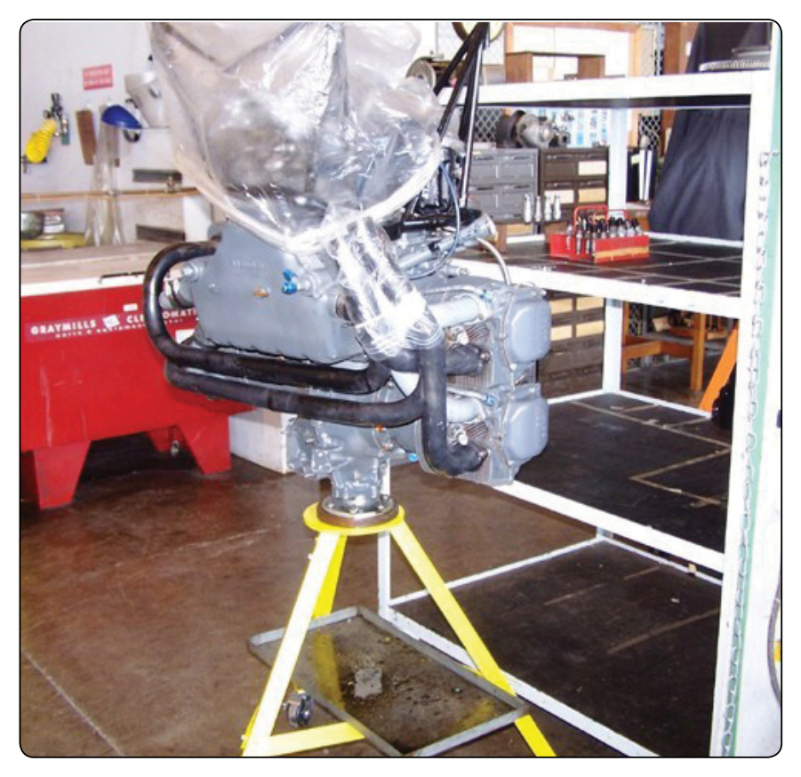
인수검사(Receiving Inspection): 엔진 외관·기록·운전이력 확인, 손상·누설 점검.Receiving inspection: check the engine's exterior, records, and operating history, and inspect for damage and leaks.
분해(Disassembly)는 정해진 순서·전용공구로 부품 손상 없이 진행.Disassembly is done in the prescribed order with proper tools, without damaging parts.
분해 부품은 식별·정리해 혼입·분실을 방지한다.Disassembled parts are identified and organized to prevent mix-ups and loss.
세척(Cleaning)은 검사 정확도의 전제 — 오염·카본·페인트를 제거한다.Cleaning is the prerequisite for accurate inspection — it removes contaminants, carbon, and paint.
방법: 용제 세척(Solvent), 화학 세척, 그릿/소다 블라스팅(Blasting).Methods: solvent cleaning, chemical cleaning, and grit/soda blasting.
⚠️ 알루미늄 등 연질금속은 손상 방지를 위해 세척법을 선택한다.Warning: for soft metals such as aluminum, choose the cleaning method carefully to avoid damage.
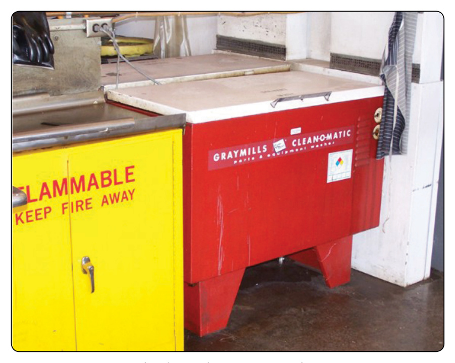
육안검사(Visual Inspection)는 모든 검사의 기본 — 균열·부식·마모·변색·소손을 확인.Visual inspection is the basis of all inspection — checking for cracks, corrosion, wear, discoloration, and burning.
확대경·보어스코프(Borescope)로 내부·접근곤란부를 점검.Use a magnifier or borescope to inspect internal and hard-to-reach areas.
이상 발견 시 정밀검사(NDI)로 확인한다.If a defect is found, confirm it with non-destructive inspection (NDI).
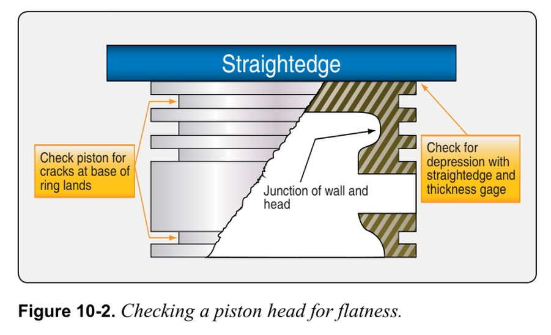
비파괴검사(NDI: Non-Destructive Inspection)로 표면·내부 결함을 탐지한다.Non-destructive inspection (NDI) detects surface and internal defects.
방법: 자분탐상(Magnetic Particle), 침투탐상(Dye Penetrant), 와전류(Eddy Current), 초음파(Ultrasonic), 방사선(X-ray).Methods: magnetic particle, dye penetrant, eddy current, ultrasonic, and X-ray.
균열(Crack)은 피로파괴의 시작 — 조기 발견이 안전의 핵심.A crack is the start of fatigue failure — early detection is key to safety.
치수검사(Dimensional Inspection): 마이크로미터·게이지로 마모량을 측정해 한계와 비교.Dimensional inspection: measure wear with micrometers and gauges and compare with the limits.
측정 항목: 실린더 보어(Bore), 피스톤·링 마모, 베어링 간극, 크랭크샤프트 진원도.Items measured: cylinder bore, piston and ring wear, bearing clearance, and crankshaft runout.
서비스 한계(Service limit) 초과 부품은 교환한다.Parts exceeding the service limit are replaced.
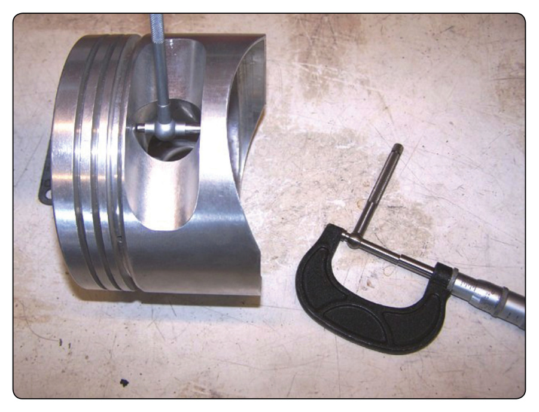
- A. .005 inch.005 inch.
- B. plus .001 inchplus .001 inch.
- C. minus .001 inchminus .001 inch.
재조립(Reassembly)은 규정 토크·순서·신품 가스켓/실로 진행.Reassembly is done with the specified torque, sequence, and new gaskets/seals.
안전결선(Safety wire)·잠금 처리로 풀림을 방지.Safety wire and locking devices prevent loosening.
조립 후 시운전(Test cell)으로 출력·누설·진동을 검증.After assembly, a test-cell run verifies power, leaks, and vibration.
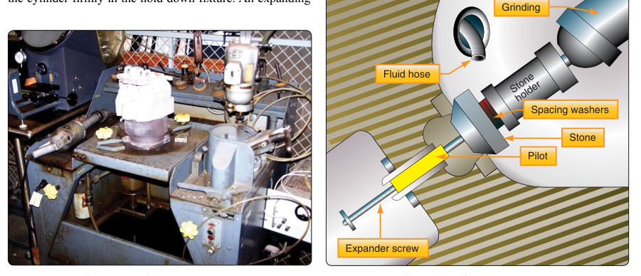
엔진 운용(Operation): 시동·난기(Warm-up)·출력설정·냉각·정지의 절차를 따른다.Engine operation follows procedures for starting, warm-up, power setting, cooling, and shutdown.
혼합비(Mixture)·출력(Power)·RPM 관리가 효율·수명을 좌우.Managing mixture, power, and RPM governs efficiency and service life.
⚠️ 급격한 온도변화(Shock cooling)는 균열·손상을 유발한다.Warning: rapid temperature change (shock cooling) can cause cracks and damage.
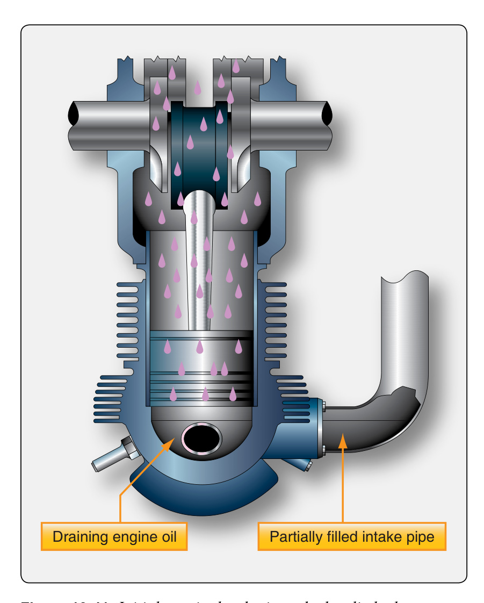
RSA 연료분사 엔진 시동 절차
Starting RSA Fuel-Injection EnginesTCM과 RSA 연료분사 계통은 작동 원리가 달라 시동 절차도 다르다. RSA 엔진 시동 순서: ① 배터리 마스터 ON, ② 연료선택밸브를 POH 지정 탱크로, ③ 얼터네이트 에어를 DIRECT로, ④ 프로펠러 피치를 LOW PITCH(HIGH RPM)로, ⑤ 스로틀 약간 열기, ⑥ 혼합비를 IDLE CUTOFF로 둔다.TCM and RSA fuel injection differ in operating principle, so their starting procedures differ. RSA start sequence: (1) battery master ON, (2) fuel selector to the POH tank, (3) alternate air to DIRECT, (4) propeller pitch to LOW PITCH (HIGH RPM), (5) throttle slightly open, (6) mixture to IDLE CUTOFF.
⑦ 프로펠러 주변에 사람이 없는지 확인하고 "Clear"를 외친다. ⑧ 부스트 펌프 ON, 혼합비를 FULL RICH로 옮겨 유량계에 흐름이 표시되면 다시 IDLE CUTOFF로, 점화스위치를 START로. ⑨ 시동되면 혼합비를 FULL RICH로, 점화스위치를 놓으면 BOTH로 복귀. 오일압력을 확인하고 가장 매끄럽게 도는 위치(보통 약 1,000 RPM)로 스로틀 조정. 30초 내 오일압력이 안 잡히면 정지 후 원인 파악.(7) Ensure no one is near the propeller and call "Clear." (8) Boost pump ON, move mixture to FULL RICH until the flowmeter shows flow, then back to IDLE CUTOFF and ignition to START. (9) When it starts, move mixture to FULL RICH and release the switch (returns to BOTH). Watch oil pressure and set throttle to the smoothest point (~1,000 RPM). If no oil pressure within 30 seconds, shut down and find the cause.

엔진 지상 화재 대처
Engine Ground Fires엔진 시동 시 항상 화재 가능성이 있다. 시동이 잘 안 되면 프라이밍 연료가 흡입계통에 고이고 백파이어(backfire)가 이를 점화할 수 있다. 대형 성형엔진 시동 시에는 소화기를 든 파이어가드(fire guard)를 엔진 옆에 두는 것이 관례다. 일반항공에서는 보통 두지 않지만, 시동할 때는 항상 가장 가까운 소화기 위치를 알아둬야 한다.There is always a fire risk when starting an engine. If hard to start, priming fuel can pool in the induction system and a backfire can ignite it. When starting large radials, it is customary to have a fire guard with an extinguisher by the engine. GA usually does not, but you should always know the nearest extinguisher's location when starting.
흡입계통 화재가 나면 엔진을 계속 크랭킹해서 시동시켜 불을 엔진 안으로 빨아들여 끄도록 한다. 이렇게 해도 안 꺼지고 더는 크랭킹할 수 없으면, 연료를 차단하고 CO2 소화기를 흡입 필터에 분사해 끈다.If an induction fire occurs, keep cranking the engine to start it and draw the fire into the engine to put it out. If this fails and you can no longer crank, shut off the fuel, get a CO2 extinguisher, and discharge it into the induction filter.
왕복엔진 지상 점검
Reciprocating Engine Ground Check지상 점검은 엔진 상태를 많이 알려준다. 프로펠러에 빨려들 돌·자갈이 없는 구역에서, 후류가 다른 항공기·건물로 가지 않도록 기수를 바람 쪽으로 두고(냉각에도 도움) 수행한다. 시동 후 오일온도 게이지에 지시가 나올 때까지 예열한다.A ground check reveals much about engine condition. Perform it in an area free of rocks or pebbles that could be drawn into the propeller, with the aircraft headed into the wind (which also aids cooling) so the slipstream does not hit other aircraft or buildings. After start, warm up until the oil temperature gage indicates.
완전한 지상 점검 항목: ① 발전기/얼터네이터(전류계·전압계 확인), ② 점화스위치 접지(최저 RPM에서 OFF 시 양 마그네토 정지·엔진 꺼짐 확인 후 멈추기 전 BOTH 복귀), ③ 마그네토 점검(POH RPM에서 LEFT/RIGHT 강하량 확인, 양쪽 비슷하고 매끄러워야 함), ④ 연료흐름, ⑤ 프로펠러 거버너(2,200~2,300 RPM에서 고피치로 약 50 RPM 강하 후 스로틀 증가 시 RPM 유지·매니폴드압 상승), ⑥ 정적 RPM(최대 RPM 위치에서 풀스로틀, POH 값 확인).A complete ground check: (1) generator/alternator (check ammeter/voltmeter), (2) ignition switch ground (at lowest RPM, OFF should stop both magnetos and the engine — return to BOTH before it stops), (3) magneto check (at POH RPM, note LEFT/RIGHT drops — nearly equal and smooth), (4) fuel flow, (5) propeller governor (at 2,200–2,300 RPM, ~50 RPM drop to high pitch, then throttle up — RPM steady, manifold pressure rises), (6) static RPM (max RPM position, full throttle, check against POH).
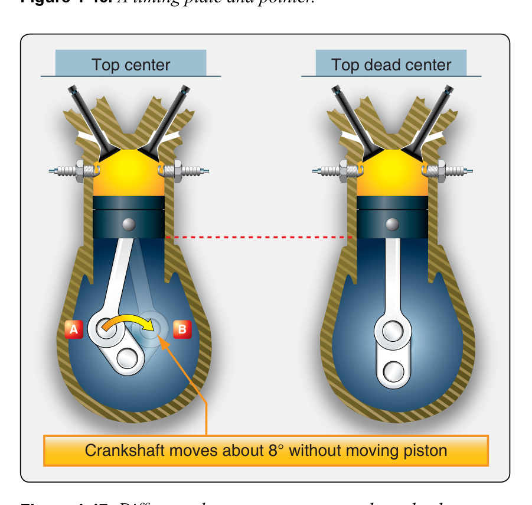
출력에 영향: 흡기온도·압력, 습도, 고도, 연료품질, 혼합비.Factors affecting power: induction temperature and pressure, humidity, altitude, fuel quality, and mixture.
디토네이션(Detonation): 비정상 폭발연소 — 엔진 손상.Detonation: abnormal explosive combustion — damages the engine.
조기점화(Pre-ignition): 정상 점화 전 자연발화 — 과열·손상.Pre-ignition: spontaneous ignition before normal timing — causes overheating and damage.
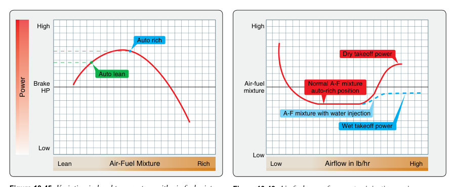
고장탐구(Troubleshooting)는 증상→원인→조치의 논리적 절차로 접근.Troubleshooting follows a logical procedure of symptom → cause → corrective action.
대표 증상: 출력부족, 시동불량, 진동, 오일소비 과다, 과열.Typical symptoms: low power, hard starting, vibration, excessive oil consumption, and overheating.
체계적 점검표(Checklist)로 원인을 좁혀간다.A systematic checklist narrows down the cause.
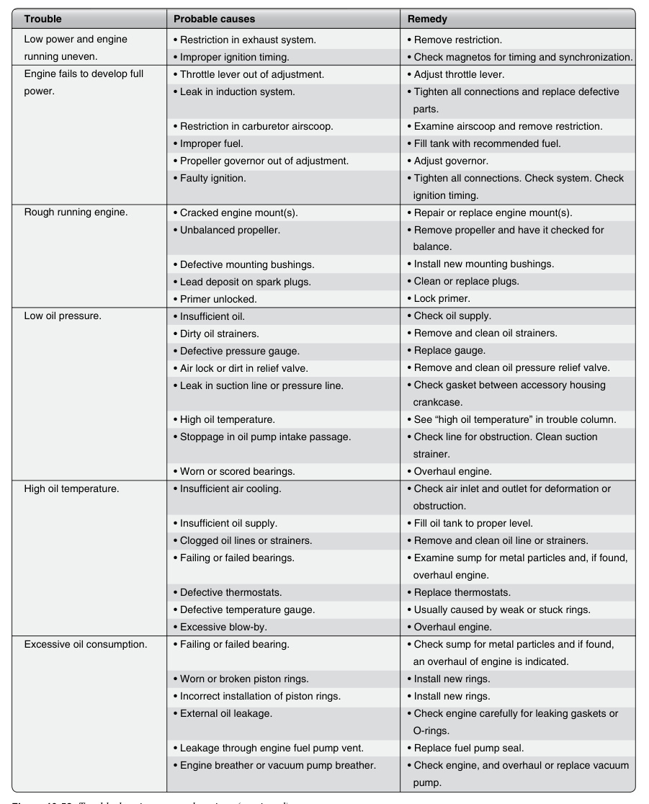
압축시험(Compression Test)은 실린더 기밀상태를 진단하는 핵심 점검.The compression test is a key check that diagnoses the sealing condition of a cylinder.
차압시험(Differential): 규정압을 넣고 누설량 측정(예 80psi 기준).Differential test: apply a regulated pressure and measure the leakage (e.g., against 80 psi).
누설 위치 청취: 흡기(밸브)·배기(밸브)·크랭크케이스(링) 누설을 구분.Listen for the leak location: intake (valve), exhaust (valve), or crankcase (rings).
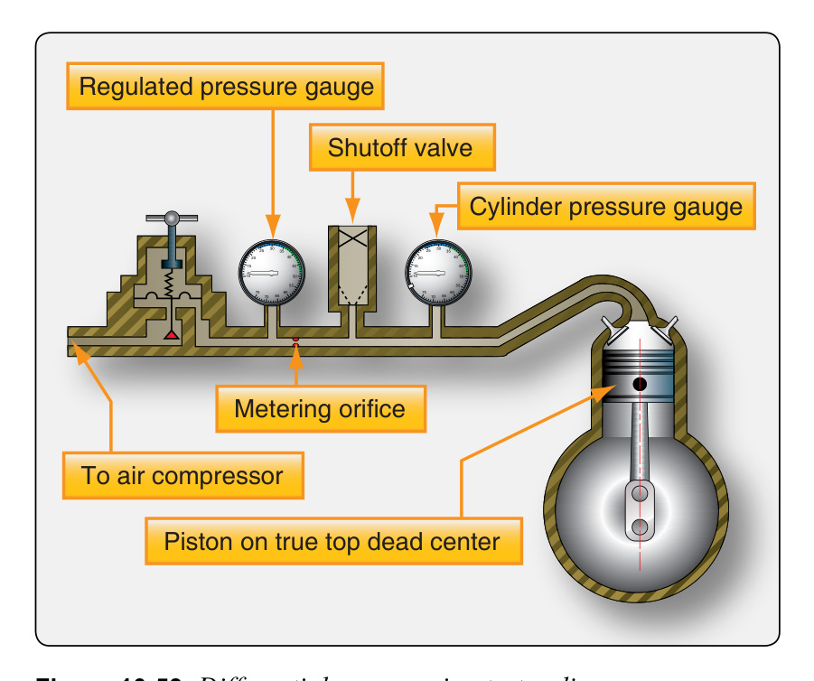
압축 불량·손상 시 실린더를 탈착해 정비/교환한다.When compression is poor or there is damage, the cylinder is removed for service or replacement.
장착 시 규정 토크·순서, 밸브간극·점화시기 재확인.On installation, recheck the specified torque and sequence, valve clearance, and ignition timing.
콜드 실린더 체크(Cold Cylinder Check): 작동 중 실린더별 온도로 점화 이상 진단.Cold cylinder check: diagnose ignition faults from the temperature of each cylinder during operation.
터빈 정비는 보어스코프(Borescope) 검사가 핵심 — 분해 없이 내부 점검.Borescope inspection is central to turbine maintenance — it allows internal inspection without disassembly.
연소실 검사(Combustion Section): 라이너 균열·소손·핫스팟, 노즐 상태 점검.Combustion section inspection: check the liner for cracks, burning, and hot spots, and check the nozzle condition.
터빈블레이드: 크리프(Creep), 침식, 균열을 점검한다.Turbine blades: inspect for creep, erosion, and cracks.
![combustion_liner]()
- A. 노즐 본체 육각부에 새겨진 문자.By a letter stamped on the hex of the nozzle body.
- B. 노즐 본체 육각부에 새겨진 숫자.By a number stamped on the hex of the nozzle body.
- C. 엔진 데이터 플레이트의 코드.By the code located on the engine data plate.
- A. 회보에 명시된 요구 시간 또는 일수 내에.within the required hours or days specified in the bulletin.
- B. 다음 연차 검사 시.at the next annual inspection.
- C. 감항성 개선지시(AD)에서 인용되었을 때만.only when referred to in an Airworthiness Directive (AD).
- A. 엔진 제작사(engine manufacturer).The engine manufacturer.
- B. TBO는 터빈 엔진에 적용되지 않는다.TBO does not apply to turbine engines.
- C. 항공기 제작사.The aircraft manufacturer.
- A. 1만 옳다.only 1 is true.
- B. 2만 옳다.only 2 is true.
- C. 1, 2 모두 옳지 않다.neither 1 nor 2 is true.
- A. FAA.The FAA.
- B. 부품 제작사.The component manufacturer.
- C. 엔진 제작사(engine manufacturer).The engine manufacturer.
- A. 블레이드 루트를 가로질러, 전나무형(fir tree)에 평행하게.Across the blade root, parallel to the fir tree.
- B. 앞전(leading edge)을 따라, 가장자리에 평행하게.Along the leading edge, parallel to the edge.
- C. 앞전 또는 뒷전을 가로질러, 가장자리 길이에 직각으로.Across the leading or trailing edge at a right angle to the edge length.
- A. 탄소 퇴적의 높은 가능성.the high probability of carbon deposits.
- B. 고온에 대한 노출(exposure to high temperatures).exposure to high temperatures.
- C. 엔진 압력 세척 시 용액 노출이 적음.less exposure to solution during engine pressure wash.
- A. 압축기 섹션의 이물질 손상(FOD).foreign object damage to the compressor section.
- B. 엔진의 연마 그릿 세척 빈도 감소 필요.the need for less frequent abrasive grit cleaning of the engine.
- C. 압축기·터빈 섹션의 침식(erosion) 손상.erosion damage to the compressor and turbine sections.
- A. 침식(Erosion).Erosion.
- B. 균열(Cracking).Cracking.
- C. 신장(Elongation).Elongation.
- A. 터빈 블레이드(Turbine blades).Turbine blades.
- B. 케이싱(Casings).Casings.
- C. 입구 가이드 베인(Inlet guide vanes).Inlet guide vanes.
- A. 점화기 플러그 결함.faulty igniter plugs.
- B. 오염된 압축기 블레이드.dirty compressor blades.
- C. 연료 노즐 불량(malfunctioning fuel nozzles).malfunctioning fuel nozzles.
- A. 보충형식증명(STC) 요약.Summary of Supplemental Type Certificates.
- B. 항공기 사양서/형식증명자료집(TCDS).Aircraft Specifications/Type Certificate Data Sheets.
- C. 항공기 엔진 및 프로펠러 사양서/TCDS.Aircraft Engine and Propeller Specifications/Type Certificate Data Sheets.
- A. 1만 옳다.only 1 is true.
- B. 2만 옳다.only 2 is true.
- C. 1, 2 모두 옳다.both 1 and 2 are true.
- A. 14 CFR Part 33 Appendix A.14 CFR Part 33 Appendix A.
- B. 14 CFR Part 43 Appendix D.14 CFR Part 43 Appendix D.
- C. 엔진 사양서 또는 형식증명자료집(TCDS).Engine Specifications or Type Certificate Data Sheets.
- A. AD에 명시된 대로(As specified in the AD).As specified in the AD.
- B. 다음 예정 검사 시.During the next scheduled inspection.
- C. 다음 예정 오버홀 시.At the next scheduled overhaul.
- A. 항공기 형식증명자료집(TCDS).Aircraft Type Certificate Data Sheets.
- B. 프로펠러 형식증명자료집(Propeller TCDS).Propeller Type Certificate Data Sheets.
- C. 엔진 형식증명자료집(Engine TCDS).Engine Type Certificate Data Sheets.
- A. 엔진의 총 피스톤 배기량.The total piston displacement of the engine.
- B. 피스톤이 크랭크축 1회전당 펌프하는 최대 공기량 985 입방인치.The pistons will pump a maximum of 985 cubic inches of air per crankshaft revolution.
- C. 한 실린더의 총 피스톤 배기량.The total piston displacement of one cylinder.
- A. 항공기 사양서와 형식증명자료집(TCDS).The Aircraft Specifications and Type Certificate Data Sheet.
- B. 항공기 엔진 사양서(Aircraft Engine Specifications).The Aircraft Engine Specifications.
- C. 항공기 엔진 형식증명자료집 핸드북.The Aircraft Engine Type Certificate Handbook.
- A. 형식증명(type certificated)되어야 한다.type certificated.
- B. TSO 시스템 하에 제작되어야 한다.manufactured under the TSO system.
- C. 해당 항공기용으로 원래 증명되어야 한다.originally certificated for that aircraft.
- A. 엔진 제작사가 발행한 지속 감항성 지침.Instruction for continued airworthiness issued by the engine manufacturer.
- B. 엔진 제작사의 정비 매뉴얼.Engine manufacturer's maintenance manual.
- C. 항공기 엔진 사양서 또는 형식증명자료집(TCDS).Aircraft Engine Specifications or Type Certificate Data Sheets.
- A. 감항성 개선지시(Airworthiness Directives).Airworthiness Directives.
- B. 14 CFR Part 43.14 CFR Part 43.
- C. 항공기 소유자 매뉴얼.Aircraft owner's manual.
- A. 14 CFR Part 23.14 CFR Part 23.
- B. 보충형식증명(STC).Supplemental Type Certificate.
- C. 14 CFR Part 21.14 CFR Part 21.
- A. 총시간 2,400시간 미만인 시리얼 T8000~T8300의 모든 IVO-355 엔진에 적용.Applies to all IVO-355 engines, serial numbers T8000 through T8300, having less than 2,400 hours total time.
- B. 총시간 2,400시간 이상인 시리얼 T8000~T8900의 모든 IVO-355 엔진에 적용.Applies to all IVO-355 engines, serial numbers T8000 through T8900 with 2,400 hours or more total time.
- C. 총시간·오버홀 후 시간과 무관하게 모든 I.O. 및 TV10-355 엔진에 적용.Applies to all I.O. and TV10-355 engines, all serial numbers regardless of total time or since overhaul.
- A. 엔진 제작사의 서비스 지침(service instructions).Engine manufacturer's service instructions.
- B. 14 CFR Part 43.14 CFR Part 43.
- C. 엔진 제작사의 정비 매뉴얼.Engine manufacturer's maintenance manual.
- A. 엔진 정비 매뉴얼 또는 섹션.Engine maintenance manual or section.
- B. 엔진 오버홀 매뉴얼 또는 섹션.Engine overhaul manual or section.
- C. 감항성 한계 섹션(Airworthiness limitations section).Airworthiness limitations section.
터빈 계기: EGT(배기가스온도), N1/N2(회전수), EPR(엔진압력비), 연료유량.Turbine instruments: EGT (exhaust gas temperature), N1/N2 (rotor speeds), EPR (engine pressure ratio), and fuel flow.
운용: 시동·가속·아이들·정지 절차 준수, 핫스타트·과온 주의.Operation: follow start, acceleration, idle, and shutdown procedures, watching for hot starts and overtemperature.
고장탐구: EGT 계통·타코미터(Tachometer) 이상, 추력부족 등을 계기지시로 진단.Troubleshooting: diagnose EGT-system or tachometer faults and low thrust from the instrument indications.
![turbine_disk]()
- A. 연료 유량계(Fuel flowmeter).Fuel flowmeter.
- B. 연료 압력계.Fuel pressure gauge.
- C. 전자식 연료량 지시계.Electronic fuel quantity indicator.
- A. 항공기 전기계통 전원을 사용하여.using aircraft electrical system power.
- B. 기계적으로.mechanically.
- C. 연료 압력으로.by fuel pressure.
- A. 전기 신호(an electrical signal).an electrical signal.
- B. 모터 축에 직접 연결.direct coupling to the motor shaft.
- C. 기계식 기어트레인.a mechanical gear train.
- A. 기화기 결빙.Carburetor icing.
- B. 하나 이상의 연료 노즐이 막힘.One or more fuel nozzles are clogged.
- C. 대체공기 도어가 열림.Alternate air door stuck open.
- A. 둘(Two).Two.
- B. 셋(Three).Three.
- C. 넷(Four).Four.
- A. 계기상 연료 유량 지시 감소.a decreased fuel flow indication on the gauge.
- B. 계기상 연료 유량 지시 증가.an increased fuel flow indication on the gauge.
- C. 계기상 변화 없음.no change in fuel flow indication on the gauge.
- A. 두 접점 모두 계기에 위치.Both junctions are located at the instrument.
- B. 두 접점 모두 실린더에 위치.Both junctions are located at the cylinder.
- C. 고온 접점은 실린더, 저온 접점은 계기에 위치.The hot junction is located at the cylinder and the cold junction is located at the instrument.
- A. 전류 흐름.current flow.
- B. 주파수(frequency).frequency.
- C. 전압.voltage.
- A. 균형식 가변저항 회로다.It is a balanced-type, variable resistor circuit.
- B. 외부 전원이 필요 없다(no external power source).It requires no external power source.
- C. 온도 지시에 영향을 주는 전압 변동 방지용 균형회로를 케이스에 둔다.It usually contains a balancing circuit in the instrument case to prevent fluctuations of the system voltage from affecting the temperature reading.
- A. 실린더 헤드 온도 지시 저항을 패럿(farad)으로 측정한다.The resistance required for cylinder head temperature indicators is measured in farads.
- B. 열전대 시스템의 전압 출력은 열전대 양단의 온도차로 결정된다.The voltage output of a thermocouple system is determined by the temperature difference between the two ends of the thermocouple.
- C. 마스터 스위치를 켜면 열전대 지시계가 저측으로 벗어난다.When the master switch is turned on, a thermocouple indicator will move off-scale to the low side.
- A. 타코미터(Tachometer).Tachometer.
- B. 연료 유량계.Fuel flowmeter.
- C. 대기속도계.Airspeed indicator.
- A. 대기압(prevailing atmospheric pressure).prevailing atmospheric pressure.
- B. 0(zero).zero.
- C. 해당 조건의 정상보다 낮은 값.lower than normal for conditions prevailing.
- A. 오일 쿨러로 들어가는.entering the oil cooler.
- B. 엔진으로 들어가는(entering the engine).entering the engine.
- C. 오일 저장 탱크 안의.in the oil storage tank.
- A. 하나는 엔진 RPM, 다른 하나는 테일 로터 RPM 지시.One indicates engine RPM and the other tail rotor RPM.
- B. 하나는 메인 로터 RPM, 다른 하나는 테일 로터 RPM 지시.One indicates main rotor RPM and the other tail rotor RPM.
- C. 하나는 엔진 RPM, 다른 하나는 메인 로터 RPM 지시.One indicates engine RPM and the other main rotor RPM.
- A. 현 조건의 정상 온도.Normal temperature for prevailing condition.
- B. 미터의 0측으로 벗어남(off-scale).Moves off-scale on the zero side of the meter.
- C. 미터의 고측으로 벗어남.Moves off-scale on the high side of the meter.
- A. 1, 2 모두 옳다(both 1 and 2 are true).both 1 and 2 are true.
- B. 1, 2 모두 옳지 않다.neither 1 nor 2 is true.
- C. 1만 옳다.only 1 is true.
- A. 지시계 어느 단자에든 어느 리드든 연결 가능하다.may be installed with either lead to either post of the indicator.
- B. 특정 장착용으로 설계되며 변경 불가하다.are designed for a specific installation and may not be altered.
- C. 솔더리스 커넥터로 수리 가능하다.may be repaired using solderless connectors.
- A. 너무 길면 잘라 맞춘다.should be cut and trimmed to fit if the lead is too long.
- B. 한쪽 끝은 배선, 다른 끝은 실린더에 연결된다.are connected to the electrical wiring on one end and the cylinder on the other end.
- C. 실린더에 연결되는 쪽은 베이어닛형만 가능하다.connected to the cylinder can only be bayonet type.
- A. 3상 AC 발전기(three-phase AC generator).The three-phase AC generator.
- B. 2상 AC 발전기.The two-phase AC generator.
- C. 동기 모터.The synchronous motor.
- A. 엔진 입구 전압에 터빈 출구 전압을 곱함.multiplying engine inlet total pressure by turbine outlet total pressure.
- B. 터빈 출구 전압을 엔진 입구 전압으로 나눔(dividing turbine outlet by engine inlet).dividing turbine outlet total pressure by engine inlet total pressure.
- C. 엔진 입구 전압을 터빈 출구 전압으로 나눔.dividing engine inlet total pressure by turbine outlet total pressure.
- A. 오버슈트(Overshoot).Overshoot.
- B. 웨이스트 게이트 변동.Waste gate fluctuation.
- C. 부트스트래핑(Bootstrapping).Bootstrapping.
- A. 피스톤 배기량.piston displacement.
- B. 압축비.compression ratio.
- C. 평균유효압력(mean effective cylinder pressure).mean effective cylinder pressure.
- A. RPM 지시계.RPM indicator.
- B. 터빈 입구 온도(Turbine inlet temperature).Turbine inlet temperature.
- C. 토크미터.Torquemeter.
- A. 연료조절 조정 불량.Fuel control out of adjustment.
- B. EGT 지시계 열전대 프로브 결함·부식.Loose or corroded thermocouple probes for the EGT indicator.
- C. 터빈 손상 또는 터빈 효율 손실(turbine damage or loss of turbine efficiency).Turbine damage or loss of turbine efficiency.
- A. 생성되는 엔진 추력(engine thrust being produced).engine thrust being produced.
- B. 압축기 전후단 간 압력비.pressure ratio between the front and aft end of the compressor.
- C. 엔진 RPM 대 압축기 압력비.ratio of engine RPM to compressor pressure.
- A. 압축기 섹션 후단.At the aft end of the compressor section.
- B. 최고압력을 받도록 결정된 배기 콘 위치.At a location in the exhaust cone that is determined to be subjected to the highest pressures.
- C. 마지막 터빈 단 직후(immediately aft of the last turbine stage).Immediately aft of the last turbine stage.
- A. 엔진 RPM 백분율(Percent of engine RPM).Percent of engine RPM.
- B. 실제 엔진 RPM.Actual engine RPM.
- C. 엔진 압력비 백분율.Percent of engine pressure ratio.
- A. 모든 정상 운전의 최대 운전 한계.the maximum operating limit for all normal operations.
- B. 시동 같은 고과도(high transient) 시 최대 한계.the maximum limit for high transients such as starting.
- C. 제한 운전 범위.a restricted operating range.
- A. 전자식 비행계기 시스템(EFIS) 디스플레이.an electronic flight instrument system (EFIS) display.
- B. 비행관리 시스템(FMS).a flight management system (FMS).
- C. 엔진 지시·승무원 경보 시스템(EICAS).an engine indicating and crew alerting system (EICAS).
- A. 오토-린(auto-lean)에서 운전이 허용되는 범위.The range within which operation is permitted in auto-lean.
- B. 쌍발기에서 한 엔진 운전 시 권장 범위.The desired operating range on a twin-engine aircraft when operating on one engine.
- C. 오토-리치에서 운전해야 하는 범위.The range within which operation must be in auto-rich.
- A. 배기가스 온도가 규정 한계를 초과하면 핫 스타트(hot start)다.a hot start is indicated if the exhaust gas temperature exceeds specified limits.
- B. 과도하게 희박한 혼합기는 핫 스타트를 유발하기 쉽다.an excessively lean mixture is likely to cause a hot start.
- C. 라이트오프(light-off)가 나타나는 즉시 스타터 스위치를 놓는다.release the starter switch as soon as indication of light-off occurs.
- A. Pt7.Pt7.
- B. Pt2.Pt2.
- C. Tt7.Tt7.
- A. 버너 압력(burner pressure).Burner pressure.
- B. 혼합기 조절 위치.Mixture control position.
- C. 배기가스 온도.Exhaust gas temperature.
- A. 케이스가 수축하기 전에 터빈 휠이 냉각되도록 한다.allow the turbine wheel to cool before the case contracts around it.
- B. 연료조절장치/연료라인의 베이퍼 록(vapor lock)을 방지한다.prevent vapor lock in the fuel control and/or fuel lines.
- C. 엔진 베어링의 고착(seizure)을 방지한다.prevent seizure of the engine bearings.
- A. 연료가 노즐로 빠르게 차단되고 매니폴드가 배출되어 잔열에 의한 연료 비등을 방지한다.The fuel is quickly cut off to the nozzles and the manifolds are drained preventing fuel boiling off as a result of residual engine heat.
- B. 압축기 토출구에서 압축기 블리드 공기를 덤프하여 압축기 실속을 제어한다.The valve controls compressor stall by dumping compressor bleed air from the compressor discharge port under certain conditions.
- C. 엔진 연료조절장치 입구의 최소 연료 압력을 유지하고 과잉 연료를 펌프 입구로 되돌린다.Maintains minimum fuel pressure to the engine fuel control unit inlet and dumps excessive fuel back to the inlet of the engine-driven fuel pump.
- A. 엔진 구동 발전기와 동일하다.is identical to the engine-driven generators.
- B. 피크 부하 시 엔진 구동 발전기를 보조한다.supplements the aircraft's engine-driven generators during peak loads.
- C. 엔진 구동 발전기보다 부하 용량이 크다.has a higher load capacity than the engine-driven generators.
- A. APU 독립 연료 탱크.APU independent fuel tank.
- B. 항공기 헤더 연료 탱크.airplane's header fuel tank.
- C. 항공기 주 연료 탱크(main fuel tank).airplane's main fuel tank.
- A. 터빈 임핀지먼트 시스템.a turbine impingement system.
- B. 공압 스타터(pneumatic starter).a pneumatic starter.
- C. 전기 스타터(electric starter).an electric starter.
- A. 압축기 진입 전 공기 속도를 높인다.increase the velocity of the air before entering the compressor.
- B. 압축기 진입 전 공기 압력을 낮춘다.decrease the pressure of the air before entering the compressor.
- C. 압축기 진입 전 공기 압력을 안정화한다(stabilize).stabilize the pressure of the air before it enters the compressor.
- A. 조종실 파워 레버로 제어된다.is controlled by a flight deck power lever.
- B. 공회전 상태이며 부하가 걸리면 자동으로 정격 속도로 가속한다.remains at idle and automatically accelerates to rated speed when placed under load.
- C. 부하 상태와 무관하게 정격 속도 또는 그 부근을 유지한다.remains at or near rated speed regardless of the load condition.
- A. 안전한 EGT 유지를 위해 공압 부하가 자동으로 조절된다.pneumatic loading will be automatically modulated to maintain a safe EGT.
- B. 안전한 EGT 유지를 위해 전기 부하가 자동으로 조절된다.electrical loading will be automatically modulated to maintain a safe EGT.
- C. 안전한 EGT 유지를 위해 온도 한계와 부하를 운영자가 주의 깊게 감시해야 한다.temperature limits and loads must be carefully monitored by the operator to maintain a safe EGT.
- A. 발전기 부하 해제(unloading the generator).unloading the generator(s).
- B. 블리드 공기 밸브 닫기.closing the bleed air valve.
- C. 블리드 공기 밸브 열기(opening the bleed air valve).opening the bleed air valve.
- A. 발전기에 전기 부하가 걸릴 때.an electrical load is placed on the generator(s).
- B. 블리드 공기 밸브가 열릴 때(bleed air valve is opened).the bleed air valve is opened.
- C. 블리드 공기 밸브가 닫힐 때.the bleed air valve is closed.
- A. 파워 컨트롤 레버 위치로 수동으로.manually through power control lever position.
- B. APU 연료조절 시스템에 의해 자동으로.automatically by the APU fuel control system.
- C. 항공기 주 엔진 연료조절장치에 의해 자동으로.automatically by an aircraft main engine fuel control unit.
엔진 운용과 비정상 연소 📙 Jeppesen 참고
Engine Operation & Abnormal Combustion엔진은 스로틀(출력)·믹스처(혼합비)·프로펠러(RPM)로 제어하고, RPM·매니폴드압(MAP)·오일압·오일온도·CHT·EGT로 감시합니다. 비정상 연소: 디토네이션(자발 폭발), 조기점화(핫스팟 조기 점화), 백파이어(과희박→흡기로 역화), 애프터파이어(과농후→배기에서 연소). 이들은 손상·과열을 부르므로 올바른 연료·혼합비·냉각·점화시기로 예방합니다.The engine is controlled by throttle (power), mixture, and propeller (RPM), and monitored by RPM, manifold pressure (MAP), oil pressure, oil temperature, CHT, and EGT. Abnormal combustion: detonation (spontaneous explosion), preignition (early ignition from a hot spot), backfire (too lean — burns back through intake), and afterfire (too rich — burns in exhaust). These cause damage and overheating, prevented by correct fuel, mixture, cooling, and timing.
실린더 상태는 차압 압축시험(differential compression)으로 밸브·링·피스톤 밀봉을 점검합니다 — 누설음 위치(흡기=흡기밸브, 배기=배기밸브, 크랭크케이스 브리더=링)로 원인을 가립니다. 시운전 시 마그네토 점검 RPM 강하, 오일압·온도, 아이들·가속 반응을 확인하고, 규정 워밍업·리닝 절차를 따릅니다.Cylinder condition is checked by a differential compression test of valve, ring, and piston sealing — the leak location (intake = intake valve, exhaust = exhaust valve, crankcase breather = rings) isolates the cause. On run-up, check magneto RPM drop, oil pressure/temperature, and idle/acceleration response, following specified warm-up and leaning procedures.
- A. 늦은 점화시기Late ignition timing.
- B. 높은 매니폴드압 또는 높은 흡기온도High manifold pressure or high intake air temperature.
- C. 늦은 점화시기와 과열된 엔진Late ignition timing and an overheated engine.
동력장치 고장탐구 📙 Jeppesen 참고
Powerplant Troubleshooting고장탐구는 증상→가능 원인→점검→조치의 체계적 순서로 합니다. 왕복엔진: 시동불가(연료·점화·압축 중 무엇이 없는지), 거친 작동(플러그 오염·혼합비·점화선), 출력부족(흡기누설·타이밍·압축), 오일소비 과다(링·밸브가이드·씰). 필터의 금속입자는 내부마모 신호로 자석·SOAP로 판별합니다.Troubleshoot systematically: symptom → probable cause → check → action. Reciprocating: no start (which of fuel, ignition, compression is missing), rough running (fouled plugs, mixture, ignition leads), low power (intake leak, timing, compression), high oil use (rings, valve guides, seals). Metal in the filter signals internal wear, identified by magnet and SOAP.
터빈엔진: 시동 이상(행/핫 스타트), EGT 초과(연료조절·터빈 손상·공기흐름), 진동(로터 불균형·베어링), 압축기 실속(흡기왜곡·VSV·블리드밸브). 성능은 EPR·N1·N2·EGT 추세로 판단하며, 이상 시 제작사 고장탐구 차트와 트렌드 모니터링으로 접근합니다.Turbine: start faults (hung/hot start), EGT exceedance (fuel control, turbine damage, airflow), vibration (rotor imbalance, bearings), and compressor stall (inlet distortion, VSV, bleed valves). Performance is judged by EPR, N1, N2, and EGT trends, using the maker's troubleshooting charts and trend monitoring when abnormal.
엔진 계기 눈금 표시(색 코드) 심화 📙 Jeppesen 정독
Engine Instrument Markings (Color Codes)엔진 계기 표시는 작동 한계와 범위를 규정하며 형식증명 데이터시트(TCDS)의 한계에 근거합니다. 초록 호·선은 가장 널리 쓰이는 표시로 안전·정상 범위이며, 상단은 연속운전 최대한계·하단은 최소한계로 대개 제한이 없습니다. 노란 호·선은 주의(제한적 운전) 범위로 임박한 문제를 경고하므로 설정을 바꾸라는 신호입니다. 빨간 선은 안전한계의 끝(초과 시 위험), 빨간 호는 과도한 진동·응력으로 엔진·기체를 위협할 수 있는 제한 범위입니다. 파란 호는 드물게 특정 조건(예: 일정 고도 이상에서 허용되는 연료유량)에서 쓰이며 회전계·연료유량계·MAP 게이지·CHT 게이지·토크미터 같은 계기에만 나타납니다.Engine instrument markings define operating limits and ranges based on the limits in the Type Certificate Data Sheet (TCDS). Green arcs or lines are the most widely used, showing the safe/normal range — the top is the maximum for continuous operation and the bottom the minimum, usually with no restrictions. Yellow arcs or lines mark a caution (limited-operation) range warning of an impending problem, signaling a change of setting. A red line marks the edge of a safe limit (danger beyond it), and a red arc marks a restricted range where excessive vibration or stress could endanger the engine or airframe. Blue arcs are rare, used for special conditions (such as an allowable fuel flow above a given altitude) and only on instruments like the tachometer, fuel-flow indicator, MAP gauge, CHT gauge, and torque meter.
색 호·선은 대개 계기 면에 직접 칠하지만, 구형 계기는 유리에 칠하기도 해 유리와 케이스 사이에 흰색 인덱스 마크(index mark)를 둡니다. 이 방사형 흰 선이 어긋나 있으면 유리가 돌아갔다는 뜻으로, 눈금과 한계 표시가 부정확·불신뢰해지므로 유리를 재정렬해 고정해야 합니다. 현대 기체는 디지털 표시로 같은 색 규칙을 쓰되 다양한 방식으로 성능을 나타냅니다. 개별 엔진 모델의 성능 한계는 크게 다르므로, 교재의 예시 값이 아니라 반드시 해당 기종의 자료를 따라야 합니다.Color arcs and lines are usually painted on the instrument face, but older instruments may have them on the glass, with a white index mark between the glass and the case. If this radial white line is broken, the glass has rotated, making the range and limit markings inaccurate and unreliable, so the glass must be realigned and secured. Modern aircraft use digital displays that follow the same color rules but present performance in various ways. Because individual engine models' limits vary greatly, always use the specific aircraft's data rather than sample values.
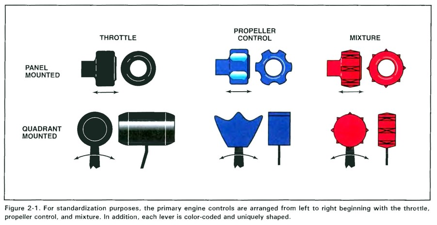
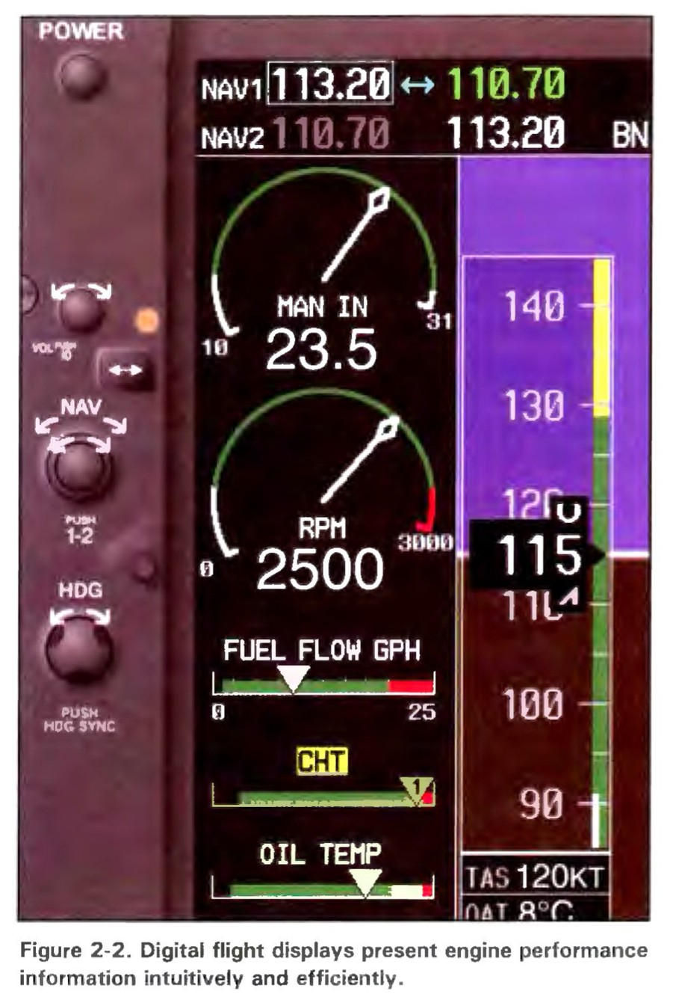
- A. 굽힘과 비틀림(Bending and torsion).Bending and torsion.
- B. 비틀림과 인장(Torsion and tension).Torsion and tension.
- C. 응력 파단(Stress rupture).Stress rupture.
- A. 연료 질량 유량(fuel mass flow).fuel mass flow.
- B. 연료 부피 유량.fuel volume flow.
- C. 엔진 버너 압력 강하.engine burner pressure drop.
주요 엔진 계기(연료·압력·온도) 심화 📙 Jeppesen 정독
Key Engine Instruments — Fuel, Pressure, Temperature기화기 공기온도(CAT) 게이지는 램에어 덕트의 감지구로 기화기 입구 온도를 재며, 주 목적은 기화기 결빙(대개 −15~+5°C) 경고이고 디토네이션 개시(최대온도 초과)나 시동 전후 연료온도·베이퍼록 위험도 알려줍니다. 연료압력 게이지는 기화기나 연료제어부에 공급되는 압력(psi)을 표시해 적정 연료공급과 보조펌프 작동을 확인합니다. 기계식은 부르동관(압력에 비례해 펴짐)·다이어프램·벨로즈(가동범위가 커 정확)식이 있고, 전기식은 트랜스듀서로 신호를 보내 조종석에 연료가 유입되지 않게 합니다. 연료유량계는 시간당 갤런/파운드로 소비율을 표시해 최대출력·속도·항속·연비 설정에 쓰며, 연속분사식은 노즐 차압으로, 오토신(autosyn)식은 연료라인 내 가동 베인의 움직임으로 유량을 잽니다.The carburetor air temperature (CAT) gauge reads inlet temperature via a sensing bulb in the ram-air duct; its main purpose is warning of carburetor icing (typically -15 to +5°C), and it also indicates onset of detonation (above a maximum temperature) and, before/after start, fuel temperature and vapor-lock risk. The fuel pressure gauge shows the pressure (psi) supplied to the carburetor or fuel control to confirm proper fuel delivery and boost-pump operation. Mechanical types use a Bourdon tube (straightens in proportion to pressure), a diaphragm, or a bellows (greater travel, more accurate); electric types send a transducer signal so no fuel enters the cockpit. The fuel-flow indicator shows consumption in gallons or pounds per hour for setting maximum power, speed, range, or economy — a continuous-flow system measures nozzle pressure drop, while an autosyn system measures a movable vane in the fuel line.
매니폴드 절대압(MAP) 게이지는 흡기 매니폴드의 절대압을 inHg로 표시하며 정속프로펠러 기체에 필수입니다. 밀봉·진공 다이어프램/벨로즈로 절대압을 재는데, 시동 전에는 대기압을, 시동 후에는 급강하(때로 절반)를, 전출력 시 자연흡기는 대기압 이하·과급은 대기압 초과를 보입니다(라인에 서지 방지 제한부가 있음). 오일온도 게이지는 오일 입구 온도를 재며 휘트스톤 브리지 또는 전압변동에 강한 레이시오미터(ratiometer) 회로를 씁니다(제작사는 대개 레이시오미터를 선호). 오일압력 게이지는 좁은 범위로 관리하며(예 60~90psi 정상, 25psi 최소·90psi 최대) 시동 후 30초(한랭 시 1분) 내 지시가 없으면 엔진을 정지해야 합니다. CHT 게이지는 열전대(iron-constantan 또는 Chromel-Alumel)로 최고온 실린더 헤드 온도를 재고 계통 전원 없이 작동하며, EGT 게이지도 열전대로 배기온도를 재 혼합비 조절(피크 EGT=최량 연비·최대 체공)에 씁니다. 열전대는 극성·저항에 민감하므로 색코드·정확한 길이의 리드선을 지켜야 합니다.The manifold absolute pressure (MAP) gauge shows intake-manifold absolute pressure in inches of mercury and is required on constant-speed-propeller aircraft. A sealed, evacuated diaphragm or bellows measures absolute pressure: before start it reads ambient, after start it drops sharply (sometimes to half), and at full power a normally aspirated engine stays below ambient while a boosted engine exceeds it (the line has a surge-limiting restriction). The oil temperature gauge reads inlet oil temperature using a Wheatstone bridge or a ratiometer circuit that tolerates supply-voltage variation (makers generally prefer the ratiometer). The oil pressure gauge is held in a narrow band (for example 60-90 psi normal, 25 psi minimum, 90 psi maximum), and if no pressure shows within 30 seconds (one minute in cold weather) the engine must be shut down. The CHT gauge uses a thermocouple (iron-constantan or Chromel-Alumel) to read the hottest cylinder head and works without ship's power, and the EGT gauge likewise uses a thermocouple to read exhaust temperature for mixture setting (peak EGT gives best economy and endurance). Thermocouples are polarity- and resistance-sensitive, so color coding and correct lead length must be maintained.
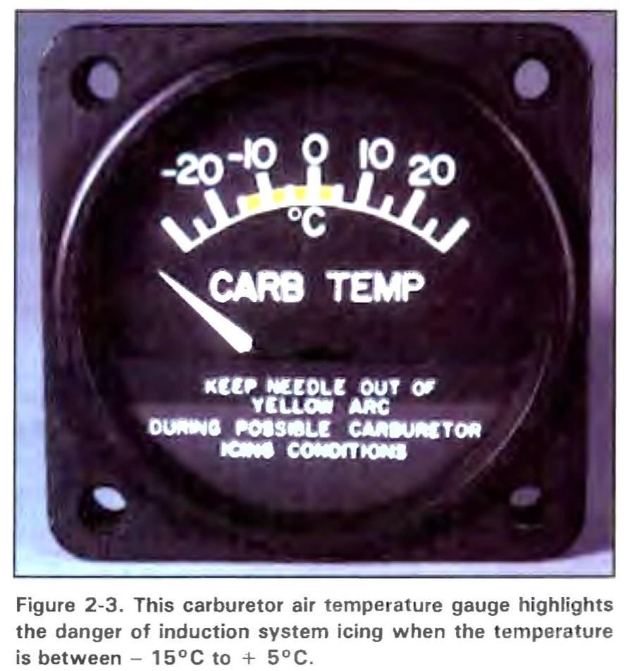
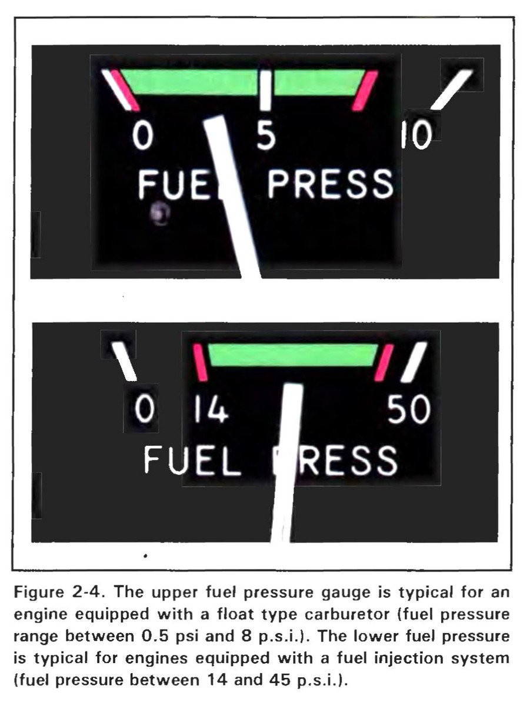
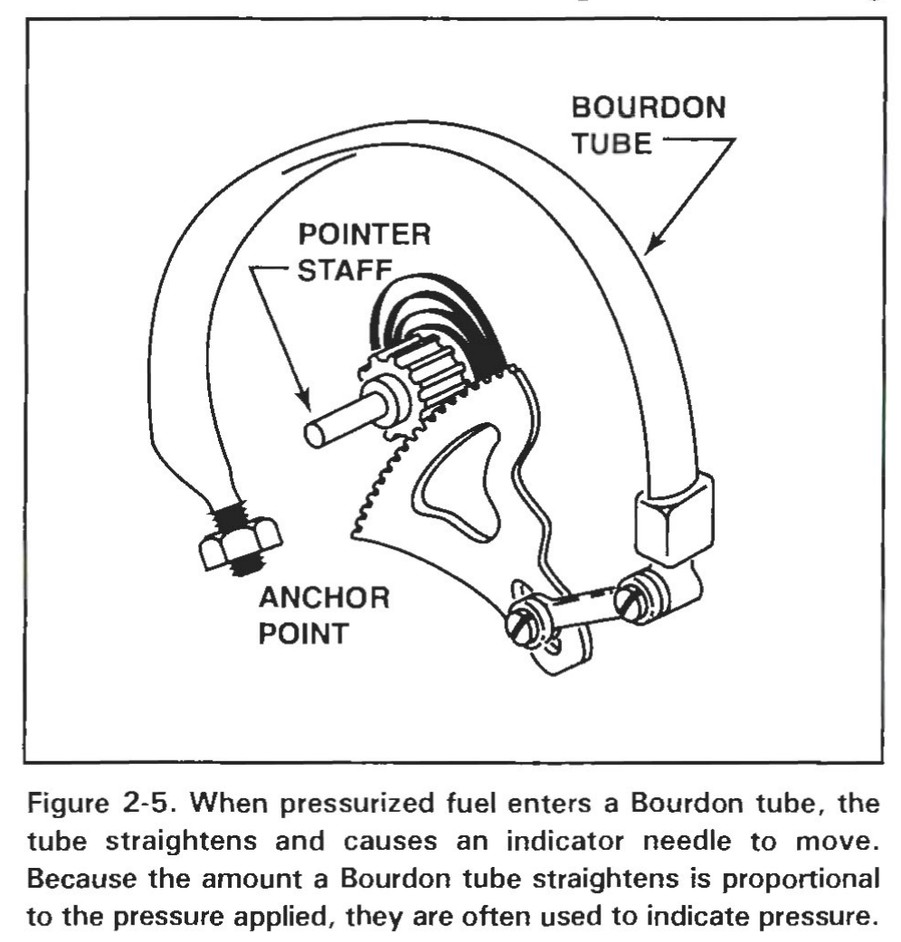
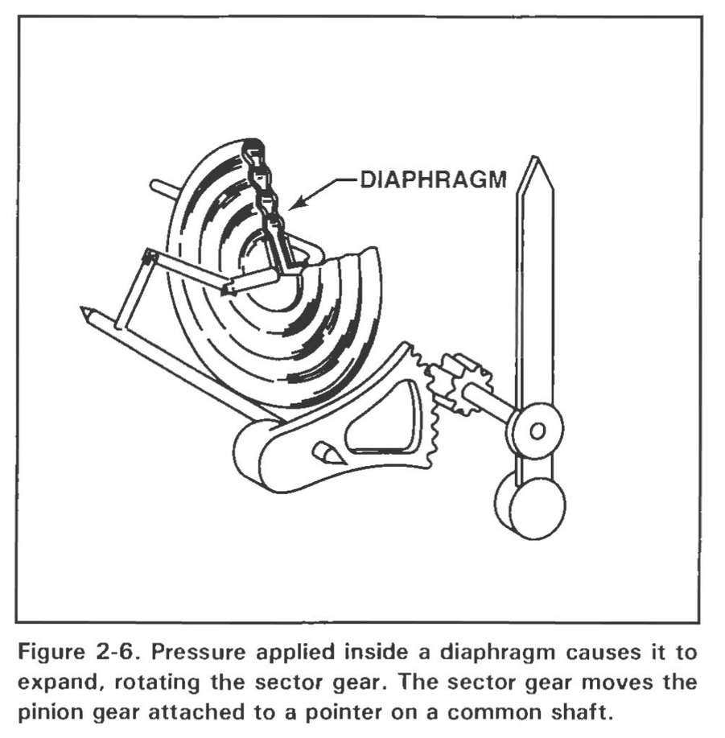
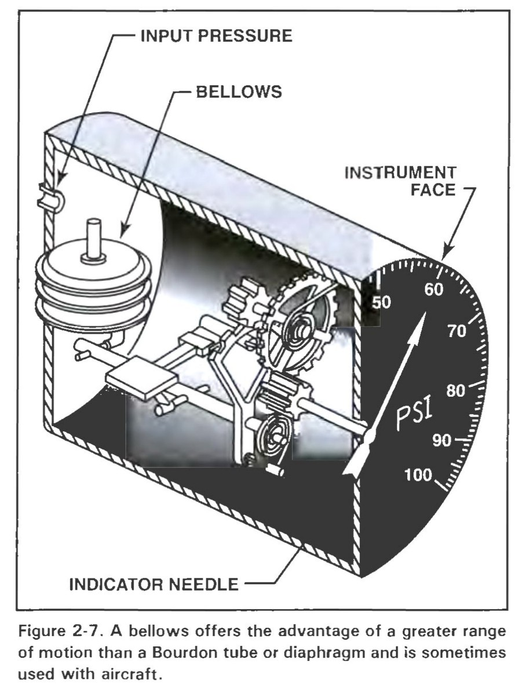
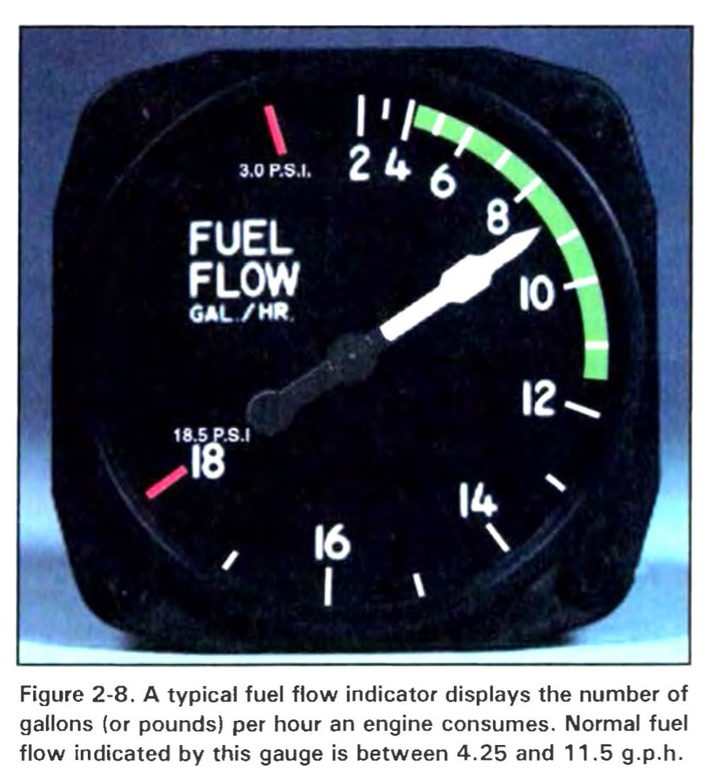
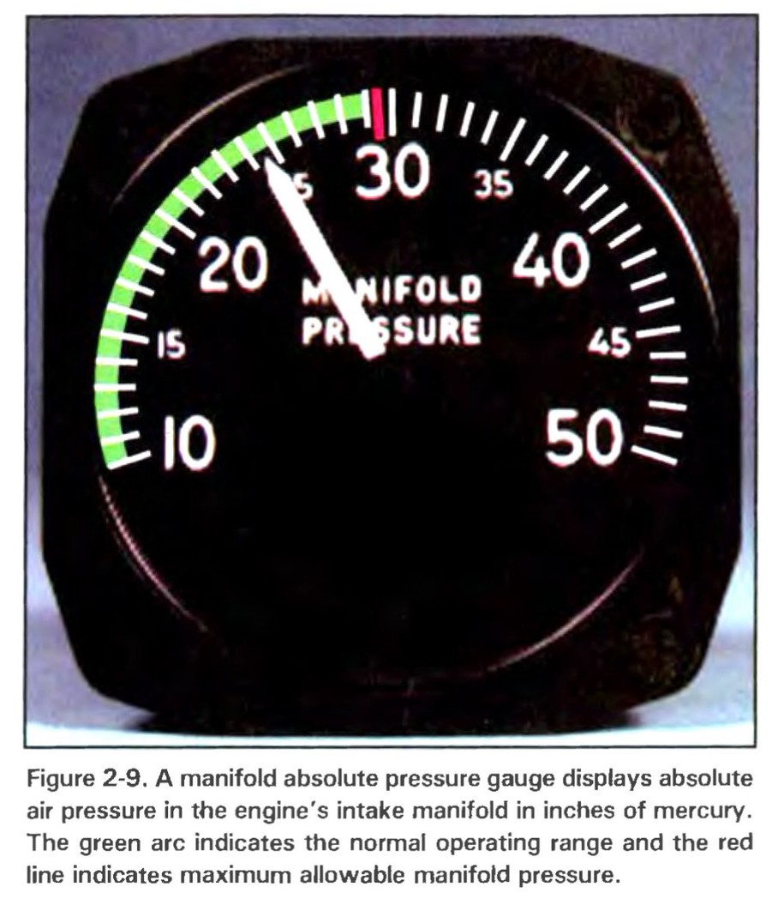
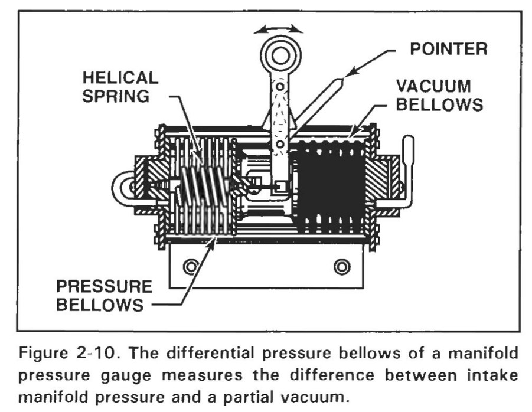
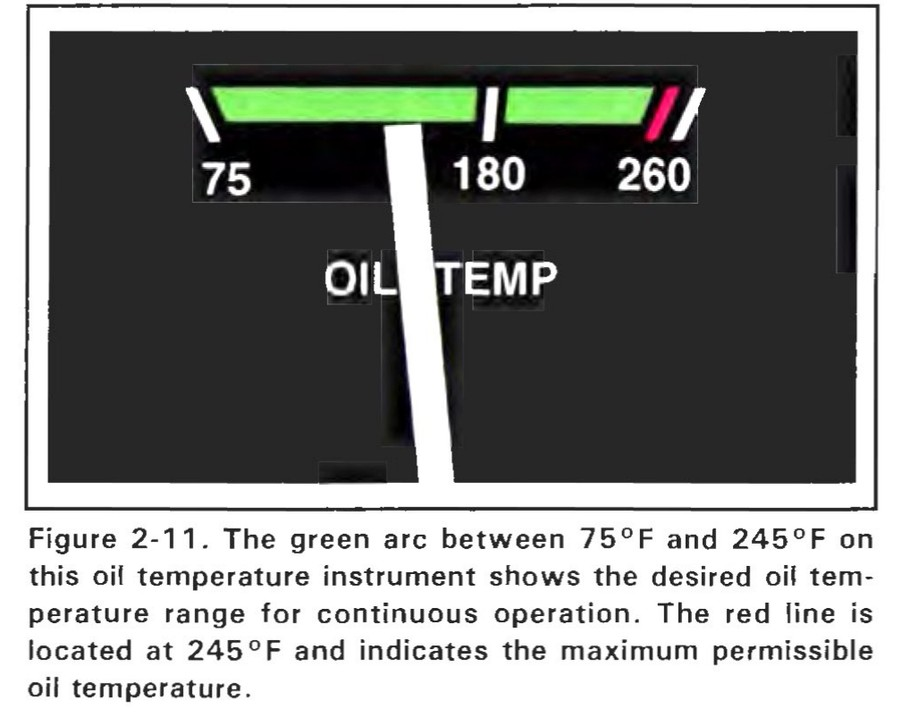
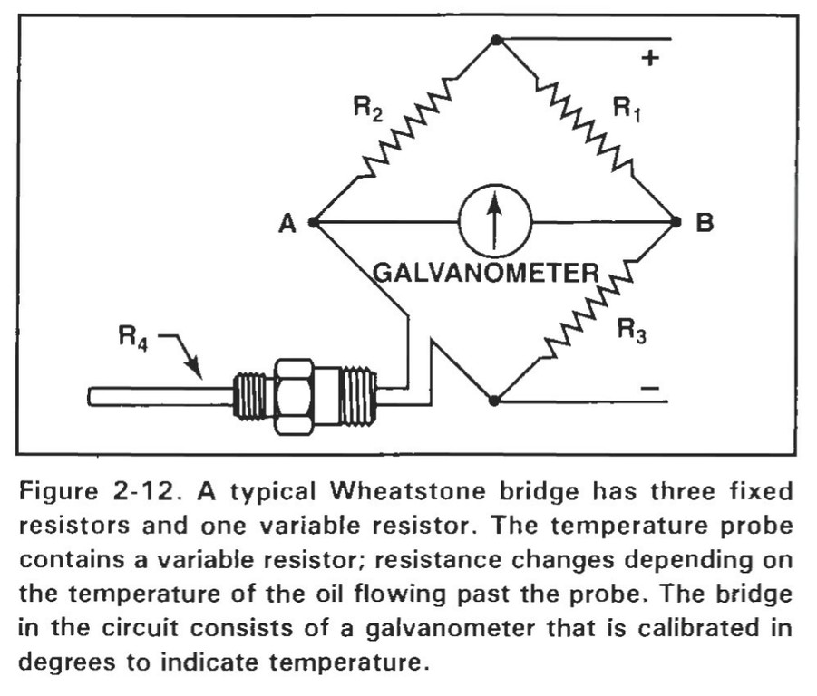
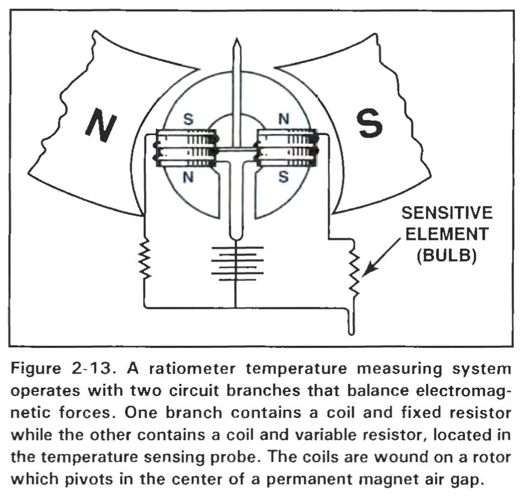
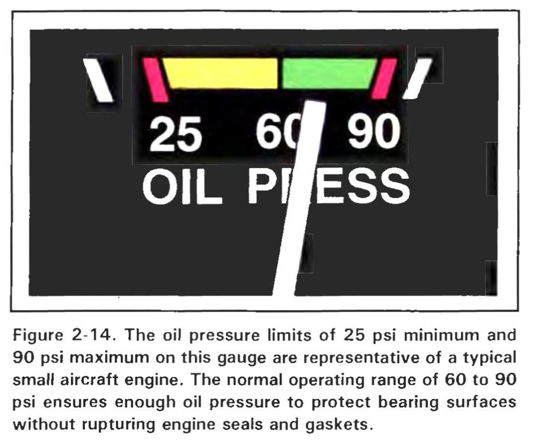
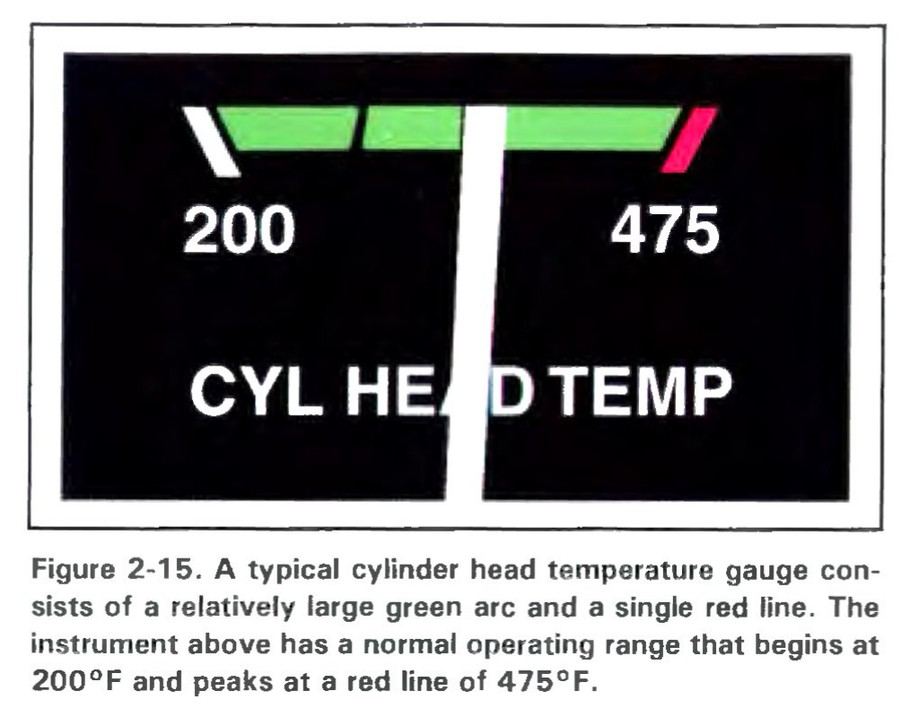
- A. 흡기 매니폴드의 일정 압력 유지.maintain constant pressure in the intake manifold.
- B. 흡기와 대기 간 차압 지시.indicate differential pressure between the intake manifold and atmospheric pressure.
- C. 흡기 매니폴드의 절대압력 지시(absolute pressure).indicate absolute pressure in the intake manifold.
- A. 제동 연료 소비율.brake specific fuel consumption.
- B. 실린더 내에서 연소되는 공연비(air-fuel ratio).air-fuel ratio being burned in the cylinders.
- C. 배기 매니폴드의 배기가스 온도.temperature of the exhaust gases in the exhaust manifold.
- A. 전기동력계(Electrodynamometer).Electrodynamometer.
- B. 검류계(Galvanometer).Galvanometer.
- C. 열전대식 미터.Thermocouple-type meter.
- A. 휘트스톤 브리지 또는 비율계(ratiometer) 회로.either a wheatstone bridge or ratiometer circuit.
- B. 열전대식 회로.a thermocouple type circuit.
- C. 증기압과 압력 스위치.vapor pressure and pressure switches.
- A. 두 이종 금속의 저항 변화.resistance changes in two dissimilar metals.
- B. 두 이종 금속 사이 전압차.a difference in the voltage between two dissimilar metals.
- C. 이종 금속의 고온·저온 접점 온도차로 생기는 전류.a current generated by the temperature difference between dissimilar metal hot and cold junctions.
- A. 철과 콘스탄탄(iron and constantan).iron and constantan.
- B. 구리와 콘스탄탄.copper and constantan.
- C. 크로멜과 알루멜(chromel and alumel).chromel and alumel.
- A. 압력과 온도(pressure and temperature).pressure and temperature.
- B. 압력.pressure.
- C. 온도.temperature.
- A. 연비를 위한 최적 혼합비 설정.obtain the best mixture setting for fuel efficiency.
- B. 엔진 냉각을 위한 최적 혼합비 설정.obtain the best mixture setting for engine cooling.
- C. 엔진 과온도 방지.prevent engine overtemperature.
엔진 분석기와 회전계(타코미터) 심화 📙 Jeppesen 정독
Engine Analyzers and Tachometers대부분의 엔진 제작사는 고출력 상태에서 피크 EGT 또는 그보다 희박한 쪽으로 계속 운전하지 말라고 경고합니다. 제작사 지침에 따라 다르지만, 많은 엔진은 혼합비를 피크 EGT까지 조인 뒤 다시 농후 쪽으로 되돌려 EGT를 약 화씨 25도 낮추는 방식으로 best power를 잡습니다. 디지털 EGT 감시장치 중에는 최적 성능을 위한 연료 조정량을 조종사에게 직접 지시해 주는 것도 있습니다.Most engine makers warn against sustained operation at or leaner than peak EGT when power settings are high. Depending on the manufacturer's instructions, many engines are set to best power by leaning to peak EGT and then enriching until EGT falls about 25 degrees Fahrenheit. Some digital EGT monitors tell the pilot exactly how much fuel adjustment to make for optimum performance.
엔진 분석기(engine analyzer)는 왕복엔진기의 성능을 감시하는 장치로, 가장 단순한 형태가 CHT 게이지와 EGT 게이지입니다. 분석기가 주는 정보로 조종사는 엔진 조작기를 정확히 조정해 원하는 성능을 얻습니다. 다만 계기 지시의 작은 변화는 알아채기 어려운데도 계통이 비정상인지 아는 것은 매우 중요하므로, 분석기 외에 경고등(annunciator) 계통이나 PFD·MFD의 디지털 경고를 함께 갖춰 엔진 변수가 정상 범위를 벗어나면 주의를 끌도록 합니다.An engine analyzer monitors the performance of a reciprocating-engine aircraft; in its simplest form it is just a CHT gauge and an EGT gauge. The information lets the pilot fine-tune the engine controls for the desired performance. Because small changes in indication are hard to notice yet knowing whether a system is abnormal is critical, aircraft often add annunciator lights or digital warnings on a PFD or MFD to draw attention when an engine parameter leaves its normal range.
회전계(tachometer)는 크랭크샤프트의 분당 회전수를 표시하는 1차 엔진계기입니다. 정속 프로펠러 장착기에서는 MAP 게이지와 함께 엔진 성능을 감시하고 설정하는 수단이 됩니다. 비디지털 회전계는 대부분 눈금이 100 rpm 단위이며 최대한계를 나타내는 빨간 선이 표시됩니다. 종류는 기계식·자기식·전기식·전자식 네 가지입니다.The tachometer is a primary engine instrument showing crankshaft revolutions per minute. On aircraft with a constant-speed propeller it works together with the manifold pressure gauge as the means of monitoring and setting engine performance. Most nondigital tachometer faces are graduated in increments of 100 r.p.m. and carry a red line for the maximum limit. Four types are in common use: mechanical, magnetic, electric, and electronic.
기계식은 초기 항공기에 쓰였으며, 유연 구동축(flexible drive shaft)이 기어를 거쳐 계기 내부의 플라이웨이트를 돌리고 원심력으로 벌어진 플라이웨이트의 움직임이 기어 기구를 통해 지침으로 전달됩니다. 자기식도 유연 구동축을 쓰지만 플라이웨이트 대신 드래그 컵(drag cup) 안의 원통형 영구자석을 돌립니다. 자석이 회전하며 만드는 전자기력이 드래그 컵을 같은 방향으로 돌리고, 컵에 붙은 스프링이 회전량을 제한해 그 각도가 엔진 속도로 교정됩니다.Mechanical tachometers were used on early aircraft: a flexible drive shaft turns a set of flyweights inside the instrument through gearing, and centrifugal force moves the flyweights outward, which is transferred to the pointer through a gear mechanism. Magnetic tachometers also use a flexible drive shaft, but instead of flyweights they spin a cylindrical permanent magnet inside a drag cup. Electromagnetic forces drag the cup in the same direction, a spring attached to the cup limits its rotation, and that rotation is calibrated to indicate engine speed.
유연 구동축은 엔진과 조종실 사이 거리 때문에 사용에 한계가 있어, 축을 전선으로 대체한 전기식이 개발되었습니다. 전기식은 엔진에 장착된 타코미터 제너레이터(tachometer generator)와 동기모터가 들어간 지시계로 구성됩니다. 제너레이터는 엔진 속도에 정비례하는 주파수의 교류를 만들고, 그 교류가 지시계 안의 동기모터를 제너레이터와 같은 속도로 돌립니다. 동기모터는 자기식과 비슷한 자석·드래그 컵 조립체를 돌려 rpm을 표시합니다.The distance between engine and cockpit limits how far a flexible drive shaft can be used, so electric tachometers were developed to replace the shaft with wires. An electric system consists of a tachometer generator mounted on the engine and an indicator containing a synchronous motor. The generator produces AC voltage at a frequency directly proportional to engine speed, and that voltage drives the synchronous motor in the indicator at the same speed. The motor spins a magnet and drag cup assembly similar to a magnetic tachometer to display r.p.m.
전자식은 엔진이나 마그네토 계통에서 나오는 전기 펄스를 세어 rpm을 지시합니다. 신호는 엔진 부품, 전용 마그네토 브레이커 포인트, 또는 마그네토 내부의 회전 자석에서 얻을 수 있습니다. 계통이 펄스를 세어 디지털로 조종실 표시부에 보내며, 엔진 속도가 오르면 펄스 주파수와 전압이 올라가 지시가 증가합니다. 단순한 전자식은 접지와 엔진(또는 마그네토) 센서 두 선만으로 장착되며 증폭 없이 계기를 구동할 만큼 강한 타이밍 펄스가 필요합니다. 내부에 솔리드스테이트 증폭기를 둔 복잡한 형식은 항공기 전기계통에서 12V를 받는 세 번째 연결이 필요하며, 약한 펄스를 증폭해 디지털 카운터 회로에 균일한 펄스 전압을 공급합니다.Electronic tachometers indicate r.p.m. by counting electric pulses from the engine or magneto system. The signal can come from an engine component, dedicated magneto breaker points, or the rotating magnet inside a magneto. The system counts pulses and sends them digitally to the cockpit display; as engine speed rises, pulse frequency and voltage rise and the indication increases. A simple electronic tachometer is installed with just two connections, one to ground and one to the engine or magneto sensor, and depends on timing pulses strong enough to run the instrument without amplification. A more complex version has an internal solid-state amplifier that requires a third connection for 12-volt aircraft power; it amplifies weak pulses and supplies a uniform pulse voltage to the digital counter circuitry.
다발기 조종실에는 엔진마다 회전계를 두거나, 하나의 계기로 두 엔진을 함께 표시하기도 합니다. 단일 계기를 쓰는 경우 오른쪽 엔진 지침은 R, 왼쪽 엔진 지침은 L로 구분합니다. 한편 14 CFR Part 27(보통 카테고리 회전익기 감항기준)은 모든 헬리콥터에 회전계 계통을 최소 두 개 갖추도록 요구하며, 하나는 엔진 속도를, 다른 하나는 주 로터 속도를 지시합니다.On multiengine aircraft the cockpit may have one tachometer per engine, or a single instrument that displays both. With a single instrument the needle for the right engine is marked R and the needle for the left engine is marked L. Separately, 14 CFR Part 27 (airworthiness standards for normal category rotorcraft) requires every helicopter to have at least two tachometer systems, one indicating engine speed and the other main rotor speed.
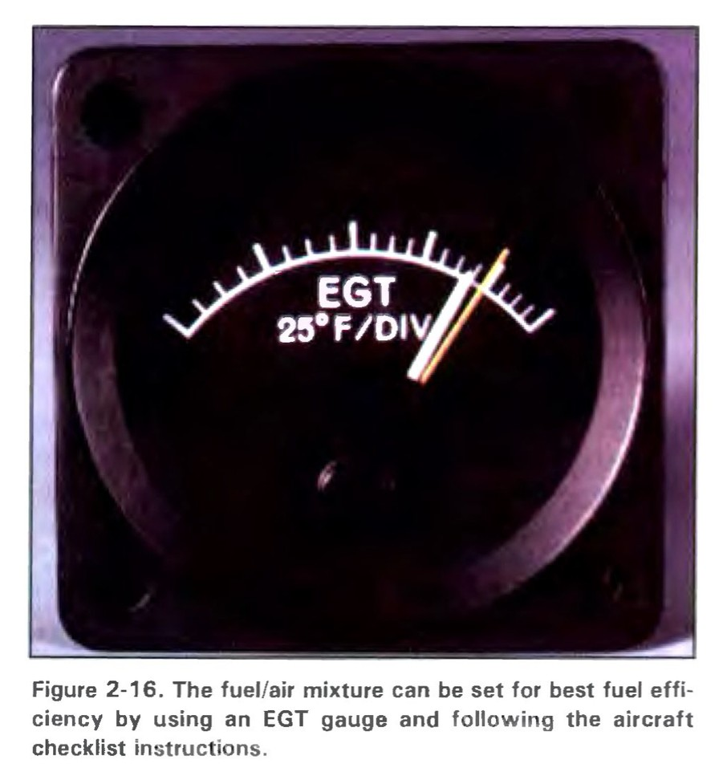
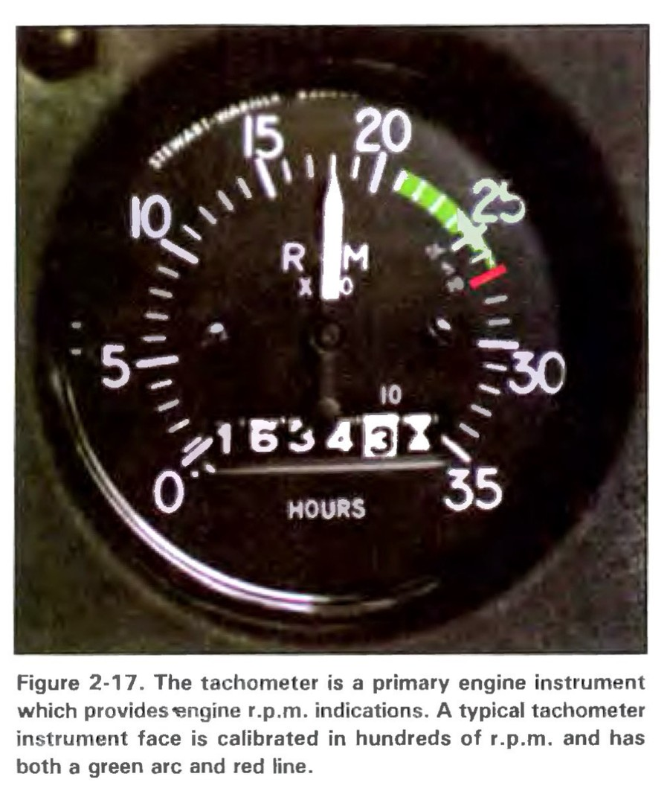
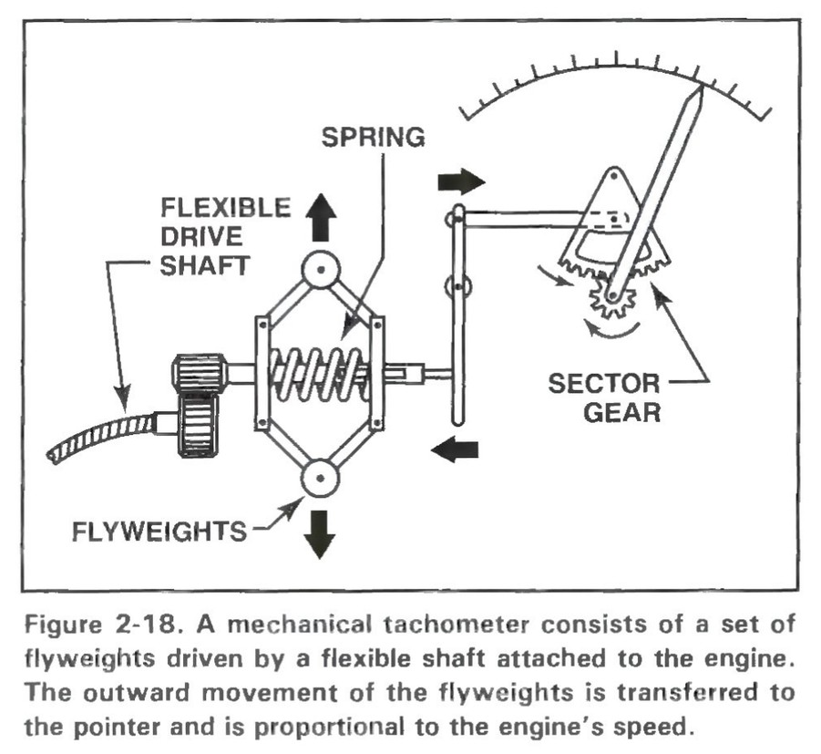
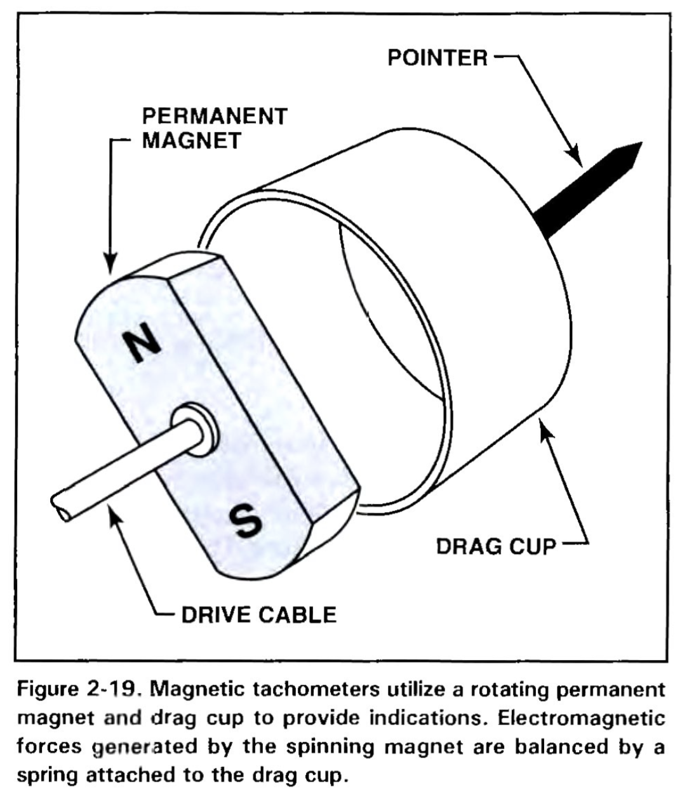
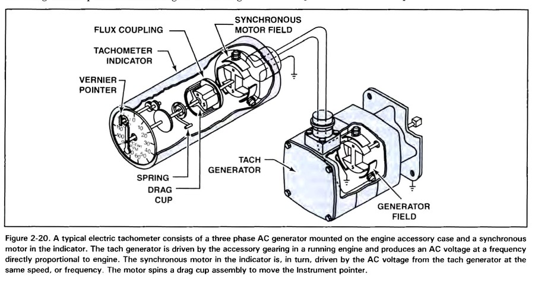
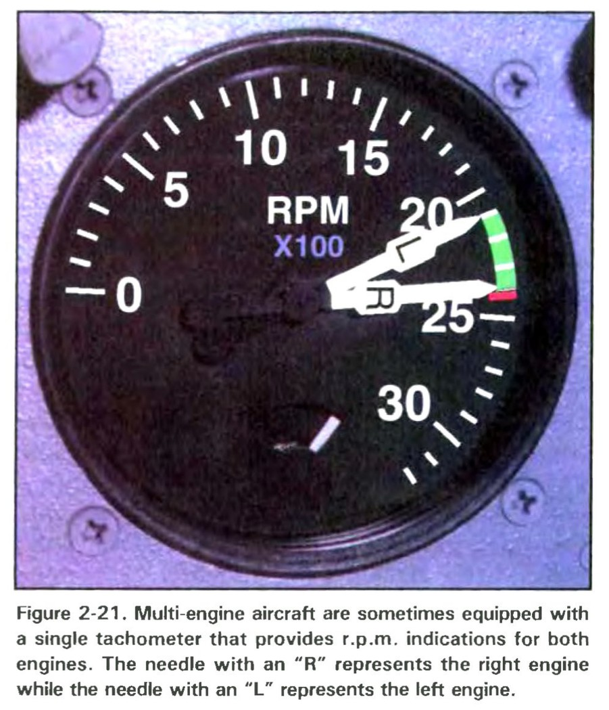
- A. 다이얼 인디케이터Dial indicator.
- B. 타이밍 디스크Timing disc.
- C. 프로프 프로트랙터Prop Protractor.
- A. 권장된다.recommended.
- B. 권장되지 않는다.not recommended.
- C. 제작사가 승인한다.approved by the manufacturer.
- A. 직류 직권 모터.Direct current, series-wound motors.
- B. 동기 모터(Synchronous motors).Synchronous motors.
- C. 직류 분권 모터.Direct current, shunt-wound motors.
- A. 전압(voltage).voltage.
- B. 전류(current).current.
- C. 주파수(frequency).frequency.
석션 게이지와 계기 정비 실무 심화 📙 Jeppesen 정독
Suction Gauge and Instrument Maintenance Practices석션 게이지(suction gauge)는 엔진 성능 정보를 지시하지 않기 때문에 공식적으로는 엔진계기로 분류되지 않습니다. 그러나 항공정비사는 석션 레귤레이터를 조정하고 진공펌프의 작동을 확인할 때 이 계기를 참조합니다. 대부분 수은주 인치(inHg) 단위로 교정되어 있고 주위 압력보다 낮아진 정도를 지시하며, 일반적인 석션 게이지의 정상 작동 범위는 3~6 inHg입니다.The suction gauge is not officially classed as an engine instrument because it indicates no engine performance information. Even so, maintenance technicians refer to it when adjusting the suction regulator and verifying vacuum pump operation. Most are calibrated in inches of mercury and indicate the reduction in pressure below ambient; the normal operating range on a typical suction gauge is between three and six inches of mercury.
100시간 검사와 연간 검사에서는 14 CFR Part 43 Appendix D에 따라 계기의 상태 불량, 장착, 표시, 부적절한 작동 여부를 점검해야 합니다. A&P 자격자는 마운트 스크루와 B너트 조임, 계기 케이스의 벗겨진 도장 보수, 유리면의 범위 표시 교체 같은 경미한 부적합을 시정할 수 있습니다. 케이스의 벗겨진 도장은 계기 작동과 무관한 외관상 결함이므로 계기는 사용 가능하며 즉시 조치할 필요가 없습니다. 반면 계기 케이스를 열어야 하는 부적합은 승인된 수리소(approved repair station)가 시정해야 하며, 이때 정비사의 역할은 결함 계기를 탈거하고 교환하는 것까지입니다.For a 100-hour or annual inspection, 14 CFR Part 43, Appendix D requires that instruments be checked for poor condition, mounting, markings, and improper operation. An A&P can correct minor discrepancies such as tightening mount screws and B nuts, touching up chipped paint on the instrument case, or replacing range markings on the glass face. Chipped paint on the case is cosmetic and has no bearing on proper operation, so the instrument remains serviceable and need not be addressed immediately. Any discrepancy that requires opening the instrument case must be corrected by an approved repair station; the technician's role is then limited to removing and replacing the defective instrument.
A&P 자격이 계기 분해를 허용하지는 않지만 기본적인 예방정비는 할 수 있습니다. 예를 들어 구동축식 회전계는 지시가 불규칙해지지 않도록 흑연으로 윤활합니다. 구동축을 계기·기체·엔진에 붙이는 하드웨어는 확실히 고정되어야 하고, 축의 경로는 과도한 열이나 유체를 피하며 날카로운 굽힘이나 꼬임이 없어야 하고 계기에 응력을 주지 않아야 합니다. 또한 축이 채찍질(whipping)해 지침이 흔들리지 않도록 짧은 간격으로 자주 고정해 줍니다.An A&P license does not permit disassembling instruments, but basic preventive maintenance is allowed. For example, tachometers with drive shafts are lubricated with graphite to prevent erratic indications. The hardware attaching the drive shaft to the instrument, airframe, and engine must be secure; the shaft routing must stay away from excessive heat or fluids, have no sharp bends or kinks, and impose no strain on the instrument. The shaft should also be secured at frequent intervals to prevent whipping, which causes pointer oscillation.
전기식·전자식 회전계 장착부는 주기적으로 점검해 타코미터 제너레이터와 계기가 확실히 장착되어 있는지 확인합니다. 배선은 마모(chafing)를 막도록 제대로 레이싱하고 클램핑해야 하며, 배선 다발은 부식성 유체와 과열로부터 보호하고 클램프 사이에 적당한 여유(slack)를 두어야 합니다.Electric and electronic tachometer installations must be checked periodically to ensure the tachometer generators and instruments are securely mounted. Wires should be properly laced and clamped to prevent chafing, the wiring bundle should be protected from corrosive fluids and excessive heat, and there should be an appropriate amount of slack between clamps.
- A. 연간 점검 시during an annual inspection.
- B. 오버홀 시 및 프롭 스트라이크/급정지 후during engine overhaul and after a “prop strike” or sudden engine stoppage.
- C. 프롭 스트라이크/급정지 후 및 연간 점검 시after a “prop strike” or sudden engine stoppage and during an annual inspection.
- A. 마그네토 타이밍 점검Magneto timing check.
- B. 실린더 압축 점검Cylinder compression check.
- C. 밸브간극 점검Valve clearance check.
- A. 유리 적색선 누락, 유리 균열, 김서림.Red line missing from glass, glass cracked, fogged.
- B. 유리 균열, 0점 복귀 불가, 축에서 바늘 헐거움.Glass cracked, will not zero out, pointer loose on shaft, fogged.
- C. 0점 복귀 불가, 유리 적색선 누락, 유리 균열.Will not zero out, redline missing from glass, glass cracked.
- A. 케이스 페인트 벗겨짐(Case paint chipped).Case paint chipped.
- B. 계기 유리 김서림.Instrument glass fogged.
- C. 장착 나사 헐거움.Mounting screws loose.
지상 운전 안전과 엔진 시동 심화 📙 Jeppesen 정독
Ground Operations and Engine Starting항공기 엔진을 지상에서 운전하는 것은 검사 과정에서 반드시 필요한 작업이지만 인원과 주변 장비에 위험이 되므로 몇 가지 예방조치가 필요합니다. 런업은 그 목적으로 지정된 구역에서 실시하고, 구역이 평탄하고 노면이 깨끗한지 확인하며, 항공기를 바람 쪽으로 향하게 하되 격납고나 다른 항공기 쪽으로 먼지를 날리지 않는 방향으로 둡니다. 출력이 큰 항공기는 출력 점검 중 움직이지 않도록 휠에 촉을 단단히 괴거나 항공기를 타이다운합니다.Running an aircraft engine on the ground is a necessary part of inspection, but because it endangers personnel and surrounding equipment certain precautions are required. Conduct runups in an area designated for that purpose, make sure the area is level with a clear surface, and position the airplane into the wind in a way that avoids blowing dirt into a hangar or onto other aircraft. For powerful aircraft, chock the wheels securely or tie the aircraft down to prevent movement during power checks.
지상 지원장비, 예를 들어 보조동력 카트나 유압 서비스 유닛은 프로펠러 회전 원호에서 떨어뜨려 배치하고 휠에 촉을 괸 뒤 브레이크를 겁니다. 충분한 소화장비를 준비하고, 엔진을 운전하는 사람과 지상 요원 사이에 확실한 통신수단을 마련합니다.Position ground service equipment such as auxiliary power carts or hydraulic service units away from the propeller arc with wheels chocked and brakes set. Ensure adequate fire protection equipment is available, and establish a reliable means of communication between the engine operator and ground personnel.
엔진과 기체 장착 형태마다 시동 절차가 다르므로 해당 항공기 비행교범의 절차를 익히고 경험자의 지도를 받아야 합니다. 다만 모든 왕복엔진기에 공통되는 일반 지침이 있습니다. 매 시동 전에 계류를 풀고, 엔진 유체를 점검하고, 조종실 엔진 조작기가 손상 없이 정상 작동하는지 확인합니다. 런업은 소화장비와 적절한 인원이 배치된 안전 구역에서 실시합니다.Each engine and airframe installation is unique, so study the procedures in the applicable aircraft flight manual and seek instruction from an experienced operator. Still, certain general guidelines apply to all reciprocating-engine aircraft. Before every start, unmoor the aircraft, check engine fluids, and verify that cockpit engine controls are intact and operational. Carry out the runup in a safe area with fire extinguishing equipment and appropriate personnel.
시동에는 항상 화재 가능성이 있으므로 충분한 용량의 이산화탄소 소화기를 준비합니다. 조종실에서 엔진이 보이지 않는 대형 항공기에서는 엔진을 볼 수 있는 위치에 파이어가드를 세우고 조종실과 통신할 수단을 줍니다. 기화기식 왕복엔진을 과도하게 프라임한 뒤 기화기를 통해 역화(backfire)하면 흡기계통의 가솔린에 불이 붙을 수 있습니다. 흡기계통 화재가 발생하면 계속 크랭킹해 화염을 실린더 안으로 빨아들이고, 그래도 꺼지지 않으면 파이어가드에게 소화하도록 신호합니다.The potential for fire is always present when starting an engine, so an adequately sized carbon dioxide fire extinguisher should be available. On large aircraft where the engines are not visible from the cockpit, station a fire guard with a view of the engines and a means of communicating with the cockpit. If a carbureted reciprocating engine is over-primed and backfires through the carburetor, the gasoline in the induction system can ignite. If an induction fire occurs, keep cranking the engine to draw the fire into the cylinders; if that fails, signal the fire guard to extinguish it.
전형적인 대향형 가솔린 엔진의 시동은 다음 순서를 따릅니다. 연료 선택밸브로 선택한 탱크에 연료가 있는지 확인하고, 혼합 조작기를 full rich로 옮기며, 카뷰레터 히트 또는 얼터네이트 에어 조작기를 닫힘(전방) 위치에 둡니다. 정속 프로펠러기는 프로펠러 조작기를 full 전방으로 옮기고, 스로틀은 닫힘 위치에서 약 1/2인치 열어 둡니다. 아비오닉스 스위치는 off로 두고 항공기 마스터 스위치를 켠 뒤, 비행교범에 지정된 대로 프라임하고 마그네토를 켠 다음 시동기를 결합합니다(많은 항공기에서 하나의 키 스위치로 통합). 엔진이 걸리면 스로틀을 1000 rpm으로 조정하고 오일압력을 확인합니다.To start a typical opposed-cylinder gasoline engine: verify fuel is available in the tank selected by the fuel selector, move the mixture control to full rich, and set the carburetor heat or alternate air control to the closed, full-forward position. For a constant-speed propeller, move the propeller control full forward, and set the throttle about one-half inch from the closed position. Leave the avionics switch off, turn the aircraft master switch on, prime as specified by the flight manual, then turn the magnetos on and engage the starter (on many aircraft a single keyed switch does both). After the engine starts, adjust the throttle to 1000 r.p.m. and check for oil pressure.
시동 시도 중 엔진이 플러딩되면 혼합 조작기를 아이들 컷오프에 놓고 스로틀을 완전히 연 뒤 시동기로 엔진을 돌려 실린더의 과잉 연료를 배출시킵니다. 이 과정이 끝나면 정상 시동 절차를 다시 수행합니다.If the engine becomes flooded during a start attempt, place the mixture in idle cutoff, advance the throttle to the full open position, and use the starter to turn the engine and clear the cylinders of excess fuel. Once complete, repeat the normal start procedure.
- A. 안전결선이 로드엔드 섕크 구멍을 통과하는지 확인ensure that the safety wire passes through the hole in shank of the rod-end.
- B. 최소 2산~최대 4산 나사물림 점검be checked for thread engagement of at least two threads but not more than four threads.
- C. 점검구멍으로 나사물림량 점검be checked for the amount of thread engagement by means of the inspection holes.
- A. 마그네토 드롭 확인To check magneto drop.
- B. 만족스러운 성능 확인To determine satisfactory performance.
- C. 공연비 적정 여부 확인To determine if the air-fuel mixture is adequate.
엔진 워밍업과 마그네토 안전점검 심화 📙 Jeppesen 정독
Engine Warm-Up and Magneto Safety Check워밍업은 정상 작동온도에 도달할 때까지 800~1000 rpm 사이에서 엔진을 운전하는 과정입니다. 이 낮은 속도에서는 혼합 조작기를 권고 설정에 그대로 둡니다. 워밍업을 앞당기려고 희박한 혼합을 쓰는 것은 피해야 합니다. 특히 엔진 상태를 알 수 없을 때 적절한 워밍업이 중요한데, 잘못 조정된 아이들 혼합, 간헐적으로 점화되는 스파크 플러그, 부적절하게 조정된 밸브가 서로 겹쳐 엔진 안정성에 영향을 주기 때문입니다.Warm-up means operating the engine between 800 and 1000 r.p.m. until normal operating temperatures are attained. At these lower speeds, leave the mixture control at the recommended setting. Avoid using a lean mixture to hasten warm-up. Proper warm-up matters especially when the condition of the engine is unknown, because an improperly adjusted idle mixture, intermittently firing spark plugs, and improperly adjusted valves have an overlapping effect on engine stability.
정속 프로펠러 장착기는 프로펠러 조작기를 high rpm(low pitch) 위치에 둡니다. 조작기가 low rpm(high pitch)에 있는 상태에서 실수로 고출력 운전을 하면 엔진이 손상될 수 있기 때문입니다. 워밍업 중에는 엔진계기를 감시해 정상 작동 여부를 확인합니다. 앞서 설명한 대로 오일압력은 시동 후 30초 이내에 지시되어야 하며, 지시되지 않으면 즉시 엔진을 정지합니다. 한랭 기후에서는 오일압력 지시가 나타나기까지 최대 60초가 걸릴 수 있습니다.For airplanes with a constant-speed propeller, set the propeller control to the high r.p.m. (low pitch) position. This avoids engine damage from inadvertent high-power operation with the control in the low r.p.m. (high pitch) position. During warm-up, monitor the engine instruments for indications of normal operation. As noted earlier, the oil pressure gauge should indicate pressure within 30 seconds after a start; if it does not, shut the engine down immediately. In cold weather it can take up to 60 seconds to see an indication of oil pressure.
기화기식 엔진은 결빙 조건이 존재할 때 필요에 따라 카뷰레터 히트를 사용합니다. 워밍업 중 기화기 공기를 가열하면 결빙을 막고 원활한 작동을 보장하는 경우가 있습니다. 다만 카뷰레터 히트 계통이 공급하는 따뜻한 공기는 여과되지 않은 공기이므로 먼지가 많거나 오염된 환경에서는 사용하지 않아야 합니다.For carbureted engines, use carburetor heat as required when icing conditions exist. In some cases heating carburetor air during warm-up prevents ice formation and ensures smooth operation. However, the warm air provided by the carburetor heat system is unfiltered and should not be used in dusty or dirty environments.
워밍업 중에는 마그네토 안전점검(magneto safety check)을 수행해 점화계통 연결이 확실한지, 이후 지상점검의 높은 출력 설정에서도 계통이 제대로 작동할지 확인합니다. 이 점검은 아이들 rpm에서 실시합니다. 양쪽 마그네토(both)에서 좌 또는 우 한쪽으로 전환하면 뚜렷한 rpm 강하가 나타나야 하며, 이 강하는 반대편 마그네토가 제대로 접지되었음을 뜻합니다. both에서 off로 전환하면 두 마그네토가 모두 정상 접지된 경우 엔진이 출력 발생을 멈춥니다. 단일 마그네토 위치에서 rpm 강하가 없거나 off로 돌렸을 때 엔진이 꺼지지 않으면 접지 연결 중 하나 또는 둘이 불완전한 것입니다.Perform a magneto safety check during warm-up to verify that ignition system connections are secure and that the system will operate correctly at the higher power settings later in the ground check. This test is done at idle r.p.m. Switching from both magnetos to either left or right should produce a noticeable drop in r.p.m., which indicates the opposite magneto is properly grounded. Switching from both to off should stop the engine from generating power if both magnetos are properly grounded. Failure to obtain a drop in a single magneto position, or failure of the engine to cut out when switched off, indicates that one or both ground connections are incomplete.
- A. 더 크다greater.
- B. 더 작다less.
- C. 같다the same.
- A. EPR의 뚜렷한 변화(noticeable shift in EPR).noticeable shift in EPR.
- B. 거짓 EPR 지시.a false EPR reading.
- C. EPR 증가.an increase in EPR.
지상 점검(런업) 절차와 운전 유연성 심화 📙 Jeppesen 정독
Ground Check Procedure and Operating Flexibility워밍업이 끝나면 지상 점검(ground check)을 수행해 동력장치와 부속장비의 작동을 확인합니다. 여러 조건에서 계기값을 읽어 확립된 표준 성능자료와 비교하며, 일반적으로 지상 점검 항목은 비행 전 런업 체크리스트에 포함되어 있습니다. 가능하면 항공기를 바람 쪽으로 향하게 해 냉각 기류를 활용하고, 항공기 제작사가 승인한 체크리스트를 사용합니다.After warm-up, a ground check verifies the operation of the powerplant and accessory equipment. Take instrument readings under various conditions and compare them with established normal performance data. Ground check items are generally included in a preflight run-up checklist. During the check, point the aircraft into the wind if possible to take advantage of the cooling airflow, and use the aircraft manufacturer's approved checklists.
지상 점검에 통상 포함되는 동작은 다음과 같습니다. 1) 장착되어 있으면 카울 플랩을 엽니다. 2) 혼합을 full rich로 설정합니다. 3) 프로펠러 조작기가 high rpm(low pitch) 위치인지 확인합니다. 4) 카뷰레터 히트 조작기를 cold 위치에(또는 얼터네이트 에어를 닫힘 위치에) 둡니다. 5) 스로틀을 조정해 지정된 rpm을 얻고 필요하면 혼합을 리닝합니다. 6) 기화기식이면 카뷰레터 히트를 적용해 엔진 속도가 약간 떨어지는 것을 확인하고, 속도가 안정되면 카뷰레터 히트를 cold로 되돌립니다.The actions in a ground check typically include: 1) open the cowl flaps if equipped; 2) set the mixture to full rich; 3) verify the propeller control is in the high r.p.m. (low pitch) position; 4) set the carburetor heat control to cold (or alternate air closed); 5) adjust the throttle to obtain the specified r.p.m. and lean the mixture as required; 6) if carbureted, apply carburetor heat and note a slight drop in engine speed, then return the control to cold once speed stabilizes.
7) 마그네토 스위치를 both에서 right로 옮겼다가 both로, 다시 both에서 left로 옮겼다가 both로 되돌립니다. 좌·우 마그네토로 운전하는 동안 약 25~150 rpm의 약간의 속도 강하가 관찰되어야 하며, 양쪽 강하량이 거의 같아야 합니다(일반적으로 최대 차이 50 rpm). 마그네토 작동은 엔진 제작사의 지침과 허용치에 따라 점검합니다. 8) 정속 프로펠러 장착기라면 프로펠러 조작기를 low rpm(high pitch) 쪽으로 당겨 엔진 속도가 감소하는지 확인하고, 프로펠러 제작사 지침에 따라 작동을 점검합니다.7) Move the magneto switch from both to right and back to both, then from both to left and back to both. A slight drop in speed of about 25 to 150 r.p.m. should be observed on each single magneto, and the drop on either should be approximately the same (typically a maximum difference of 50 r.p.m.). Check magneto operation according to the engine manufacturer's instructions and tolerances. 8) If the aircraft has a constant-speed propeller, pull the propeller control toward the low r.p.m. (high pitch) position until a decrease in engine speed is observed, and check propeller operation per the propeller manufacturer's instructions.
9) 연료압력 또는 연료유량과 오일압력을 점검하며 모두 확립된 허용치 내에 있어야 합니다. 10) 장착 장비에 따라 암미터와 석션 게이지로 전기계통과 진공계통의 성능을 점검합니다. 11) 스로틀을 아이들 위치로 되돌립니다.9) Check fuel pressure or fuel flow and oil pressure, all of which must be within established tolerances. 10) Depending on the equipment installed, check the performance of the electrical system and the vacuum system with the ammeter and suction gauge. 11) Return the throttle to the idle position.
지상 점검에서는 엔진이 전 출력 범위에 걸쳐 원활하게 작동하는지도 확인해야 합니다. 운전 유연성(operating flexibility)이란 아이들부터 전출력까지 모든 속도에서 엔진이 원활하고 신뢰성 있게 작동하는 능력을 말합니다. 엔진은 정상 조건은 물론 카뷰레터 히트나 얼터네이트 에어 조작기를 켠 상태에서도 제대로 아이들하고 최대 속도까지 매끄럽게 가속해야 합니다.During a ground check you should also verify whether the engine runs smoothly across its power range. Operating flexibility is the ability of an engine to perform smoothly and reliably at all speeds from idle to full power. The engine should idle properly and accelerate smoothly to maximum speed under normal conditions as well as with carburetor heat or alternate air controls on.
점화계통 점검 판독과 파워 체크 심화 📙 Jeppesen 정독
Ignition Operation Readings and Power Check마그네토 점검에서 나타난 rpm 강하량을 알려진 기준과 비교하면 마그네토의 타이밍이 적절한지, 점화 리드가 제대로 접지되어 있는지 판단할 수 있으며 다른 부적합도 발견할 수 있습니다. 예를 들어 한쪽 마그네토로 전환했을 때 즉각적인 rpm 강하가 나타나면 스파크 플러그나 점화 하네스 결함을 뜻합니다. 반면 평소보다 느린 rpm 강하는 대개 점화시기가 부정확할 때 생깁니다. 이 상태 역시 출력 손실을 일으키지만, 결함 플러그에 의한 손실만큼 빠르게 나타나지는 않습니다.Comparing the r.p.m. drop during the magneto check with a known standard tells you whether a magneto is properly timed and whether the ignition leads are properly grounded, and may reveal other discrepancies. For example, an immediate drop in r.p.m. when switching to one magneto can indicate a faulty spark plug or ignition harness. A slower than normal drop is usually caused by incorrect ignition timing; this also causes a loss of power, but the loss does not occur as quickly as that from a defective spark plug.
한쪽 마그네토로 전환했을 때 엔진이 완전히 실화하면 그 마그네토 점화계통의 고장을 뜻합니다. 반대로 엔진 속도에 전혀 강하가 없으면 접지 연결 결함일 가능성이 큽니다. 좌·우 마그네토 사이를 전환할 때 rpm 차이가 과도하게 크다면 좌우 마그네토의 타이밍 차이 때문일 가능성이 높습니다.An engine that quits firing completely when switched to one magneto indicates a malfunction in that magneto ignition system. Conversely, no drop in engine speed likely indicates a defective ground connection. An excessive difference in r.p.m. when switching between the left and right magnetos is likely due to a difference in timing between them.
대부분의 항공기 제작사는 지상 점검 중 엔진을 전출력으로 운전하도록 요구합니다. 파워 체크는 제작사가 확립한 표준 대비 엔진 성능을 측정하는 절차입니다. 어떤 프로펠러든 일정한 공기밀도와 특정 블레이드 각에서 일정 속도로 돌리려면 동일한 마력이 필요하다는 원리를 이용합니다.Most aircraft manufacturers require operating the engine at full power during the ground check. The power check measures engine performance against the manufacturer's established standard. It relies on the fact that any given propeller, operating at a constant air density and specific blade angle, requires the same horsepower to turn at a certain speed.
고정피치 프로펠러나 프로펠러 테스트 클럽을 장착한 엔진에서는 항공기를 정지시킨 채 스로틀을 완전히 전진시켜 얻어지는 최대 엔진 속도를 기록합니다. 이 정지 상태 엔진 속도를 기온, 기압, 평균해수면 위 고도 등 현재 대기 조건을 감안해 제작사 규정 한계와 비교합니다. 정지 상태 엔진 속도가 규정 한계보다 낮으면 엔진이 전출력을 내지 못하고 있다는 뜻입니다.On an engine with either a fixed-pitch propeller or a propeller test club, record the maximum engine speed obtained while the aircraft is stationary and the throttle is fully advanced. Compare this static engine speed with the manufacturer's prescribed limits, taking into account current atmospheric conditions including air temperature, pressure, and altitude above mean sea level. A static engine speed below prescribed limits indicates the engine is not developing full power.
정속(또는 가변피치) 프로펠러 장착 엔진에서는 프로펠러 조작기를 high rpm(low pitch)에 두고 제작사가 정한 목표 rpm까지 스로틀을 전진시킨 뒤, 그때의 MAP 지시를 제작사 규정 범위와 비교합니다. 엔진 성능이 약하면 정상 작동하는 실린더들이 주어진 rpm을 내기 위해 더 많은 출력을 부담해야 하므로 스로틀을 더 열게 되고 결과적으로 MAP이 올라갑니다. 따라서 같은 rpm에서 MAP이 평소보다 높으면 성능이 떨어지는 실린더나 지연된 점화시기를 시사합니다. 반대로 MAP이 낮으면 점화시기가 빠를 가능성이 큽니다. 빠른 점화시기는 높은 출력 설정에서 디토네이션과 출력 손실을 일으킬 수 있습니다.On an engine with a constant-speed (or variable pitch) propeller, place the propeller control in the high r.p.m. (low pitch) position, advance the throttle to the manufacturer's target r.p.m., and compare the resulting manifold pressure reading with the prescribed range. If engine performance is weak, the functioning cylinders must supply more power for a given r.p.m., so the throttle must be advanced further and manifold pressure rises. Higher than normal manifold pressure for a given r.p.m. therefore often indicates an underperforming cylinder or delayed ignition timing. Conversely, low manifold pressure probably indicates early ignition timing, which can cause detonation and a loss of power at high power settings.
- A. 냉각능력이 더 제한적have more limited cooling capacity.
- B. 벽이 상대적으로 얇고 질화되었을 수 있음have relatively thin walls and may be nitrided.
- C. 고온에서 작동operate at high temperatures.
- A. 늦은 점화시기Late ignition timing.
- B. 옥탄가가 너무 높은 연료 사용Use of fuel with too high an octane rating.
- C. 옥탄가가 너무 낮은 연료 사용Use of fuel with too low an octane rating.
- A. 전개 시 정상보다 낮은 정적 RPMLower than normal static RPM, full throttle operation.
- B. 아이들 RPM의 매니폴드압이 정적 RPM보다 낮음Manifold pressure lower at idle RPM than at static RPM.
- C. 주어진 RPM에서 정상보다 낮은 매니폴드압Lower than normal manifold pressure for any given RPM.
- A. 프레팅(fretting).fretting.
- B. 브리넬링(brinelling).brinelling.
- C. 갈링(galling).galling.
아이들 혼합비, 가감속, 엔진 정지 심화 📙 Jeppesen 정독
Idle Speed and Mixture, Acceleration, and Engine Stopping과도하게 농후한 연료·공기 혼합으로 장시간 아이들 운전하면 잉여 연료가 쌓여 스파크 플러그를 오손시킵니다. 반면 아이들 혼합 설정이 제대로 조정되어 있으면 엔진은 오랫동안 아이들로 운전할 수 있습니다. 올바른 설정에서는 플러그 오손과 배기 연기가 최소화됩니다.If an engine is operated at idle for extended periods with an excessively rich fuel/air mixture, the excess fuel builds up and fouls the spark plugs. With a properly adjusted idle mixture setting, the engine can operate at idle for long periods, and the correct setting results in minimal spark plug fouling and exhaust smoking.
조종실 혼합 조작기로 혼합비를 조정하는 것과 별개로, 지상 점검 중 혼합 점검을 수행해 기화기나 연료분사 계통이 제대로 조정되었는지 확인해야 합니다. 방법은 스로틀을 뒤로 당겨 닫힘 위치에 두고 혼합 조작기를 아이들 컷오프 위치까지 당긴 뒤, 엔진이 출력 발생을 멈추기 직전의 rpm 변화를 관찰하고 즉시 혼합 조작기를 rich 위치로 되돌리는 것입니다. 이때 상승한 rpm 값을 기록합니다.In addition to adjusting mixture in the cockpit with the mixture control, perform a mixture check during the ground check to verify proper adjustment of the carburetor or fuel injection system. Move the throttle aft to the closed position and pull the mixture control aft to idle cutoff, observe the change in r.p.m. just before the engine stops producing power, and then quickly return the mixture control to rich. Record the rise in r.p.m.
적절히 조정된 엔진이라면 rpm이 약간(통상 약 25 rpm) 상승한 뒤 급격히 떨어집니다. 상승폭이 제작사 요구치보다 작거나 아예 상승이 없으면 아이들 혼합이 너무 희박한 것입니다. 반대로 rpm이 공표값보다 크게 상승하면 혼합이 너무 농후한 것입니다.With a properly adjusted engine, r.p.m. should increase slightly (typically 25 r.p.m.) before dropping off dramatically. If the increase is less than the manufacturer requires or no increase occurs, the idle mixture is too lean. If the r.p.m. increases above the published value, the mixture is too rich.
항공기 엔진은 빠르게 가속·감속해야 하므로, 지상 점검에서 스로틀을 아이들부터 전출력까지 부드럽게 움직여 봅니다. 엔진은 주저(hesitation) 없이 가속해야 하고 역화(backfiring) 징후가 없어야 합니다. 마찬가지로 전출력에서 아이들로 스로틀을 당겼을 때 rpm이 고르게 감소해야 하며, 애프터파이어(afterfiring, 배기계통 안에서 연료가 타는 현상)가 없어야 합니다. 가감속 점검은 다른 점검에서는 드러나지 않는 경계 상태를 찾아냅니다. 이 점검에서 발생하는 높은 실린더 압력은 점화계통과 연료계량계통에 상당한 부담을 주므로, 초기 단계에서 부적합을 찾아내면 수리 비용이 낮아지고 운항 안전이 향상됩니다.Aircraft engines must accelerate and decelerate rapidly, so during the ground check move the throttle smoothly from idle to full power. The engine should accelerate without hesitation and with no evidence of backfiring. Likewise, pull the throttle back from full power to idle; r.p.m. should decrease evenly without afterfiring, that is, fuel burning in the exhaust system. Checking acceleration and deceleration reveals borderline conditions undetectable during other checks. The high cylinder pressures developed during this check create significant strain on both the ignition system and the fuel metering system, so identifying discrepancies early provides lower cost repairs and increased operational safety.
엔진을 정지시키는 절차는 연료계통에 따라 엔진마다 조금씩 다르므로 항상 제작사가 제공한 정지 지침을 따릅니다. 일반적으로 대부분의 엔진은 혼합 조작기를 아이들 컷오프 위치로 옮겨 정지시킵니다. 이 절차는 실린더와 흡기계통 안의 연료가 모두 연소되도록 보장하며, 연료가 모두 타고 나면 우발적 시동 가능성이 크게 줄어듭니다. 엔진이 멈춘 후에는 점화 스위치를 off로 돌리고 키를 뽑습니다.The procedure to shut down an engine varies slightly from engine to engine based on the fuel system, so always follow the manufacturer's shutdown instructions. Generally, most engines are stopped by moving the mixture control to idle cutoff. This ensures that all of the fuel in the cylinders and induction system is burned, and once it is burned the chance of an accidental start is significantly reduced. After the engine stops, turn the ignition switch off and remove the key.
지상 운전 중 엔진이 지나치게 뜨거워졌다면 정지 전에 잠시 아이들로 운전합니다. 실린더 헤드 온도와 오일 온도를 식히면 급냉(shock cooling)으로 인한 불필요한 엔진 손상을 예방할 수 있습니다.If an engine becomes excessively warm during ground operations, let it idle for a short time before shutdown. Letting the cylinder head and oil temperatures cool helps prevent unnecessary engine damage from shock cooling.
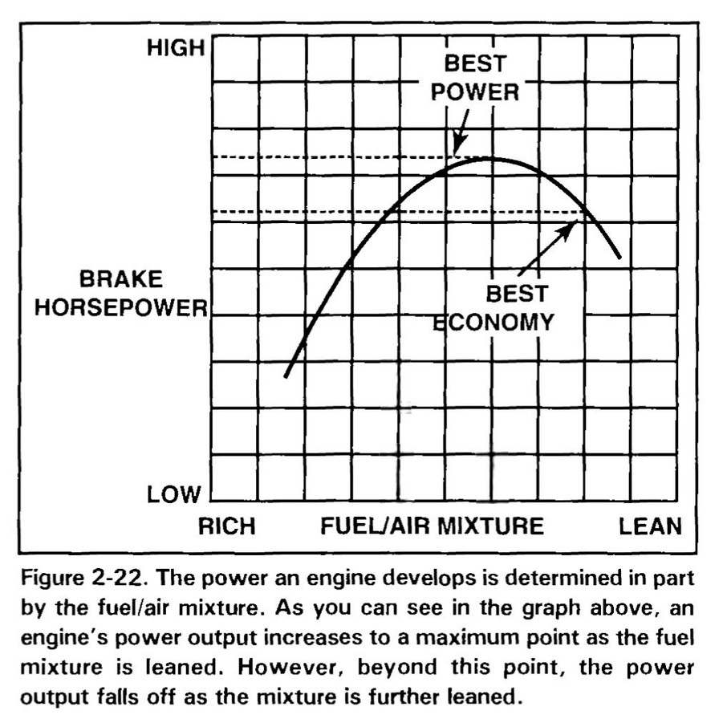
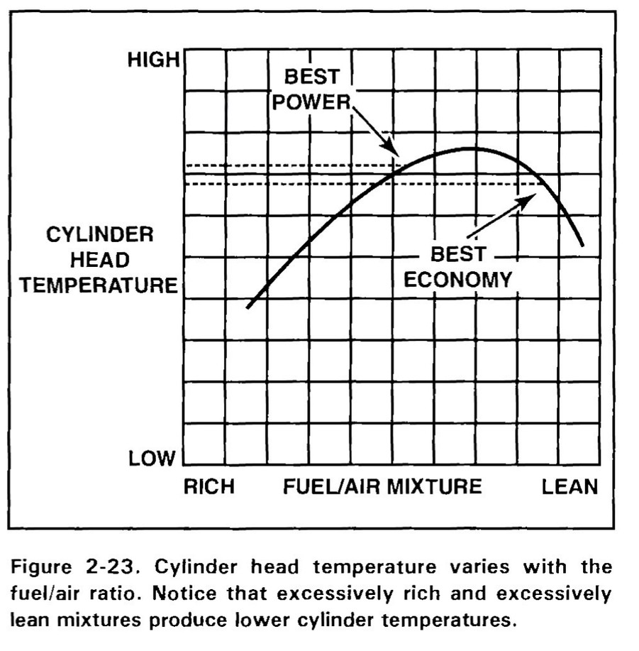
- A. 엔진오일·필터 교환Engine oil and filter change.
- B. 엔진 장착Engine installation.
- C. 오일라인 교체Replacement of oil lines.
- A. 점화순서상 다음 실린더Next in firing order to the one from which they were removed.
- B. 상하 교체Swapped bottom to top.
- C. 점화순서상 다음 실린더 + 상하 교체Next in firing order to the one from which they were removed and swapped bottom to top.
엔진 성능 요소: 압축·혼합비·흡기 매니폴드 심화 📙 Jeppesen 정독
Engine Performance: Compression, Fuel Mixture, and Induction Manifold왕복엔진은 수백 개의 부품으로 이루어져 있으며 엔진이 효율적으로 작동하려면 그 모두가 제대로 기능해야 합니다. 어떤 부품이나 계통이 완전히 또는 부분적으로 고장 나면 엔진 성능이 떨어집니다. 따라서 여러 엔진 계통 사이의 상호관계를 이해하고, 어떤 고장의 근본 원인이 겉보기에는 무관해 보이는 곳에 있을 수 있다는 점을 인식하는 것이 매우 중요합니다.A reciprocating engine consists of hundreds of parts that must all work properly for the engine to operate efficiently. If a component or system fails completely or in part, engine performance suffers. It is therefore critically important to understand the interrelationships between the various engine systems and to recognize that a given malfunction might have a root cause that seems unrelated.
엔진이 출력을 내려면 압축행정 동안 실린더의 모든 개구부가 밀폐되어야 합니다. 적절한 압축을 보장하는 요소는 세 가지입니다. 첫째, 피스톤 링의 상태가 양호해 피스톤과 실린더 벽 사이 누설을 막아야 합니다. 둘째, 흡기밸브와 배기밸브가 확실히 닫혀 밸브 포트를 통한 압축 손실을 막아야 합니다. 셋째, 엔진이 정상 속도로 작동할 때 밸브 타이밍이 정확해야 합니다. 실린더 압축이 낮아지면 언제든 엔진 성능이 떨어진다는 점을 기억해야 합니다.For an engine to produce power, all cylinder openings must be sealed during compression strokes. Three factors are critical to proper compression. First, piston rings must be in good condition to prevent leakage between piston and cylinder walls. Second, the intake and exhaust valves must close tightly to prevent compression loss through the valve ports. Third, valve timing must be correct when the engine is operating at its normal speed. Remember that any time cylinder compression is low, engine performance suffers.
최적 작동을 위해서는 각 실린더가 적절한 연료·공기 혼합비를 받아야 합니다. 혼합이 너무 농후하거나 너무 희박하면 제동마력이 감소합니다. 엔진을 처음 시동할 때는 시동을 돕기 위해 통상 full rich에 두지만, full rich 상태에서는 어떤 스로틀 설정에서도 정격 출력을 낼 수 없습니다. 따라서 이륙 전에 엔진이 최대 출력(best power)을 내는 지점까지 리닝하고, 순항 비행에서는 최적 경제성(best economy)을 얻도록 더 리닝합니다. 구체적인 리닝 절차는 비행교범을 따릅니다. 일부 연료계통에는 고도보상 애너로이드가 있어 혼합 조정을 모두 자동으로 하므로 혼합 조작기를 항상 쓰지는 않습니다.For best operation, each cylinder must receive the proper fuel/air mixture; if it is too rich or too lean, brake horsepower decreases. At start the mixture is typically full rich to promote starting, but an engine cannot produce its rated power at any throttle setting with a full rich mixture. Therefore, before takeoff the mixture is leaned to the point of maximum, or best, power, and in cruise it is normally leaned further for best economy. Specific leaning procedures should follow the aircraft flight manual. On some fuel systems an altitude compensating aneroid makes all mixture adjustments, so the mixture control is not always used.
실린더 내 연소 온도는 연료·공기 혼합비에 직접 대응합니다. 예를 들어 지나치게 농후한 혼합은 잉여 연료가 냉각 효과를 주기 때문에 차갑게 연소합니다. 혼합을 리닝할수록 사용 가능한 잉여 연료가 줄어 실린더 온도가 상승합니다. 그러나 혼합이 지나치게 희박해지면 연소 자체가 일어나지 못해 실린더 온도와 엔진 출력이 모두 떨어집니다. 즉 제동마력과 실린더 헤드 온도 모두 best power 부근에서 정점을 이루고 그보다 더 리닝하면 감소합니다.The temperature of combustion in a cylinder corresponds directly to the fuel/air ratio. An excessively rich mixture burns cool because the excess fuel provides a cooling effect. As the mixture is leaned, less excess fuel is available and cylinder temperatures increase. However, if the mixture becomes too lean, combustion cannot occur and cylinder temperatures and engine power drop off. Both brake horsepower and cylinder head temperature therefore peak near best power and fall away as the mixture is leaned further.
흡기 매니폴드는 공기를, 때로는 연료와 섞인 공기를 각 실린더에 분배합니다. 기화기식 엔진에서는 액체 연료가 기류 속으로 유입되어 기화된 뒤 공기와 함께 실린더로 전달됩니다. 기화되지 않은 연료는 흡기 매니폴드 벽에 달라붙어 실린더에 도달하는 연료량에 영향을 줍니다. 차가운 엔진을 시동할 때 매우 농후한 혼합이 필요한 이유가 여기에 있습니다. 차가운 엔진에서는 기류 속 연료 일부가 응축되어 매니폴드 벽에 붙기 때문입니다. 엔진이 워밍업되고 매니폴드를 지나는 기류가 증가하면 더 많은 연료가 기화되고 매니폴드에서 응축되는 양은 줄어듭니다.An engine's induction manifold distributes air, sometimes mixed with fuel, to the cylinders. On a carbureted engine, liquid fuel is introduced into the airstream, vaporized, and delivered to the cylinders with the air. Any nonvaporized fuel clings to the walls of the induction manifold, which affects how much fuel reaches the cylinders. This is why a very rich mixture is often required to start a cold engine: in a cold engine, some of the fuel in the airstream condenses and clings to the manifold walls. After the engine warms up and airflow increases through the manifold, more fuel is vaporized and less condenses.
흡기계통에 누설이 있으면 실린더의 혼합비가 영향을 받습니다. 누설이 있으면 여분의 공기가 유입되어 혼합이 지나치게 희박해지고, 심하면 정상 연소가 일어나지 못하는 수준까지 갈 수 있습니다. 이 현상은 낮은 rpm 설정에서 가장 뚜렷한데, 기류의 체적이 작아 누설로 들어온 추가 공기가 연료·공기 혼합비를 크게 희박하게 만들기 때문입니다.Any leak in an engine's induction system affects the mixture at the cylinders. Excess air is introduced, causing the mixture to become excessively lean, possibly to the extent that normal combustion cannot occur. This is most pronounced at low r.p.m. settings, because the volume of airflow is low and the additional air from a leak significantly leans the fuel/air mixture.
- A. 정상 운전 중During normal operation.
- B. 리프터가 수축되었을 때When the lifters become deflated.
- C. 카본/슬러지가 리프터에 끼어 운동을 제한할 때As a result of carbon and sludge becoming trapped in the lifter and restricting its motion.
- A. 시동·난기 중 밸브가 제대로 안 앉음The valves will not seat positively during start and engine warmup.
- B. 온도상승에 따른 간극 추가감소로 밸브기구 손상The further decrease in valve clearance that occurs as engine temperatures increase will cause damage to the valve-operating mechanism.
- C. 밸브가 규정보다 오래 닫혀 있음The valves will remain closed for longer periods than specified by the engine manufacturer.
- A. 흡·배기 모두 증가increase for both intake and exhaust valves.
- B. 흡·배기 모두 감소decrease for both intake and exhaust valves.
- C. 흡기 감소·배기 증가decrease for intake valves and increase for exhaust valves.
- A. 엔진이 뜨거울 때 조정Adjust valves when the engine is hot.
- B. 모든 배기밸브를 흡기밸브보다 먼저 조정Adjust all exhaust valves before intake valves.
- C. 캠베어링 간극을 제거하고 조정Eliminate cam bearing clearance when making valve adjustment.
점화시기, 점화 하네스, 스파크 플러그 심화 📙 Jeppesen 정독
Ignition Timing, Ignition Harness, and Spark Plugs점화계통은 마그네토 두 개, 점화 하네스, 스파크 플러그 세트로 구성됩니다. 마그네토는 연료·공기 혼합기를 점화할 전기 에너지를 만드는 장치로, 브레이커 포인트가 열릴 때 고전압을 방출합니다. 디스트리뷰터는 그 전기 임펄스를 정해진 점화순서에 따라 각 실린더로 배분합니다. 마그네토가 제대로 작동하려면 내부 타이밍이 정확해야 하고, 엔진에 대한 타이밍도 정확해야 합니다. 마그네토-투-엔진 타이밍은 1번 실린더가 압축행정에 있을 때 제작사가 정한 상사점 전 각도에서 디스트리뷰터가 점화하도록 설정합니다.An ignition system consists of two magnetos, an ignition harness, and a set of spark plugs. A magneto generates the electrical energy that ignites the fuel/air mixture, releasing high voltage when the breaker points open. A distributor routes the electrical impulses to the cylinders in the specific firing order. For a magneto to operate correctly it must have correct internal timing, and it must also be correctly timed to the engine. Magneto-to-engine timing is set so the distributor fires the number one cylinder on the compression stroke at the manufacturer-defined number of degrees before top dead center.
점화 하네스는 마그네토 디스트리뷰터에서 스파크 플러그로 임펄스를 전달하는 절연·차폐된 고전압 리드의 집합입니다. 각 리드는 자신의 스파크 플러그에서 끝납니다. 구조는 단순하지만 하네스는 점화계통의 핵심 부품이며 여러 부적합이 고장을 일으킬 수 있습니다. 예를 들어 리드 내부 전선의 절연이 파괴될 수 있고, 마모(chafing)로 고전압 에너지가 차폐를 통해 접지로 새어 나갈 수 있으며, 전선 단선이나 불량 접속으로 개방 회로가 생길 수 있습니다.The ignition harness is a set of insulated and shielded high-voltage leads that transmit impulses from the magneto distributor to the spark plugs, each lead terminating at its own plug. Although simple, the harness is a critical part of the ignition system and a number of discrepancies can cause failure. Insulation might break down on a wire inside a lead, chafing might permit high-voltage energy to leak through the shielding to ground, or an open circuit can result from broken wires or faulty connections.
개별 리드에 심각한 결함이 있으면 고전압 임펄스가 스파크 플러그에 도달하지 못합니다. 한 실린더에서 스파크 플러그 하나만 점화되면 상당한 출력 손실이 발생해 항공기 성능에 크게 영향을 줍니다. 같은 실린더의 두 플러그로 가는 리드가 모두 불량이면 그 실린더는 아예 출력을 내지 못합니다. 가장 흔하면서 검출하기 가장 어려운 점화 하네스 결함은 고전압 누설이며, 이를 점검하기 위해 전용 하네스 테스터를 사용합니다.Any serious defect in an individual lead prevents the high-voltage impulse from reaching the spark plug. When only one spark plug in a cylinder fires, a substantial loss of power occurs, greatly affecting aircraft performance. A bad lead to each spark plug in the same cylinder can prevent that cylinder from generating any power at all. The most common and most difficult to detect ignition harness defect is high-voltage leakage, and a special harness tester is used to check for it.
스파크 플러그는 구조와 작동이 단순하지만, 결함이 있거나 부적합한 플러그는 항공기 엔진의 여러 고장 원인이 됩니다. 따라서 해당 엔진에 대해 지정된 승인 플러그를 반드시 장착해야 합니다. 제작사가 특정 플러그를 선정할 때 사용하는 주된 기준은 열가(heat range)이며, 열가란 스파크 플러그 발화단의 작동 온도를 규정하는 값입니다.Spark plugs are simple in construction and operation, yet faulty or incorrect plugs can contribute to many aircraft engine malfunctions. Be sure to install the approved spark plugs specified for the particular engine. A primary factor used by a manufacturer to select a particular plug is its heat range, which defines the operating temperature of the firing end of the spark plug.
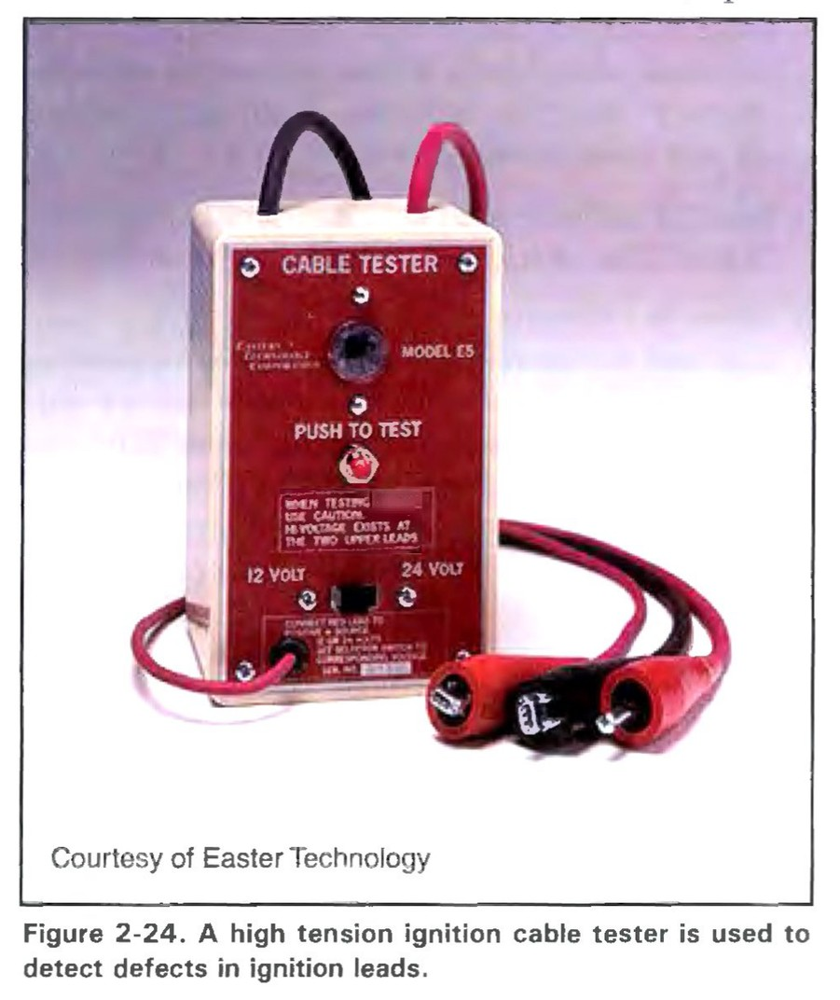
- A. 마그네토 내부 타이밍 점검.Check internal timing of magneto.
- B. 실린더 압축 점검(check cylinder compression).Check cylinder compression.
- C. 밸브 타이밍 점검.Check valve timing.
엔진 정비 기준과 지속감항성 지침(ICA) 심화 📙 Jeppesen 정독
Engine Maintenance Standards and Instructions for Continued Airworthiness안전한 항공기 운항에서 엔진 신뢰성은 무엇보다 중요합니다. 신뢰성을 유지하려면 제작사의 일정에 따라 적절한 엔진 검사와 정비를 수행해야 합니다. 항공기 엔진의 설계, 제작, 정비, 오버홀에 관한 감항기준은 14 CFR 33(Airworthiness Standards: Aircraft Engines)에 담겨 있습니다.Engine reliability is paramount for safe aircraft operations. To maintain reliability, perform the appropriate engine inspections and maintenance according to the manufacturer's schedule. Airworthiness standards related to the design, construction, maintenance, and overhaul of aircraft engines are contained in 14 CFR 33, Airworthiness Standards: Aircraft Engines.
이 규정의 Appendix A는 엔진 제작사가 자신이 생산하는 각 형식의 엔진에 대해 지속감항성 지침(instructions for continued airworthiness)을 제공하도록 요구합니다. 지속감항성 지침에는 정비교범, 운용 지침, 검사 항목과 주기, 오버홀 절차, 감항한계가 포함됩니다. 엔진 정비 작업과 오버홀 작업은 제작사가 정하며, 달력 시간과 누적 운전 시간을 기준으로 주기가 설정됩니다.Appendix A of that part requires engine manufacturers to provide instructions for continued airworthiness for each type of engine they produce. These instructions include maintenance manuals, operating instructions, inspection items and intervals, overhaul procedures, and airworthiness limitations. Engine maintenance tasks and overhaul operations are established by the manufacturer and are scheduled at intervals based on calendar time and accumulated hours of operation.
실린더 압축시험: 차압시험과 직접압축시험 심화 📙 Jeppesen 정독
Cylinder Compression Testing: Differential and Direct실린더 압축시험은 연소실 밀폐의 품질을 측정합니다. 압축이 좋은 실린더는 압축이 낮은 실린더보다 더 큰 출력을 냅니다. 실린더 누설의 가장 흔한 원인은 밸브 누설입니다. 부적절한 타이밍이나 밸브 간극이 누설을 일으킬 수 있고, 이물질이 밸브의 안착을 방해할 수도 있으며, 밸브 자체가 소손되었거나 변형되었을 수도 있습니다. 때로는 피스톤 링과 실린더 벽의 과도한 마모가 압축 저하의 원인이 됩니다.A cylinder compression test measures the quality of combustion chamber sealing. A cylinder with good compression provides more power than one with low compression. Leaking valves tend to be the most common cause of cylinder leaks. Improper timing or valve clearance can cause leaks, particles can keep valves from seating, and the valves themselves might be burned or warped. Sometimes low compression results from excessive wear of piston rings and cylinder walls.
압축시험 전에는 엔진을 운전해 피스톤 링, 실린더 벽 등이 작동온도에 가깝고 새로 윤활된 상태가 되게 합니다. 엔진 조립 후나 실린더 교환 후처럼 시험을 위해 엔진을 운전할 수 없는 경우에는, 시험 전에 실린더 배럴에 소량의 윤활유를 분무하고 엔진을 여러 번 회전시켜 피스톤 링 시일을 윤활합니다. 압축을 측정하는 방법은 차압시험과 직접압축시험 두 가지입니다.Before performing a compression test, run the engine so that the piston rings, cylinder walls, and other parts are near operating temperature and freshly lubricated. If a compression check follows engine build-up or cylinder replacement and running is not possible, spray a small amount of lubricating oil into the cylinder barrels before the test, then rotate the engine several times to lubricate the piston ring seals. Compression can be measured in two ways: differential or direct.
차압시험(differential pressure test)은 실린더 누설시험이라고도 하며 실린더의 공기 누설을 측정합니다. 테스터에는 게이지가 두 개 있는데 하나는 실린더로 들어가는 압력을, 다른 하나는 남아 있는 압력을 지시합니다. 베르누이 원리에 따라 실린더 누설과 관련된 공기 유량 증가가 압력 변화로 나타납니다. 이론상 완전한 실린더라면 누설이 없어 압력 강하가 발생하지 않습니다.A differential pressure test, also called a cylinder leakage test, measures air leakage in a cylinder. The tester has two gauges: one indicates pressure going into the cylinder, the other indicates how much pressure remains. Using Bernoulli's principle, increased air flow related to cylinder leakage indicates a change of pressure. A theoretical perfect cylinder would not leak, so no pressure drop would occur.
차압시험은 반드시 제작사 지침을 따릅니다. 프로펠러가 고정되어 있지 않은 상태에서 실린더에 압축공기를 채우면 프로펠러가 회전할 수 있으므로, 안전을 위해 인쇄된 주의사항과 상식적인 예방조치를 모두 지킵니다. 이 작업은 통상 두 명의 정비사가 함께 수행해야 합니다. 절차는 다음과 같습니다. 1) 점화를 끄고 키를 뽑습니다. 스로틀을 닫힘, 혼합을 아이들 컷오프, 연료 선택밸브를 off로 둡니다. 2) 각 실린더에서 접근이 가장 쉬운 스파크 플러그를 제거하고 플러그 구멍에 압축시험 어댑터를 장착합니다.Always follow the manufacturer's instructions for a differential compression test. If the propeller is not secured, filling a cylinder with compressed air may cause it to rotate, so follow all printed and common-sense precautions. This procedure should normally be conducted by two technicians. The steps are: 1) turn the ignition off and remove the key; move the throttle to closed, the mixture to idle cutoff, and the fuel selector to off; 2) remove the most accessible spark plug from each cylinder and install a compression tester adapter in the plug hole.
3) 프로펠러를 손으로 돌려 엔진을 정상 회전방향으로 회전시켜, 시험하려는 실린더의 피스톤이 압축행정의 상사점에 오게 합니다. 상사점을 지나쳤다면 프로펠러를 최소 180도 되돌린 다음 다시 정상 회전방향으로 돌립니다. 이렇게 하면 밸브 작동기구의 백래시가 제거되고 피스톤 링이 하부 링 랜드에 안착된 상태를 유지합니다. 4) 테스터의 차단밸브가 닫혀 있는지 확인하고, 100~150 psi로 조절된 압축공기원에 테스터를 연결한 뒤 테스터 레귤레이터를 80 psi로 조정합니다.3) Turning the propeller by hand, rotate the engine in its normal direction of travel until the piston in the cylinder being tested reaches TDC on the compression stroke. If you pass TDC, reverse the propeller at least 180 degrees, then resume turning in the normal direction; this eliminates backlash in the valve operating mechanism and keeps the piston rings seated on the lower ring lands. 4) Ensure the shutoff valve on the tester is closed, connect the tester to a compressed air source regulated between 100 and 150 p.s.i., and adjust the tester's regulator to 80 p.s.i.
5) 테스터의 차단밸브가 닫힌 것을 다시 확인한 뒤 플러그 구멍의 어댑터에 테스터를 연결합니다. 프로펠러 경로에 사람과 물건이 없는지 확인하고 블레이드를 지지해 회전을 막습니다. 실린더에서 압력이 해제될 때까지 프로펠러를 놓지 않습니다. 그다음 테스터의 차단밸브를 엽니다. 6) 조절압력 80 psi 상태에서 실린더 압력 게이지를 읽습니다. 해당 엔진의 최소 허용치보다 낮게 지시되면 프로펠러를 정상 방향으로 돌려 피스톤 링을 홈에 안착시킵니다. 피스톤에 공기압이 걸린 상태에서 프로펠러를 움직일 때는 반드시 프로펠러를 단단히 고정해야 합니다. 각 실린더의 차압을 점검하고 값을 기록합니다.5) Verify the tester's shutoff valve is closed, then connect the tester to the adapter in the spark plug hole. Ensure the propeller path is clear of all people and objects and support the blade to prevent rotation; do not let go of the propeller until pressure is relieved from the cylinder. Then open the shutoff valve. 6) With the regulated pressure at 80 p.s.i., read the cylinder pressure gauge. If it indicates less than the minimum allowed for the engine, rotate the propeller in its normal direction to seat the piston rings in their grooves. Be careful: whenever you move the propeller while air pressure is applied to the piston, ensure the propeller is tightly secured. Check the differential pressure of each cylinder and record the readings.
실린더의 압축이 낮게 나오면 시동기로 엔진을 돌리거나 이륙출력까지 엔진을 운전한 뒤 그 실린더를 다시 점검합니다. 압축을 점검하는 동안 주의 깊게 들으며 누설 원인을 찾습니다. 균열이 없는 실린더라고 가정하면 공기가 샐 수 있는 곳은 세 군데입니다. 흡기밸브, 배기밸브, 피스톤 링입니다. 배기밸브 누설은 통상 배기 스택에서 나는 쉭 소리나 휘파람 소리로 확인됩니다. 흡기밸브를 지나는 누설은 대개 흡기계통을 통해 들립니다. 크랭크케이스 브리더나 오일 필러 캡에서 나는 쉭 소리는 피스톤 링을 지나는 누설을 뜻합니다.If a cylinder indicates low compression, rotate the engine with the starter or operate the engine to takeoff power before rechecking that cylinder. While checking compression, listen carefully and try to identify sources of leakage. Assuming a cylinder without cracks, air can leak in three areas: past the intake valve, past the exhaust valve, and past the piston rings. Exhaust valve leakage is typically identified by a hissing or whistling at the exhaust stack. Air leaking past the intake valve can usually be heard through the induction system. A hissing sound at the crankcase breather or oil filler cap indicates air leaking past the piston rings.
직접압축시험(direct compression test)은 실린더 안의 실제 압력을 측정합니다. 실린더 압축의 품질은 정확하게 보여주지만, 실린더 안의 어느 부품이 결함인지 가려내는 데에는 덜 효과적입니다. 대부분의 엔진 정비교범에는 직접압축시험 절차가 실려 있지 않으며, 일반적인 지침은 다음과 같습니다. 1) 점화를 끄고 키를 뽑은 뒤 스로틀 닫힘, 혼합 아이들 컷오프, 연료 선택밸브 off로 둡니다. 2) 각 실린더에서 접근이 가장 쉬운 스파크 플러그를 제거합니다. 3) 프로펠러 주변에 사람과 물건이 없는지 확인하고 시동기로 엔진을 돌려 실린더에 쌓인 오일과 느슨한 카본 입자를 배출시킵니다.A direct compression test measures the actual pressures within a cylinder. While it gives an accurate picture of the quality of cylinder compression, it is less effective for discerning defective components within a cylinder. Most engine maintenance manuals do not contain instructions for a direct compression test; general guidelines are: 1) turn the ignition off and remove the key, move the throttle to closed, the mixture to idle cutoff, and the fuel selector to off; 2) remove the most accessible spark plug from each cylinder; 3) ensure the area around the propeller is clear of people and objects and rotate the engine with the starter to clear the cylinders of accumulated oil and loose carbon particles.
4) 각 실린더에 테스터를 장착합니다. 테스터가 하나뿐이면 실린더를 하나씩 점검합니다. 5) 스로틀을 연 위치로 옮기고, 엔진을 회전시키기 위해 항공기를 외부 전원에 연결합니다. 약한 배터리는 엔진을 느리게 돌려 정상보다 낮은 압축값을 보이기 때문입니다. 시동기로 최소 세 바퀴를 완전히 돌린 뒤 압축값을 기록합니다. 6) 다른 실린더보다 현저히 낮은 값을 보인 실린더는 정확성을 확인하기 위해 재점검합니다. 다른 실린더보다 약 15 psi 낮은 값은 수리해야 할 실린더 누설을 뜻합니다. 낮은 값이 시험장비 결함 때문이 아님을 확실히 하려면 정확도가 검증된 장비로 압축 점검을 반복합니다.4) Install a tester in each cylinder; if only one tester is available, check each cylinder individually. 5) Move the throttle to the open position and connect the aircraft to external power for rotating the engine, because a weak battery turns the engine slowly and shows lower than expected readings. Use the starter to rotate the engine at least three complete revolutions, then record the compression readings. 6) Recheck any cylinder that registers a value significantly lower than the others to verify accuracy. A reading approximately 15 p.s.i. lower than the others indicates a cylinder leak that must be repaired. To be sure the low reading is not the result of faulty test equipment, repeat the check with a unit known to be accurate.
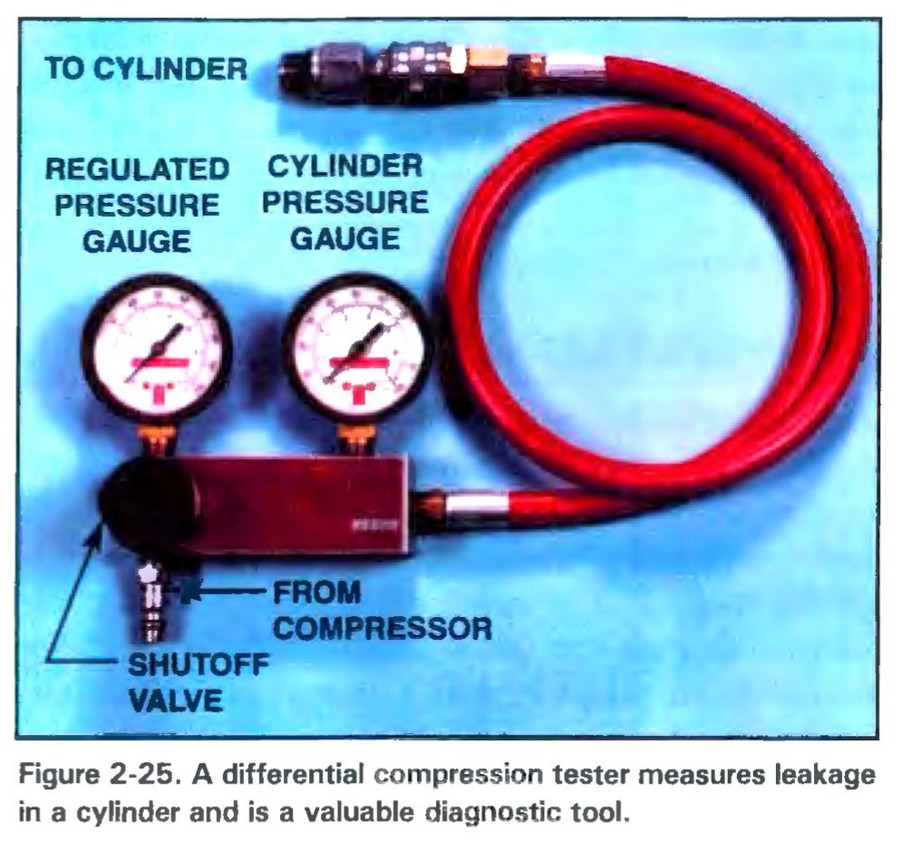
- A. 용제 탈지제가 훨씬 효과적solvent degreasers are much more effective.
- B. 물혼합 탈지제 잔류물이 오버홀 엔진 오일오염 유발water-mixed degreaser residues may cause engine oil contamination in the overhauled engine.
- C. 물혼합 탈지제는 부식 유발water-mixed degreasers cause corrosion.
- A. 링 외경과 실린더 내경을 정밀 측정·매칭By accurately measuring and matching the outside diameter of the rings with the inside diameter of the cylinders.
- B. 제조사 지정 링 사용By using rings specified by the engine manufacturer.
- C. 링을 실린더에 넣고 필러게이지로 엔드갭 측정By placing the rings in the cylinder and measuring the end gap with a feeler gauge.
- A. 1만 참only 1 is true.
- B. 1, 2 모두 참both 1 and 2 are true.
- C. 1, 2 모두 거짓neither 1 nor 2 is true.
- A. 고착된 흡기밸브sticking intake valves.
- B. 과도하게 희박한 혼합기an excessively lean mixture.
- C. 과도하게 농후한 혼합기an excessively rich mixture.
- A. 균열난 배기스택a cracked exhaust stack.
- B. 배기밸브 블로바이exhaust valve blow-by.
- C. 마모된 피스톤링worn piston rings.
- A. 거의 영향 없음Little or no effect.
- B. 링이 안 앉음The rings will not be seated.
- C. 마모/불량 링 지시A worn or defective ring(s) indication.
- A. 피스톤이 압축행정The piston was on compression stroke.
- B. 피스톤이 배기행정The piston was on exhaust stroke.
- C. 피스톤이 상사점을 약간 지남The piston was positioned past top dead center.
- A. 정상 지시A normal indication.
- B. 배기밸브 블로바이Exhaust valve blow-by.
- C. 정상 지시(실린더3은 동력행정 하부, 배기밸브 열림)A damaged exhaust valve or insufficient exhaust valve clearance.
- A. 배기밸브 누설Exhaust valve leakage.
- B. 흡기밸브 누설Intake valve leakage.
- C. 피스톤링 누설Piston ring leakage.
- A. 하사점Bottom dead center.
- B. 상사점Top dead center.
- C. 상·하사점 중간Halfway between top and bottom dead center.
- A. 밸브오버랩 증가increases valve overlap.
- B. 밸브 개방시간 증가increases valve opening time.
- C. 밸브오버랩 감소decreases valve overlap.
- A. 290°290°.
- B. 245°245°.
- C. 25°25°.
- A. 연료 유량 점검을 위한 전출력 엔진 런.Perform a full power engine run to check fuel flow.
- B. 연료 노즐 재교정.Recalibrate the fuel nozzles.
- C. 엔진 리트림(retrim).Retrim the engine.
- A. 냉각 차폐(cooling shield) 결함.Faulty cooling shield.
- B. 과온도(overtemperature) 상태.Overtemperature condition.
- C. 과회전(overspeed) 상태.Overspeed condition.
밸브 간극 조정의 영향 심화 📙 Jeppesen 정독
Valve Adjustment and Its Effects엔진이 최대 정격 출력을 내려면 밸브가 제대로 열리고 닫히며 확실히 밀폐되어야 하고, 밸브 간극(valve clearance)은 밸브가 제대로 작동하게 하는 핵심 요소입니다. 예를 들어 밸브 간극이 과도하면 밸브가 덜 열리거나 열려 있어야 할 만큼 오래 열려 있지 못해 밸브 지속시간과 밸브 오버랩 기간이 줄어듭니다. 반대로 밸브 간극이 규정보다 작으면 밸브 오버랩 기간이 길어집니다.For an engine to produce maximum rated power, the valves must open and close properly and seal tightly, and valve clearance is the critical factor in making sure they operate properly. When valve clearance is excessive, the valves do not open as wide or remain open as long as they should, which reduces valve duration and the valve overlap period. When valve clearance is less than specified, the period of valve overlap is lengthened.
밸브 간극이 잘못되어 있을 때 모든 실린더의 간극이 같은 방향으로 틀어져 있는 경우는 드뭅니다. 보통 어떤 실린더는 간극이 너무 크고 다른 실린더는 너무 작습니다. 그 결과 실린더 사이에 밸브 오버랩 편차가 생기고, 이렇게 되면 모든 실린더에 대해 아이들 연료 혼합비를 맞추는 것이 불가능해져 실린더마다 서로 다른 출력을 내게 됩니다. 밸브 간극 차이가 0.005인치 정도로 작아도 실린더 간 혼합 분배에 눈에 띄는 영향을 줍니다. 밸브 간극의 편차는 체적효율에도 영향을 줍니다.When valve clearances are wrong, it is unlikely that all clearances are wrong in the same direction. Typically there is too much clearance in some cylinders and too little in others, which produces a variation in valve overlap between cylinders. When this happens it becomes impossible to set the idle fuel mixture for all cylinders, so individual cylinders produce varying amounts of power. A difference in valve clearance as little as 0.005 inch has a noticeable effect on mixture distribution between cylinders, and variations also affect volumetric efficiency.
흡기밸브 간극이 과도하면 밸브가 늦게 열리고 일찍 닫혀 실린더가 연료와 공기를 완전히 채우지 못합니다. 특히 높은 출력 설정에서 출력이 감소합니다. 배기밸브 간극이 부적절해도 성능에 영향을 줍니다. 배기밸브 간극이 과도하면 배기 이벤트가 짧아져 소기(scavenging)가 나빠지고, 늦게 열리기 때문에 고온의 배기가스가 규정된 배출 시점보다 오래 실린더에 머물러 실린더 과열로 이어질 수 있습니다.Excessive intake valve clearance results in the valve opening late and closing early, which prevents the cylinder from admitting a full charge of fuel and air; power is reduced, particularly at high power settings. Improper exhaust valve clearance also affects performance: excessive exhaust valve clearance shortens the exhaust event and causes poor scavenging, and the late opening can lead to cylinder overheating because hot exhaust gases are held in the cylinder beyond the time specified for their release.
반대로 흡기밸브 간극이 부족하면 정반대의 결과가 나옵니다. 흡기밸브가 일찍 열리고 늦게 닫히면 저속에서 역화가 일어나기 쉽습니다. 배기밸브 간극이 부족하면 일찍 열려 파워 이벤트가 짧아지고, 유용한 팽창이 피스톤에 모두 작용하기 전에 실린더 압력이 방출됩니다. 또한 늦게 닫히기 때문에 배기밸브가 흡입행정의 상당 부분 동안 열린 채로 남아 연료·공기 혼합기의 일부가 배기 포트로 손실될 수 있습니다.Insufficient intake valve clearance has the opposite effect. When an intake valve opens early and closes late, the likely result is backfiring at low speeds. When exhaust valve clearance is insufficient, the early opening shortens the power event and cylinder pressure is released before all the useful expansion has worked on the piston. The late closing also causes the exhaust valve to remain open for a larger portion of the intake stroke, so a portion of the fuel/air mixture may be lost through the exhaust port.
밸브가 제대로 안착하려면 밸브 상태가 양호해야 하고 로커암이 밸브 끝을 유의미한 압력으로 누르고 있지 않아야 합니다. 엔진 부품의 팽창이 균일하다면 밸브 안착 문제는 쉽게 다룰 수 있겠지만, 밸브 작동계통의 간극은 엔진이 차가울 때 매우 작고 정상 온도로 작동할 때 커집니다. 이 차이는 여러 금속의 팽창 특성과 작동 중 엔진이 겪는 온도 범위 때문에 생깁니다.For a valve to seat, the valve must be in good condition with no significant pressure exerted against the end of the valve by the rocker arm. If the expansion of engine parts were uniform, valve seating would be easy to address, but clearance in a valve actuating system is very small when the engine is cold and increases as the engine operates at normal temperatures. The disparity is caused by differences in the expansion properties of the various metals and the range of temperatures in an operating engine.
밸브 간극은 온도에 직접 비례해 변하므로, 극저온에서는 간극이 부족해져 밸브가 열린 채로 유지될 수 있습니다. 이 때문에 한랭 시동이 어렵거나 불가능해질 수 있는데, 실린더가 연료·공기 혼합기를 연소실로 끌어들이지 못하기 때문입니다. 게다가 이런 엔진이 시동되더라도 안착되지 않은 밸브 때문에 압축행정 중 혼합기 일부가 밸브를 지나 새어 나갑니다.Valve clearances change directly with temperature, so in extremely cold temperatures insufficient clearance can hold a valve open. Cold weather starting might therefore be difficult, if not impossible, because the cylinders are unable to pull the fuel/air mixture into the combustion chamber. Furthermore, if such an engine were started, unseated valves would allow some of the fuel/air mixture to leak past the valves on the compression stroke.
정확한 밸브 간극 조정은 의도된 밸브 안착 속도(valve seating velocity)도 결정합니다. 밸브 간극이 과도하면 안착 속도가 높아져 두드림과 스템 늘어남이 발생하는데, 이는 통상 밸브 파손에 선행하는 상태입니다. 엔진 제작사는 엔진별로 밸브 검사 주기를 지정합니다. 그 외에도 러프한 엔진 작동, 역화, 압축 손실, 시동 곤란 등의 불만이나 징후가 있을 때마다 밸브 기구를 점검하고 조정해야 합니다. 모든 경우에 제작사가 기술한 정확한 절차를 따라야 하는데, 엔진마다 고유한 요인이 있을 수 있기 때문입니다.Accurate valve adjustment also establishes the intended valve seating velocity. If clearances are excessive, seating velocity is high, resulting in pounding and stem stretching, conditions that commonly precede valve failure. The engine manufacturer specifies the valve inspection period for each engine. In addition, inspect and adjust the valve mechanism whenever there is a complaint or evidence of rough engine operation, backfiring, loss of compression, or hard starting. In all cases follow the exact procedure described by the engine manufacturer, because unique factors might be involved.
- A. 정상 작동·긴 수명normal operation and long life.
- B. 과대 밸브간극excessive valve clearance.
- C. 조기점화·밸브 소손preignition and burned valves.
- A. 로커암 조정rocker arm adjustment.
- B. 로커암 교체rocker arm replacement.
- C. 푸시로드 교체push rod replacement.
- A. 베어링·기타 부품의 오일 기아(starvation)Oil starvation of bearings and other parts.
- B. 과도한 엔진 오일압력Excessive engine oil pressure.
- C. 실린더 열충격Thermal shock of cylinders.
- A. 밸브가 일찍 열리고 일찍 닫힘The valves will open early and close early.
- B. 늦게 열리고 일찍 닫힘The valves will open late and close early.
- C. 일찍 열리고 늦게 닫힘The valves will open early and close late.
- A. 밸브오버랩 기간 감소Reduced valve overlap period.
- B. 흡·배기 밸브가 일찍 열리고 늦게 닫힘Intake and exhaust valves will open early and close late.
- C. 배기 행정 단축으로 출력 증가A power increase by shortening the exhaust event.
- A. 늦게 열고 일찍 닫음late and closing early.
- B. 일찍 열고 늦게 닫음early and closing late.
- C. 늦게 열고 늦게 닫음late and closing late.
유압 폐쇄(Hydraulic Lock) 심화 📙 Jeppesen 정독
Hydraulic Lock유압 폐쇄는 성형(radial) 엔진에서 오일이나 액체 연료가 하부 실린더 또는 하부 흡기 파이프에 모여 고이는 현상입니다. 유체는 압축되지 않기 때문에 유압 폐쇄 상태에서 엔진을 시동하려고 하면 엔진에 심각한 손상을 줄 수 있습니다.Hydraulic lock is a condition that can develop in a radial engine where oil or liquid fuel accumulates, or pools, in the lower cylinders or lower intake pipes. Because fluids cannot be compressed, attempting to start an engine with hydraulic lock can cause severe damage to the engine.
직전 30분 동안 운전하지 않은 성형엔진을 시동하려 할 때는 반드시 유압 폐쇄 여부를 확인합니다. 확인 방법은 점화 스위치가 꺼져 있는지 확인한 뒤 프로펠러를 손으로 정상 회전방향으로 최소 두 바퀴 돌려 보는 것입니다. 프로펠러를 돌리는 데 비정상적으로 큰 힘이 필요하면 유압 폐쇄가 있다는 뜻입니다.Before attempting to start any radial engine that has not run in the previous 30 minutes, check for hydraulic lock. Make sure the ignition switches are off, then rotate the propeller by hand at least two revolutions in the normal direction. Hydraulic lock is indicated by an abnormal amount of effort required to rotate the propeller.
유압 폐쇄를 제거하려면 하부 실린더에서 스파크 플러그 하나를 제거하고 프로펠러를 회전방향으로 돌려 피스톤이 액체를 밀어내게 합니다. 프로펠러를 반대 방향으로 돌려 유압 폐쇄를 해소하려 해서는 절대 안 됩니다. 그렇게 하면 액체가 실린더에서 흡기 파이프로 옮겨갈 뿐이며, 다음 시동에서 유압 폐쇄가 생길 가능성만 높아집니다.To eliminate hydraulic lock, remove one of the spark plugs from the lower cylinders and rotate the propeller in the direction of rotation, allowing the piston to expel any liquids. Never attempt to clear hydraulic lock by rotating the propeller in the opposite direction; that would only transfer liquid from the cylinder to an intake pipe and increases the possibility of hydraulic lock on a subsequent start.
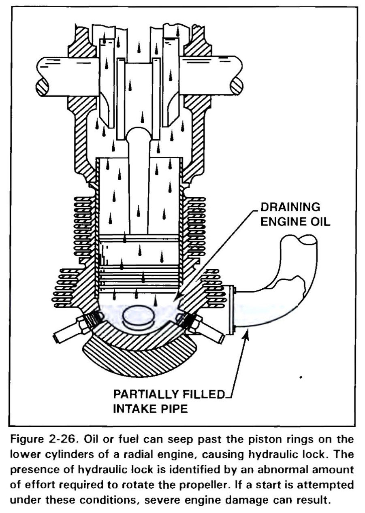
- A. 프롭을 정상 반대방향으로 3~4회 손으로 돌려 액체록 점검turn the propeller by hand three or four revolutions in the opposite direction of normal rotation to check for liquid lock.
- B. 스타터 작동 전 점화스위치 ONturn the ignition switch on before energizing the starter.
- C. 프롭을 정상 방향으로 3~4회 손으로 돌려 액체록 점검turn the propeller by hand three to four revolutions in the normal direction of rotation to check for liquid lock.
감항성 검사 기준과 문서: TCDS·항공기 사양·STC 심화 📙 Jeppesen 정독
Airworthiness Inspection Criteria: TCDS, Aircraft Specifications, and STC모든 감항성 검사는 부품이 비행에 안전하고 인증의 규제 요건에 부합하는지 판단합니다. 검사 데이터는 연방 항공청(FAA)과 부품 제조사가 제공합니다. 검사의 범위와 세부는 항공기가 어떻게 운용되는지(적용 규정), 항공기·동력장치 종류, 검사 종류, 제조사 요건에 따라 달라집니다. FAA는 다양한 문서를 발행하는데, 일부는 강제적 규제 정보를 제공하고 다른 일부는 검사 인원을 돕는 자문 성격입니다. 규제 문서에는 형식증명 자료집(TCDS), 항공기 사양(Aircraft Specifications), 보충형식증명(STC), 감항성 지침(AD)이 포함되고, 비규제 정보에는 자문 회람(AC)이 포함됩니다.All airworthiness inspections determine whether a part is safe for flight and conforms to certification's regulatory requirements. Data is provided by the FAA and the component manufacturer, and the scope and detail vary with how the aircraft is operated (applicable regulations), the aircraft and powerplant type, the inspection type, and the manufacturer's requirements. The FAA publishes various documents—some mandatory regulatory, others advisory to help inspectors: regulatory documentation includes Type Certificate Data Sheets (TCDS), Aircraft Specifications, Supplemental Type Certificates (STC), and Airworthiness Directives (AD), while nonregulatory information includes Advisory Circulars (AC).
제조사는 엔진·프로펠러 감항성 검사 수행의 최상의 정보원입니다. 대부분의 경우 FAA는 대체 계획이 승인되지 않는 한 정비 활동에 제조사 정보를 쓰도록 지시합니다. FAA가 검토·승인하는 제조사 정보는 제한적이지만, 일반적으로 제조사 정보는 검사·정비에 허용 가능한 데이터로 간주됩니다. 제조사 정보를 이용할 수 없으면 FAA가 지정한 표준 검사·정비 기준을 씁니다. FAA가 동력장치나 프로펠러의 설계를 승인·검증하면 제품의 구성과 특징을 정의하는 도면·사양을 나열한 형식증명 자료집(TCDS)을 발행합니다. 부품의 감항성은 TCDS 준수로 판단됩니다. TCDS는 FAA 승인 데이터입니다. TCDS에서 벗어나는 항공기 부품의 어떤 변경도 대변경으로 간주되어 FAA 대수리·대변경 양식(Form 337)에 문서화해야 합니다. 이 양식은 항공기의 영구 정비 기록과 함께 보관되고 감항성 검사 중 확인돼야 합니다.The manufacturer is the best source for engine and propeller airworthiness inspections; in most cases the FAA directs that manufacturers' information be used unless an alternate plan is approved. Although the FAA reviews and approves only a limited amount of it, manufacturers' information is generally considered acceptable data for inspection and maintenance, and if unavailable, use the FAA's standard criteria. After the FAA approves and verifies a powerplant or propeller design, it publishes a TCDS listing the drawings and specifications defining the product's configuration and features, and airworthiness is determined by conformity to the TCDS. The TCDS is FAA-approved data, and any modification deviating from it is a major alteration that must be documented on an FAA Major Repair or Alteration Form 337, retained with the aircraft's permanent records and accounted for during inspections.
TCDS는 기체, 동력장치, 프로펠러 제조사에 부여됩니다. 기체 TCDS는 항공기에 설치 가능한 허용 동력장치·프로펠러 조합을 정의하지만, 동력장치나 프로펠러의 특정 형식 설계 요건은 각자의 TCDS에 담깁니다. 엔진이나 프로펠러가 특정 기체에 설치 가능한지 판단하려면 기체 TCDS를 참조해야 합니다. 또한 기체 TCDS는 엔진·프로펠러 제한, 필수 플래카드, 연료·엔진오일의 종류·용량 같은 설치에 관한 다른 중요 정보를 제공합니다. 1958년 이전 미국 항공기는 민간 항공 규정(CARS)으로 인증됐습니다. 기체·동력장치·프로펠러에 관한 인증 정보는 항공기 사양(Aircraft Specifications)에 발행됩니다. 이 문서는 장비 목록이 추가된 점을 제외하면 TCDS와 유사합니다.TCDSs are granted to airframe, powerplant, and propeller manufacturers: the airframe TCDS defines allowable powerplant and propeller combinations, but the specific type-design requirements of a powerplant or propeller are in their respective TCDS, so to determine if an engine or propeller can be installed on an airframe, consult the airframe TCDS, which also provides engine and propeller limitations, required placards, and fuel and oil types and quantities. Before 1958, U.S. aircraft were certificated under the Civil Air Regulations (CARS), with certification information for airframe, powerplant, and propeller published in Aircraft Specifications—similar to a TCDS but with an added equipment list.
단일 항공기 형식의 항공기 사양 장비 목록은 종종 60~70페이지의 정보를 요합니다. 이 정보를 현행으로 유지하기 어려워, 현행 규정(14 CFR 23)으로 인증된 항공기·장비는 TCDS에 장비 목록을 포함하지 않습니다. 대신 이 정보는 인도 시 항공기 소유자에게 제공되고 보통 항공기 비행 매뉴얼에 포함됩니다. 감항성 검사 중에는 장비 목록을 찾아 현행이고 항공기 영구 기록에 포함됐는지 확인해야 합니다. FAA는 특정 안전·설계 요건이 충족되면 제품이 원래 형식 설계에서 변경되는 것을 허용합니다. 보충형식증명(STC)은 추가 엔지니어링이나 비행 시험 요건 없이 항공기가 사용 승인되도록 허용하는 방법·기법을 기술합니다. STC는 14 CFR 21 서브파트 E에 따라 발행됩니다. STC로 승인된 동력장치·프로펠러 변경의 예로는 엔진 마력 증가나 프로펠러 피치 한계 변경이 있습니다. 기체 STC 변경도 엔진이나 프로펠러에 영향을 줄 수 있는데, 예로 항공기를 자동차 연료로 작동하도록 변경하거나 기체 TCDS에 원래 승인된 것과 다른 모델 엔진을 설치하는 것이 있습니다. STC 취득 후에는 지침을 정확히 따르고 모든 변경을 Form 337에 문서화해야 하며, 사용 승인 전에 STC의 모든 조건이 충족됐는지 항공기를 검사해야 합니다. 이 검사는 FAA 감항성 검사관, 검사 인가(IA)를 보유한 항공정비사, 적절히 인증된 수리소, 또는 다른 승인 주체가 완료할 수 있습니다.An Aircraft Specification's equipment list for a single type often needs 60 to 70 pages; because this proved hard to keep current, aircraft and equipment certificated under current regulations (14 CFR 23) don't include an equipment list with the TCDS—instead it's given to the owner at delivery and normally included in the flight manual, and during an inspection you must locate it and verify it's current and in the permanent records. The FAA allows a product to be altered from its original type design when specific safety and design requirements are met: a Supplemental Type Certificate (STC) describes methods and techniques permitting return to service without additional engineering or flight test, issued under 14 CFR 21 Subpart E—examples include increased engine horsepower or changed propeller pitch limits. Airframe STC alterations can also affect the engine or propeller, such as altering to automotive fuel or installing a different engine model than in the airframe TCDS. After obtaining an STC, follow the instructions exactly, document changes on Form 337, and before return to service inspect the aircraft to ensure all STC conditions are met—completed by an FAA inspector, a technician with an Inspection Authorization (IA), a certificated repair station, or another approved entity.
- A. 기체·동력장치 자격을 가진 정비사.Certificated mechanic with airframe and powerplant ratings.
- B. 동력장치 자격을 가진 정비사.Certificated mechanic with a powerplant rating.
- C. 검사 인가(IA)를 보유한 정비사.Certificated mechanic with inspection authorization.
- A. 현행 제작사 정비 지침.Current manufacturer's maintenance instructions.
- B. 형식증명자료집(TCDS).Type Certificate Data Sheet.
- C. AC 43.13-1A.AC 43.13-1A, Acceptable Methods, Techniques, and Practices Aircraft Inspection and Repair.
- A. 엔진 형식증명자료집(TCDS).Engine Type Certificate Data Sheets.
- B. 보충형식증명(STC).Supplemental Type Certificates.
- C. FAA 승인 시 제작사의 정비 지침.Manufacturer's maintenance instructions when FAA approved.
감항성 지침(AD)·자문 회람(AC)과 정비·오버홀 매뉴얼 심화 📙 Jeppesen 정독
Airworthiness Directives, Advisory Circulars, and Maintenance Manuals특정 모델을 검토하는 것 외에 모델 시리즈에 대한 AD도 검토해야 합니다. 예를 들어 Textron-Lycoming TIO-360 A1A 엔진을 검사할 때 TIO-360 A1A의 특정 AD와 TIO-360 시리즈도 함께 확인합니다. 감항성 검사 중 항공정비사는 각 AD가 그 본문에 따라 준수됐는지 확인해야 합니다. 이 작업은 항공기 정비 기록의 각 AD 기록 항목을 철저히 검토해야 하고, 종종 엔진이나 동력장치를 살펴 검증해야 합니다. AD가 엔진·프로펠러의 메이크·모델에 적용되더라도 부품이 면제될 수 있습니다. 부품이 면제되면 그 이유를 간략히 설명해 AD 기록에 여전히 기재해야 합니다. 많은 AD는 항공기나 부품이 AD에서 면제된다는 판단을 기록하는 정비 기록 항목도 요구합니다. 이 정비 기재가 없으면 시정 조치가 필요 없더라도 AD가 준수되지 않은 것입니다.Besides the specific model, review ADs for the model series—for example, inspecting a Textron-Lycoming TIO-360 A1A engine, check both the TIO-360 A1A ADs and the TIO-360 series. During an inspection, the technician must verify each AD has been complied with per its text, requiring a thorough review of each AD record entry and often verification by examining the engine or powerplant. Although an AD may apply to an engine or propeller make and model, a component may be exempt, and when exempt it must still be noted in the AD record with a brief reason; many ADs also require a maintenance record entry noting any exemption determination, and without it the AD hasn't been complied with even if no corrective action is required.
기체·동력장치·프로펠러의 AD 리서치는 이들 부품의 메이크·모델·시리얼 번호가 데이터 플레이트와 정비 기록에 있으므로 간단합니다. 부속품(appliance)은 적용 AD를 판단하기 위해 추가 주의와 리서치가 종종 필요합니다. 예를 들어 마그네토 시리즈에 관한 AD가 발행됐을 수 있는데 엔진 AD의 단순 검색으로는 이 정보가 드러나지 않을 수 있습니다. 모든 부속품을 식별하는 데 도움이 되도록 항공기 장비 목록을 쓰거나 모든 부속품의 메이크·모델·시리얼 번호로 별도 기록을 만듭니다. 설치된 부품의 정비 릴리스 태그도 리서치 중 유익한 정보를 제공할 수 있습니다. 극단적인 경우 준수를 판단하기 위해 항공기 일부를 분해해야 할 수도 있습니다. 향후 준수 검사에서 다른 사람이 작업을 반복하지 않도록, 부품이 면제되더라도 수행한 작업을 완전히 문서화합니다. AD 준수 검사 시 모든 적용 AD를 시간순으로 나열하는 양식을 쓰는데, 최소한 각 AD·리비전·개정 번호, 준수 시점의 부품 날짜·총 시간, 준수 방법, AD가 반복성이면 다음 준수 기한을 포함해야 합니다.AD research on an airframe, powerplant, or propeller is straightforward because the make, model, and serial number are on data plates and records; appliances often need extra research—for example, an AD on a magneto series might not appear in a simple engine-AD search, so use the equipment list or create a separate record with make, model, and serial numbers of all appliances. Maintenance release tags for installed components can also help, and in extreme cases you might need to disassemble part of the aircraft to determine compliance—fully document the work even if the component is exempt, to spare others repeating it. For an AD conformity inspection, use a form listing all applicable ADs chronologically, at minimum each AD, revision, and amendment number, the date and total time at compliance, the method of compliance, and the next due date or time if recurring.
FAA가 발행하는 많은 기술 간행물과 규정은 복잡합니다. FAA는 항공기 운용·정비를 알리고 설명하며 추가 지침을 제공하기 위해 자문 회람(AC)을 발행합니다. 자문 회람은 정보 제공용일 뿐이며, 규정이나 감항성 지침에 편입되지 않는 한 승인 데이터로 쓸 수 없습니다. AC 43-16 "일반 항공 감항성 경보"는 검사·정비 중 항공정비사가 발견한 불일치의 현장 보고로 매월 갱신됩니다. 새롭거나 특이한 정비 문제를 만나면 FAA 양식 8010-4 "오작동 또는 결함 보고서"를 작성·제출합니다. FAA가 특정 항공기나 부품에서 추세가 나타난다고 판단하면 그 정보를 AC 43-16에 발행합니다. FAA는 웹사이트에서 서비스 곤란 보고서(SDR)도 제공하는데, 엔진이나 프로펠러 메이크·모델을 입력하면 모든 관련 보고서를 검색할 수 있습니다. 이 정보를 확인할 의무는 없지만, 이 보고서는 검사 중 문제 영역을 식별하는 데 유용한 정보를 제공합니다.Many FAA publications and regulations are complex, so the FAA issues Advisory Circulars (AC) to inform, explain, and give guidance for operating and maintaining aircraft—ACs are informational only and can't be used as approved data unless incorporated in a regulation or AD. AC 43-16, General Aviation Airworthiness Alerts, is updated monthly with field reports of discrepancies found by technicians, and when you encounter a new or unusual problem, complete and submit FAA Form 8010-4, Malfunction or Defect Report. If the FAA sees a trend with an aircraft or component, it publishes it in AC 43-16 to improve service reliability, and it also provides service difficulty reports (SDR) online, searchable by engine or propeller make and model—not required to check, but useful for identifying problem areas during an inspection.
제조사는 제품을 정비·서비스하기 위한 기술 문서를 제작합니다. 이 간행물의 제목과 내용은 제조사마다 다릅니다. 그러나 전형적 정비 매뉴얼은 일상 서비스, 계통 설명·기능, 취급 절차, 부품 장탈·설치에 관한 정보를 제공합니다. 또한 이 매뉴얼은 기본 수리 절차와 흔한 오작동에 대한 트러블슈팅 가이드를 담습니다. 감항성 검사와 관련해 매뉴얼은 항공기와 부품의 상태를 판단하기 위한 상세 지침과 체크리스트를 담습니다. 엔진·프로펠러 감항성 검사 정보는 종종 기체 제조사 매뉴얼에 있습니다. 그러나 엔진·프로펠러·부속품 같은 서브조립체를 검사할 때는 부품 제조사의 정비 간행물에 접근하는 것이 극히 유익합니다. 엔진·프로펠러·기타 부품 제조사는 복잡한 분해·검사·수리 지침을 제공하는 오버홀 매뉴얼을 제작합니다. 정의상 오버홀은 분해, 세척, 검사, (필요 시) 수리, 재조립, 시험을 포함합니다. 각 조치가 상세히 다뤄지며 항목이 오버홀되려면 반드시 따라야 합니다. 매뉴얼은 오버홀 중 필수이지만, 그 정보는 감항성 검사 중 부품 상태를 평가할 때도 유용합니다.Manufacturers produce technical documents to maintain and service their products, with titles and content varying by maker, but a typical maintenance manual provides routine servicing, system descriptions and functions, handling procedures, and component removal and installation, plus basic repair procedures and troubleshooting guides for common malfunctions; for airworthiness inspections, manuals contain detailed instructions and checklists for determining condition. Engine and propeller inspection information is often in the airframe manufacturer's manuals, but when inspecting subassemblies like the engine, propeller, and accessories, access to the component manufacturer's publications is extremely beneficial. Makers of engines, propellers, and other components produce overhaul manuals with complex disassembly, inspection, and repair instructions—by definition, an overhaul includes disassembly, cleaning, inspection, repair as required, reassembly, and testing, each covered in detail and required for an item to be overhauled; the manual is required during overhaul but also useful when evaluating a component's condition during an inspection.
- A. 스코어링(scoring).scoring.
- B. 버닝(burning).burning.
- C. 갈링(galling).galling.
- A. 엔진 정비 기록의 기입과 FAA용 불일치 목록.Entries in engine maintenance records and a list of discrepancies for the FAA.
- B. 엔진 정비 기록 기입과 FAA 양식 337.Entries in the engine maintenance record and FAA Form 337.
- C. 로그북 기입.Entry in logbook.
- A. 다시 사용할 수 없다.cannot be used again.
- B. 사용 가능한 서비스 상태다.are in an acceptable service condition.
- C. 사용 전 반드시 탈자(degauss)해야 한다.must be degaussed before use.
- A. 엔진 오버홀 시에만.only at engine overhaul.
- B. 과온도나 과회전이 발생했을 때만.only when an overtemperature or overspeed has occurred.
- C. 시간 또는 사이클 기준(time or cycle basis)으로.on a time or cycle basis.
![Figure 1]()
- A. (B), (1).(B), (1).
- B. (A).(A).
- C. (B), (2).(B), (2).
삽화 부품 목록(IPC)·서비스 정보(SB)와 감항성 검사의 종류 심화 📙 Jeppesen 정독
Illustrated Parts Catalog, Service Information, and Types of Inspections삽화 부품 목록(IPC)은 항공기나 서브조립체 부품에 설치된 항목의 위치와 부품 번호를 식별합니다. IPC는 기체, 동력장치, 프로펠러, 부속품의 모든 부품에 대해 존재합니다. IPC는 다수의 조립 도면과 부품 번호 참조를 담습니다. 항공기의 상세 분해도를 담아 부품을 찾고 식별하는 데 도움을 줍니다. 이 정보는 검사 중 기체 제조사의 검사 체크리스트나 AD에서 호출된 부품을 찾는 데 유용합니다.The Illustrated Parts Catalog (IPC) identifies the location and part numbers of items installed on an aircraft or in a subassembly, and IPCs exist for all components of the airframe, powerplant, propeller, and accessories. The IPC contains multiple assembly drawings and part-number references, with detailed exploded views to help locate and identify parts—useful during inspections to find components called out in the airframe manufacturer's checklists or in an AD.
제조사는 서비스 정보 간행물, 즉 커뮤니케를 통해서도 항공기 소유자·운영자·정비사와 소통합니다. 서비스 정보는 서비스 회보(SB)와 서비스 자문에 담길 수 있습니다. SB는 종종 제조 중 항공기에 설치된 결함 부품이나 사용 중 결함이 될 잠재성이 있다고 식별된 부품을 감지·식별하는 지침을 포함합니다. 14 CFR 91에 따른 운용의 경우 이 정보 준수는 규정상 요구되지 않지만, 제조사는 종종 준수를 강제로 간주하며 장비 신뢰성을 위해 준수가 중요합니다. 항공기가 14 CFR 파트 135 같은 다양한 규정으로 운용되면 이 간행물 준수가 요구됩니다. 서비스 정보는 정비 매뉴얼에 제시된 대로는 이해하기 어려운 주제에 관한 추가 명확화 지침을 제공할 수 있습니다. 예를 들어 엔진 연료 분사 계통 같은 복잡한 서브조립체(또는 부속품) 검사를 돕기 위해 서비스 정보가 제공될 수 있습니다. 서비스 정보는 개조 키트의 가용성도 보고할 수 있습니다.Manufacturers also communicate with owners, operators, and technicians through service information publications, or communiqués, contained in Service Bulletins (SB) and Service Advisories. SBs often include instructions for detecting and identifying defective components installed during manufacture or identified as potentially becoming defective in service. For operations under 14 CFR 91, compliance isn't required by regulation, though manufacturers often consider it mandatory and it matters for reliability; under regulations like 14 CFR Part 135, compliance is required. Service information can add clarifying instructions on a topic difficult as presented in the maintenance manual—for example, to help inspect a complex subassembly or accessory like the fuel injection system—and can report the availability of modification kits.
항공정비사와 수리소 인원은 지정 간격으로 감항성 검사를 수행하고 검사 사이의 정비 불일치를 수행하거나 적절히 연기함으로써 항공기가 비행에 안전한지 판단하는 부담을 공유합니다. 운용 유형과 운용 환경에 따라 감항성 검사는 범위, 세부, 검사 단계 간 간격이 달라집니다. 예를 들어 유상 승객 수송에 쓰이는 항공기는 개인 수송에 쓰이는 항공기보다 더 자주 검사해야 합니다. 항공기에 요구되는 검사 종류는 연방 규정의 요건과 소유자·운영자의 항공기 종류, 검사 프로그램 선택, 항공기 사용 같은 여러 다른 요인으로 결정됩니다. 대부분의 상황에서 소유자나 운영자는 감항성 검사 요건을 준수하기 위해 여러 검사 프로그램 중에서 선택할 수 있습니다.Technicians and repair-station personnel share the burden of determining whether an aircraft is safe for flight by performing airworthiness inspections at specified intervals and performing, or properly deferring, maintenance discrepancies between inspections. Depending on operation type and environment, inspections vary in scope, detail, and interval—an aircraft transporting passengers for hire must be inspected more frequently than one for personal transportation. The types required are determined by federal regulations and other factors like the owner's aircraft type, choice of inspection programs, and use, and in most situations the owner or operator can choose among several inspection programs to comply.
- A. 180° 떨어진 지정 슬롯.a specified slot 180° away.
- B. 회전 방향으로 90° 떨어진 지정 슬롯.a specified slot 90° away in the direction of rotation.
- C. 동일한 슬롯(the same slot).the same slot.
정비 기록 기재와 사용 승인·검사 로그북 항목 심화 📙 Jeppesen 정독
Maintenance Records, Return to Service, and Logbook Entries100시간 검사의 경우 엔진의 사용 승인 진술은 엔진 정비 로그북에, 프로펠러 검사는 프로펠러 정비 로그북에 기록됩니다. 수리나 서비스 같은 정비 완료 후 정비 기록 항목을 작성할 때, 서명은 수행한 작업에 대해서만 항공기의 사용 승인을 구성함을 유념합니다. 감항성 검사의 정비 로그북 항목에는 다음을 포함해야 합니다: 검사 완료 날짜, 검사된 장비에 적절한 항공기·엔진·프로펠러의 총 사용 시간, 수행한 검사 종류, 규정된 인증 진술문, 서명, 자격증 번호와 보유 등급 종류입니다.For a 100-hour inspection, the engine's return-to-service statement is made in the engine maintenance logbook and the propeller inspection in the propeller logbook. When making a record entry after completing maintenance like repairs or servicing, remember the signature constitutes approval for return to service only for the work performed. A logbook entry for an airworthiness inspection should include: the date the inspection is completed; the total time in service of the aircraft, engine, or propeller as appropriate; the type of inspection performed; a prescribed certification statement; your signature; and your certificate number and type of ratings held.
수리의 정비 로그북 항목은 검사와 다릅니다. 이런 종류의 항목에는 작업 완료 날짜, 수행 작업에 대해 FAA가 허용하는 데이터의 설명이나 참조, (본인이 작업하지 않았다면) 작업 수행자의 이름, 서명, 자격증 번호와 보유 등급 종류를 포함해야 합니다. 로그 항목은 읽기 쉽고 깔끔해야 합니다. 일부 정비사는 항목을 타이핑해 출력한 뒤 정비 기록에 삽입합니다. 항목이 영구적으로 부착되는 것이 중요한데, 항목이 1년 동안 떨어져 분실되지 않아야 합니다. 다만 대부분의 소유자·운영자는 항공기나 부품의 수명 동안 모든 항목을 보관합니다.A logbook entry for a repair differs from an inspection: it should include the date the work was completed; a description of or reference to data acceptable to the FAA for the work performed; the name of the person performing the work if you didn't do it; your signature; and your certificate number and ratings. A log entry should be legible and neat—some mechanics type and print entries to insert into the record—and it's important the entry is permanently attached so it isn't dislodged and lost for one year, though most owners retain all entries for the life of the aircraft or component.
필요한 정비, 적용 사양·감항성 지침·기타 승인 데이터의 미준수 때문에 항공기가 사용 승인되지 않으면, 인증 진술문은 불감항 상태를 나타내도록 다르게 표현돼야 합니다. 정비 기록 항목 외에 엔진, 프로펠러, 관련 부속품의 모든 AD의 누적 목록을 편찬합니다. 별도 목록은 검사관이 어느 AD가 적용되고 준수됐는지 판단하는 데 유용합니다. AD 준수 기재는 어떤 작업을, 어떻게 했는지, 그리고 반복성이면 언제 다시 해야 하는지에 대해 명확하고 간결해야 합니다.If an aircraft isn't approved for return to service because of needed maintenance or noncompliance with applicable specifications, ADs, or other approved data, the certification statement should be worded to indicate the unairworthy condition. Besides record entries, compile a cumulative list of all ADs for the engine, propeller, and associated appliances—a separate list helps an inspector determine which ADs apply and were complied with. AD compliance entries should be clear and concise about what work was done, how it was done, and if recurring, when it must be redone.
불감항 상태로 판단된 항공기의 경우 그에 맞는 정비 기록 항목을 작성해야 합니다. 또한 수리되면 항공기를 사용 승인하도록 허용할 결함 목록을 항공기 소유자에게 제공해야 함을 기억해야 합니다. 예를 들어 100시간 검사 항목은 FAR 파트 43 부록 D와 제조사 정비 매뉴얼에 따라 검사를 수행했음을 명시하고, 실린더 압축값을 기록하며, AD 준수는 엔진 기록에서 찾을 수 있음을 언급합니다. 항공기가 감항 상태이면 100시간 검사에 따라 검사됐고 감항 상태로 판단됐다는 인증 진술을 포함하고, 불감항이면 검사됐으나 결함·불감항 항목 목록이 소유자에게 제공됐다는 진술로 대체합니다.For an aircraft determined to be unairworthy, make an appropriate record entry, and remember to provide the owner with a list of defects that, once repaired, will authorize return to service. For example, a 100-hour inspection entry states the inspection was performed per FAR Part 43 Appendix D and the manufacturer's manual, records cylinder compressions, and notes that AD compliance may be found in the engine records; if airworthy, it certifies the aircraft was inspected per a 100-hour inspection and found airworthy, and if unairworthy, it substitutes a statement that a list of discrepancies and unairworthy items has been provided to the owner.
- A. 스트레치(Stretch).Stretch.
- B. 변형(Distortion).Distortion.
- C. 크리프(Creep).Creep.
고장탐구 도구·트렌드 모니터링·조종사 인터뷰 심화 📙 Jeppesen 정독
Troubleshooting Tools, Trend Monitoring, and Pilot Interviews고장탐구는 흔히 조종사 인터뷰로 시작합니다. 가능성이 낮은 문제를 제거하고 가장 유력한 영역을 겨냥하는 질문을 통해 어디서부터 탐구를 시작할지 좁힙니다. 인터뷰 중에는 조종사의 경험 수준을 고려해야 합니다. 숙련된 조종사는 결함의 정확한 원인을 파악하는 데 도움을 줄 가능성이 높은 반면, 학생 조종사는 비행 조건에 대한 기본 정보만 제공할 수 있습니다. 조종사와 대화할 때는 무슨 일이 일어났을지에 대한 자신의 생각을 공유하는 시간을 갖습니다. 이 유형의 문제를 수리한 경험이 있다면 문제 재발을 방지하는 방법에 대한 제안을 운영자에게 제공합니다. 조종사가 자기 항공기를 이해하도록 돕는 데 시간을 들이면 전문성을 보여주고 그들의 존중을 얻게 됩니다.Troubleshooting often begins with a pilot interview—asking questions that eliminate unlikely problems and target the most likely areas narrows where to start. During the interview, consider the pilot's experience level: an experienced pilot is more likely to help identify the precise fault source, while a student pilot may only provide basic information about flight conditions. Take time to share your thoughts about what might have happened, and if you have experience repairing this type of discrepancy, offer suggestions on preventing recurrence—helping pilots understand their aircraft demonstrates professionalism and earns respect.
일부 항공기는 고장탐구에 풍부한 정보를 제공하는 계기와 트렌드 모니터링 장치를 갖추고 있습니다. 이 시스템은 조종사가 시간 경과에 따른 엔진 성능의 여러 매개변수를 관찰하게 하며, 일부는 데이터를 저장해 컴퓨터에서 조회·확인할 수 있습니다. 왕복엔진 항공기에는 멀티프로브 EGT·CHT 시스템이 설치될 수 있는데, 이는 개별 실린더 결함을 격리하는 데 도움을 줍니다. 예를 들어 한 실린더의 EGT가 장기간에 걸쳐 점진적으로 감소하면 실린더 압력 손실을 나타낼 수 있습니다. 마그네토 점검 중 한 실린더의 EGT가 갑자기 떨어지면 그 특정 실린더의 점화 계통 결함을 나타냅니다. 대부분의 터빈 항공기는 각 비행 중 순항에서 성능 데이터를 수집하며, 승무원이 이를 기록해 기지 정비 인력에게 전달하거나 ACARS(자동 승무원 경보·보고 시스템)를 통해 무선으로 자동 전송할 수 있습니다.Some aircraft have instruments and trend-monitoring devices that provide a wealth of troubleshooting information, letting a pilot observe many engine performance parameters over time, with some storing data for retrieval and viewing on a computer. Reciprocating aircraft may have multiprobe EGT and CHT systems that help isolate individual cylinder faults—for example, a gradual decrease in a cylinder's EGT over time may indicate a loss of cylinder pressure, and during a magneto check a sudden EGT drop in one cylinder indicates an ignition fault for that cylinder. Most turbine aircraft collect performance data in cruise each flight, which the crew records and relays to base maintenance or transmits automatically by radio through ACARS (automatic crew alerting and reporting system).
트렌드 모니터링 정보의 신중한 분석은 고장탐구 과정에서 무엇을 점검할지 결정하는 데 도움을 줍니다. 예를 들어 조종사가 터빈엔진이 뜨겁게 작동한다고 보고하면, 트렌드 분석은 그 상태가 천천히 진행됐는지 아니면 비교적 갑자기 발생했는지 드러냅니다. 점진적으로 발생했다면 엔진 내부를 의심하고, 갑자기 나타났다면 지시계나 블리드 에어 계통 결함 같은 외부 문제를 의심합니다. 엔진 모니터링 시스템이 없는 항공기의 경우, 정비사들은 다양한 도구와 기법을 개발했습니다. 예를 들어 왕복엔진의 점화 결함은 거친 작동을 유발하는 마그네토로 몇 분간 운전한 뒤 정지하고, 콜드 실린더 테스터(cold cylinder tester)나 물 분무로 뜨거운 실린더를 식별해 격리할 수 있습니다. 작동하지 않는 실린더는 차가우므로, 전체 점화 계통이 아니라 그 실린더의 점화 부품으로 점검을 좁힐 수 있습니다. 그 밖의 도구로는 압력계, 볼트옴미터(VOM 또는 멀티미터), 테스트 라이트 등이 있으며, 교정이 필요한 도구는 유효 기간과 한계 내에 있는지 확인해야 합니다.Careful analysis of trend-monitoring information helps determine what to check: if a pilot reports a turbine engine running hot, trend analysis reveals whether the condition progressed slowly or occurred suddenly—gradual points to the engine interior, sudden points to an external problem such as an indicator or bleed air fault. For aircraft without monitoring systems, technicians developed various tools and techniques—for example, a reciprocating ignition fault can be isolated by running on the magneto causing rough running for a few minutes, then after shutdown using a cold cylinder tester or water spray to identify the hot cylinders; an inoperative cylinder will be cold, narrowing inspection to that cylinder's ignition components rather than the whole system. Other tools include pressure gauges, volt-ohmmeters (VOMs or multimeters), and test lights, and any tools requiring calibration must be in date and within limits.
- A. 일반적으로 첫 오일 샘플 분석 후 정확한 추세 예측이 가능하다.Generally, an accurate trend forecast may be made after an engine's first oil sample analysis.
- B. 오일 분석 프로그램은 엔진이 새것일 때 시작하는 것이 가장 좋다.It is best to start an oil analysis program on an engine when it is new.
- C. 정상 추세 확립을 위해 엔진 전 수명에 걸쳐 운영해야 한다.A successful oil analysis program should be run over an engine's total operating life so that normal trends can be established.
- A. 순항 중 엔진 RPM 감시.Monitor engine RPM during cruise conditions.
- B. 모든 조건에서 추력 설정의 가장 정확한 계기.It is the most accurate instrument for establishing thrust settings under all conditions.
- C. 시동 중 엔진 RPM 감시 및 과회전 지시.Monitor engine RPM during starting and to indicate overspeed conditions.
연료 계통 결함 상세: 플러딩·플로우 디바이더·오염·펌프 고장 심화 📙 Jeppesen 정독
Fuel System Faults: Flooding, Flow Divider, Contamination, and Pump Failure과농(flooded) 상태는 너무 많은 연료가 흡입 공기에 분배되어 혼합기가 너무 농후해져 연소되지 못할 때 발생합니다. 과농은 잘못된 시동 기법으로 생길 수 있지만 기계적 문제에서 비롯되기도 합니다. 누설되는 카뷰레터, 프라이머 계통, 또는 다른 연료 계통 부품이 흡기 매니폴드로 연료를 들어가게 해 시동을 어렵게 만들 수 있습니다. 조종사가 이미 과농된 엔진을 프라이밍하면 상태가 악화되어 시동이 더욱 어려워집니다. 원인에는 잘못된 시동 기법, 누설 카뷰레터, 누설 프라이머 계통, 너무 낮게 설정된 카뷰레터 플로트 레벨이 포함됩니다. 플로우 디바이더 다이어프램 밸브가 열린 채 고착되는 경우도 있습니다. 플로우 디바이더 다이어프램 밸브는 연료 압력 부족 시 닫혀 실린더로의 확실한 연료 차단을 제공하는데, 다이어프램이 열린 채 고착되면 연료가 계속 실린더로 흘러 엔진 정지가 느려집니다. 원인은 부식, 오염, 열화입니다.A flooded condition occurs when too much fuel is distributed into the induction air, making the mixture too rich to burn. Flooding may come from poor starting technique but can also stem from a mechanical problem—a leaking carburetor, primer system, or other fuel component can let fuel into the intake manifold, making starting difficult, and priming an already-flooded engine worsens it. Causes include poor starting technique, a leaking carburetor, a leaking primer system, and a carburetor float level set too low. The flow divider diaphragm valve can also stick open: it normally closes from lack of fuel pressure to provide a positive fuel cutoff to the cylinders, but if it sticks open, fuel keeps flowing and slows engine shut-down—caused by corrosion, contamination, or deterioration.
플로우 디바이더 오작동은 확실한 아이들 차단을 보장하는 스프링 보조 다이어프램이 고착되어 완전히 열리지 못할 때 연료 흐름을 억제합니다(원인: 연료 오염·부식·손상된 다이어프램). 연료 오염은 물·먼지·잘못된 연료 종류로 오염된 연료가 엔진을 거칠게 작동시키고 높은 출력에서 디토네이션을 유발할 수 있습니다. 오염물이 연료 계량 계통으로 끌려 들어가면 혼합비를 급격히 바꿔 엔진을 떨게 하고 정지시킬 수 있습니다(원인: 부적절한 급유, 물이 탱크로 들어가게 하는 누설 연료 캡, 열화된 연료 블래더, 연료 탱크에 떨어뜨린 물건). 연료 인젝터 에어 블리드 막힘은 연료 미립화를 돕기 위해 공기가 들어와 연료와 결합하는 에어 블리드 홀이 막히면 연료가 제대로 미립화되지 않아 엔진이 거칠게 작동합니다(원인: 연료 오염, 장착 중 세척되지 않은 노즐). 터보차저 엔진에서는 노즐의 에어 블리드 홀이 슈라우드로 덮이고 상부 데크 압력이 공급되는데, 이 계통의 누설은 매니폴드 압력이 대기압 미만일 때는 정상 작동하지만 대기압을 초과하면 슈라우드 영역으로 연료가 누설되어 희박 혼합과 엔진 서징을 유발합니다(원인: 느슨한 연결, 파손·균열된 라인).A flow divider malfunction inhibits fuel flow when its spring-assisted diaphragm, which ensures a positive idle cutoff, sticks and fails to open fully (caused by fuel contamination, corrosion, or a damaged diaphragm). Fuel contamination with water, dirt, or the wrong fuel type makes the engine run rough and can cause detonation at high power; as contaminants reach the metering system they drastically change the mixture, causing shudder and possible stoppage (caused by improper fueling, leaky caps letting water in, deteriorating bladders, or items dropped in tanks). A blocked fuel injector air bleed—holes that admit air to aid atomization—prevents proper atomization and causes rough running (caused by contamination or nozzles not cleaned at installation). On turbocharged engines the nozzle air bleeds are shrouded and fed upper-deck pressure; a leak runs normally below atmospheric manifold pressure but above it lets fuel leak into the shroud, causing a lean mixture and surging (caused by a loose connection or broken/cracked line).
연료 라인 막힘은 연료 흐름을 억제해 연료 흐름 게이지를 변동시킬 수 있고 하류의 연료 압력을 낮추기도 합니다(원인: 열화된 연료 블래더, 연료 탱크에 떨어뜨린 물건). 연료 펌프 고장은 전기 부스트 펌프나 보조 펌프를 켜야만 엔진이 작동하게 만듭니다. 오일 레벨의 갑작스러운 상승은 펌프 고장의 징후인데, 펌프 구동 끝단의 샤프트 마모가 연료를 크랭크케이스로 흘려 오일 레벨을 높이기 때문입니다(원인: 마모된 샤프트 실, 시간 경과 마모, 연료 오염). 연료 펌프 흡입구 공기 누설은 공기가 펌프 흡입구로 들어가 펌프 캐비테이션을 일으키고, 이는 연료 압력을 변동시켜 낮은 출력 압력을 초래합니다(원인: 파손된 O-링, 라인의 균열).Fuel line blockage inhibits fuel flow, may cause the fuel flow gauge to fluctuate, and can reduce downstream fuel pressure (caused by deteriorating bladders or items dropped in tanks). Fuel pump failure prevents the engine from running except with the electric boost or auxiliary pump on; a sudden rise in oil level indicates a failing pump because shaft wear at the drive end lets fuel spill into the crankcase, raising the oil level (caused by a worn shaft seal, wear over time, or contamination). A fuel pump inlet air leak lets air enter the inlet and causes cavitation, which makes fuel pressure fluctuate and results in low output pressure (caused by a broken O-ring or a crack in the line).
- A. 보정 스프링 베인식.Vane with calibrated spring.
- B. 부르동 튜브.Bourdon tube.
- C. 다이어프램 또는 벨로즈(Diaphragm or bellows).Diaphragm or bellows.
점화 계통 결함 상세: 임펄스 커플링·P-lead·카본·타이밍 심화 📙 Jeppesen 정독
Ignition System Faults: Impulse Coupling, P-lead, Carbon, and Timing임펄스 커플링 스프링(impulse coupling spring)은 임펄스 커플링이 결합되지 않았을 때 구동 기어와 마그네토를 진각 위치에 유지합니다. 스프링이 파손되면 마그네토가 더 이상 진각 위치에 유지되지 않고 타이밍이 지각 위치로 이동합니다. 이는 EGT 상승과 RPM 저하를 초래하는데, EGT 상승은 연료·공기 혼합기가 늦게 점화되어 배기 매니폴드로 들어갈 때까지 계속 연소하기 때문입니다(원인: 자연 피로, 시동 중 엔진 킥백). P-lead가 파손되는 경우도 있습니다. 마그네토는 P-lead가 접지되지 않을 때 스파크를 생성하며, 접지되면 마그네토의 에너지가 코일 대신 접지로 보내집니다. P-lead 파손은 점화 스위치나 마그네토 스위치로 마그네토를 끄지 못하게 합니다(원인: 정비 후 재장착 실패, 날카로운 물체에 의한 절단이나 진동에 의한 파손). 임펄스 커플링은 엔진 크랭킹 시 뚜렷한 스냅 소리를 냅니다. 프로펠러를 손으로 돌릴 때는 스냅음이 나지만 스타터로 크랭킹할 때는 나지 않으면 임펄스 커플링 스프링이 마모된 것으로, 크랭킹 RPM에서 플라이웨이트가 바깥으로 이동해 임펄스 커플링을 분리시킵니다.The impulse coupling spring holds the drive gear and magneto in the advanced position when the impulse coupling is not engaged; if it breaks, the magneto is no longer held advanced and timing moves toward retarded, causing an EGT increase and RPM drop—the EGT rise results from the mixture igniting late and still burning as it enters the exhaust manifold (caused by natural fatigue or engine kickback during starting). A P-lead can also break: a magneto produces a spark when the P-lead is not grounded, and when grounded the energy goes to ground instead of through the coil, so a broken P-lead prevents shutting the magneto off with the ignition or magneto switches (caused by failure to reinstall after maintenance, or being cut by a sharp object or broken by vibration). The impulse coupling makes a distinct snap when cranking; an audible snap turning the prop by hand but not when cranking with the starter indicates worn coupling springs, letting the flyweights move out at cranking RPM to disengage the coupling.
카본 퇴적물(carbon deposits)은 과농 혼합기가 스파크 플러그와 밸브에 미연소 카본을 남겨 형성됩니다. 스파크 플러그의 카본 퇴적물은 플러그가 점화되지 못하게 막을 수 있습니다. 이는 적절한 리닝 없이 짧은 비행이나 잦은 장주 비행을 하는 훈련기에서 매우 흔합니다. 런업 중 엔진을 리닝해 과잉 카본을 태워 없앨 수도 있습니다(원인: 농후 혼합, 짧은 비행, 너무 찬 열 범위의 플러그). 손상된 스파크 플러그도 문제입니다. 스파크 플러그는 점화 리드의 고전압이 오직 플러그 전극에서만 아크되도록 보장하는 세라믹 절연체를 포함합니다. 절연체의 균열은 스파크가 플러그 내부에서 접지로 점프하게 해 플러그가 미스파이어하거나 전혀 점화되지 않게 합니다(원인: 떨어뜨린 플러그, 디토네이션, 열 충격, 부적절한 세척). E-gap이 부정확하게 조정되면 약한 스파크가 생성되어 연료·공기 혼합기의 점화를 방해할 수 있습니다.Carbon deposits form when a rich mixture leaves unburned carbon on the spark plugs and valves; deposits on plugs can prevent firing—very common on training aircraft flying short trips or frequent patterns without proper leaning—and it may be possible to lean the engine during run-up to burn off the excess (caused by a rich mixture, short flights, or a plug with too cold a heat range). A damaged spark plug is also a problem: plugs contain ceramic insulators ensuring the ignition lead's high voltage only arcs at the electrode, and a crack in the insulator lets the spark jump to ground inside the plug, causing misfire or no fire (caused by a dropped plug, detonation, thermal shock, or improper cleaning). An improperly adjusted E-gap produces a weak spark that may prevent ignition of the mixture.
부정확한 타이밍도 점화 결함을 일으킵니다. 엔진이 한 마그네토에서는 부드럽게 작동하지만 다른 마그네토에서 큰 RPM 저하가 있으면 타이밍을 점검합니다. 마그네토가 스파크 플러그를 너무 일찍 점화하면 실린더 압력이 급격히 증가해 디토네이션이 발생할 수 있습니다. 진각 타이밍 설정에서는 CHT가 증가하고 EGT는 감소합니다. 타이밍을 지각시키면 압력이 감소해 출력이 낮아집니다. 공기·연료 혼합기가 늦게 연소하기 때문에 배기 밸브가 열리면서 연소가 배기 매니폴드로 계속되어 EGT 상승을 유발합니다(원인: 느슨한 마그네토 장착 너트, 부적절한 장착, 마모된 마그네토, 부정확한 E-gap). 스타터 스위치 오작동으로 우측 마그네토를 접지하지 못하면 우측 마그네토가 점화되어 시동 시 엔진 킥백을 일으킬 수 있습니다. 마모되거나 느슨한 점화 리드도 문제인데, 절연이 코어까지 부분적으로라도 마모되면 고전압 스파크가 플러그 갭 대신 엔진의 아무 부위로나 점프할 수 있습니다. 느슨한 점화 리드는 전체 회로의 저항을 증가시켜, 낮은 매니폴드 압력에서는 플러그가 점화되지만 출력을 높이면 전압이 갭을 넘기에 충분치 않을 수 있습니다.Improper timing also causes ignition faults: if the engine runs smoothly on one magneto but has a large RPM drop on the other, check timing—a magneto firing too early makes cylinder pressures increase drastically to where detonation may occur, and with advanced timing CHT increases while EGT decreases. Retarding timing reduces pressures and power; because the mixture burns late, the exhaust valve opens and combustion continues into the exhaust manifold, raising EGT (caused by loose magneto mounting nuts, improper installation, a worn magneto, or improper E-gap). A starter switch that fails to ground the right magneto can let it fire, causing kickback on start-up. A worn or loose ignition lead is also a problem: if insulation wears even partly to the core, the high-voltage spark can jump to any part of the engine instead of across the plug gap, and a loose lead increases circuit resistance so the plug may fire at low manifold pressures but not when power is advanced.
- A. 적절한 내경 스프링 캘리퍼with a suitable inside spring caliper.
- B. 컨투어/반경 게이지with a contour or radius gauge.
- C. 평판 위에 밸브를 놓고 버니어 하이트게이지로 길이 측정by placing the valve on a surface plate and measuring its length with a vernier height gauge.
- A. 차가운 실린더 1개 이상 점검check for one or more cold cylinders.
- B. 압축점검perform a compression check.
- C. 각 스파크플러그 점검check each spark plug.
윤활 계통 결함 상세: 콜드 오일·변동 압력·브리더 벤트·오일 중량 심화 📙 Jeppesen 정독
Lubrication System Faults: Cold Oil, Fluctuating Pressure, Breather Vent, and Oil Weight콜드 오일(cold oil)은 차가운 온도에서 오일의 높은 점도가 흐름에 대한 저항을 증가시키고, 이는 다시 오일 압력 증가와 오일 유량 감소를 초래합니다. 이 상태는 불충분하게 윤활된 부품의 조기 마모를 일으킬 수 있습니다. 프로펠러 피치 변경이 굼뜰 수 있고, 오일이 차갑고 점성이 높을 때 오일 압력이 높게 지시될 수 있습니다. 추운 날씨에는 시동 전에 엔진 오일을 가열해야 합니다. 전기 오일 팬 히터는 전력이 있을 때 잘 작동하며, 원격지에서는 오일을 배출해 실내에 보관했다가 시동 전에 엔진으로 되돌릴 수 있습니다(원인: 추운 날씨의 부적절한 예열, 불충분한 워밍업, 오일 쿨러 윈터라이제이션 키트 미장착). 변동하는 오일 압력(fluctuating oil pressure)은 프로펠러 피치를 변하게 해 엔진이 서징하는 것처럼 보이게 합니다. 변동 오일 압력은 윤활 계통의 공기나 오일 속 금속에서 비롯될 수 있습니다. 변동 오일 압력이 있는 항공기는 절대 비행시켜서는 안 되며, 비행 중 엔진 고장이 발생할 수 있습니다(원인: 윤활 계통의 공기, 오일 속 금속).Cold oil's higher viscosity increases resistance to flow, which raises oil pressure and reduces oil flow, possibly causing premature wear of insufficiently lubricated parts; propeller pitch changes may be sluggish and oil pressure may read high when the oil is cold and viscous. In cold weather the oil should be heated before start—electric oil pan heaters work when power is available, and in remote locations oil can be drained, kept inside, and returned before start (caused by improper preheating, insufficient warm-up, or an oil cooler winterization kit not installed). Fluctuating oil pressure varies the propeller pitch so the engine appears to surge and may come from air in the lubrication system or metal in the oil—never allow an aircraft with fluctuating oil pressure to fly, as an in-flight engine failure may occur (caused by air in the system or metal in the oil).
동결되거나 막힌 브리더 벤트(breather vent)도 문제입니다. 크랭크케이스는 피스톤이 위아래로 움직임에 따라 변화하는 압력을 받습니다. 막힌 크랭크케이스 브리더 벤트는 크랭크케이스에 과도한 압력이 형성되게 해 노즈 실에서 오일 누설을 일으킬 수 있습니다(원인: 낮은 온도, 브리더 벤트의 슬러지). 핫 오일(hot oil)은 콜드 오일보다 점도가 낮습니다. 오일 온도가 상승하면 더 자유롭게 흘러 저항이 줄어듭니다. 윤활 계통의 낮은 저항은 오일 압력 감소를 유발하고, 낮은 오일 압력은 일부 부품이 부적절하게 윤활되게 할 수 있습니다(원인: 여름에 제거하지 않은 윈터라이제이션 키트, 높은 주위 온도, 높은 CHT, 희박 혼합, 높은 출력 설정, 부적절한 등급 오일).A frozen or blocked breather vent is also a problem: the crankcase is subject to varying pressures as the piston moves up and down, and a blocked breather vent can build excessive crankcase pressure, causing an oil leak at the nose seal (caused by cold temperatures or sludge in the vent). Hot oil is less viscous than cold oil—as its temperature rises it flows more freely with less resistance, and lower resistance reduces oil pressure, which may leave some parts inadequately lubricated (caused by a winterization kit not removed in summer, high ambient temperatures, high CHT, lean mixtures, high power settings, or improper grade oil).
부적절한 오일 중량(oil weight)은 엔진 건강 유지에 매우 중요합니다. 여름에 경량 오일은 뜨거울 때 너무 묽어져 적절한 윤활·완충·밀봉 특성을 제공하지 못해 높은 마모와 높은 오일 소비를 초래할 수 있습니다. 중량 오일은 겨울에 너무 걸쭉해 엔진 시동을 어렵게 하고, 시동 후 오일이 손상 발생 전에 엔진 부품에 도달하지 못할 수 있습니다(원인: 부적절한 정비). 저 오일 압력(low oil pressure)은 부적절한 윤활로 이어져 과도한 마모와 금속 대 금속 접촉을 일으킬 수 있습니다. 오일 압력·온도·소비의 이상 징후는 상호 연관되므로, 계기 지시와 함께 오일 필터·스크린의 금속 입자, 오일 소비율 추이를 함께 판단해야 정확한 원인 격리가 가능합니다.Improper oil weight is very important to engine health: a lightweight oil in summer may become too thin when hot and fail to provide adequate lubrication, cushioning, and sealing, causing high wear and consumption, while heavyweight oil may be too thick in winter, making starting difficult and possibly failing to reach parts before damage occurs (caused by improper servicing). Low oil pressure leads to inadequate lubrication, causing excessive wear and metal-to-metal contact. Because oil pressure, temperature, and consumption symptoms are interrelated, accurate fault isolation requires judging gauge indications together with metal particles in the oil filter or screen and trends in oil consumption.
- A. 비누가 표면에 침투해 오일오염·발포 유발some of the soap will become impregnated in the surface of the material and subsequently cause engine oil contamination and foaming.
- B. 비누가 금속을 화학적으로 변화시켜 부식 취약the soap can chemically alter the metals causing them to become more susceptible to corrosion.
- C. 이종금속 전해작용으로 부품 손상the parts can be destroyed by dissimilar metal electrolytic action if they are placed together in the solution for more than a few minutes.
- A. 막힌 크랭크케이스 브리더Plugged crankcase breather.
- B. 부적절한 난기 운전Improper warmup operation.
- C. 과도한 오일량An excessive quantity of oil.
기계적 결함 상세: 블로바이·크랭크축 균열·베어링·폴리시드 보어·스틱 밸브 심화 📙 Jeppesen 정독
Mechanical Faults: Blow-by, Crankshaft Crack, Bearings, Polished Bore, and Stuck Valve저 오일 압력은 페더링 프로펠러의 작동에도 영향을 줍니다. 페더링 프로펠러에서는 오일 압력이 블레이드를 저피치·고RPM 위치로 이동시키고, 공기와 스프링 압력이 블레이드를 고피치·저RPM·페더 위치로 이동시킵니다. 오일 압력이 너무 낮으면 오일이 프로펠러 피스톤에 가하는 힘이 공기·스프링 압력에 대항해 프로펠러를 저피치·고RPM으로 이동시키기에 불충분할 수 있습니다(원인: 릴리프 밸브 설정 과소, 잘못된 오일 등급·과소 점도, 높은 오일 온도, 고장 나는 오일 펌프, 오일량 부족, 약하거나 파손된 릴리프 밸브 스프링, 막힌 필터·스트레이너, 릴리프 밸브 아래 이물질, 막힌 오일 쿨러, 붕괴된 오일 필터). 오일 누설은 크랭크케이스 접합면을 따라 흔하고 수리가 어렵습니다. 작은 누설이 많은 양의 오일처럼 보일 수 있으니, 자원을 크게 들여 추적하기 전에 누설이 과도한지 확인합니다. 형광 염료와 블랙 라이트가 몇 분 만에 누설 위치를 찾는 데 도움을 줍니다(원인: 열화된 실, 불량 가스켓, 부적절한 조립). 오일 펌프가 공기를 빨아들이는 경우, 오일 레벨이 너무 낮아 섬프에 공기가 들어가면 펌프가 캐비테이션을 일으켜 변동하는 오일 압력을 보입니다.Low oil pressure also affects feathering propeller operation: oil pressure moves the blades to low pitch/high RPM, while air and spring pressures move them to high pitch/low RPM/feather, so if oil pressure is too low the force on the propeller piston may be insufficient to counter air and spring pressure toward low pitch/high RPM (caused by a relief valve set too low, wrong oil grade/too-low viscosity, high oil temperature, a failing pump, insufficient oil quantity, a weak or broken relief valve spring, a clogged filter or strainer, debris under the relief valve, a plugged oil cooler, or a collapsed filter). Oil leaks along crankcase parting surfaces are common and hard to repair—a small leak may look like a lot of oil, so confirm it is excessive before spending resources tracking it; fluorescent dye and a black light can locate a leak in minutes (caused by a deteriorated seal, bad gasket, or improper assembly). If the oil level is too low and air enters the sump, the oil pump cavitates and shows fluctuating oil pressure.
연소 가스의 블로바이(blow-by)는 오일 속 과도한 카본과 높은 크랭크케이스 압력을 초래할 수 있습니다. 높은 크랭크케이스 압력은 노즈 실에서 오일 누설을 일으킬 수 있습니다(원인: 마모되거나 파손된 피스톤 링). 크랭크축의 균열은 심각합니다. 프롭 스트라이크 후 100시간 이내에 노즈 실에서 발생하는 오일 누설은 크랭크축 균열의 증거일 수 있습니다. 세척 후 크랭크축을 회전시켜 얇은 오일 선을 찾습니다. 오일은 크랭크축 균열이 위치한 곳의 실에서 흘러나옵니다(원인: 프롭 스트라이크). 마모되거나 부적절하게 장착된 엔진 마운트는 엔진 진동을 흡수하지 못하고 이 진동을 전달해, 실제로는 아닌데도 엔진이 거칠게 작동하는 것처럼 보이게 합니다. 고장 나는 베어링은 열과 금속을 생성합니다. 금속은 오일 필터·스크린과 오일 분석에서 나타납니다. 열은 오일 소비 증가를 유발합니다(원인: 부적절한 윤활, 추운 날씨의 엔진 예열 부족, 오일 속 과도한 카본·실리콘). 오일 속 금속은 섬프 픽업과 오일 스크린·필터에서 오일 흐름을 제한합니다. 변동하는 오일 압력이나 몇 시간에 걸친 오일 압력 저하는 오일 속 금속의 결과일 수 있으니, 필터·스크린·오일을 점검·분석할 수 있을 때까지 비행시켜서는 안 됩니다.Blow-by of combustion gases can lead to excessive carbon in the oil and high crankcase pressure, which can make the nose seal leak oil (caused by worn or broken piston rings). A crankshaft crack is serious: an oil leak at the nose seal within 100 hours of a prop strike may be evidence of a crack—after cleaning, rotate the crankshaft and look for a thin line of oil, which flows from the seal where the crack is (caused by a prop strike). Worn or improperly installed engine mounts fail to absorb vibration and transmit it, making the engine appear to run rough when it is not. Failing bearings produce heat and metal—the metal shows in the oil filter, screen, and oil analysis, and the heat increases oil consumption (caused by inadequate lubrication, lack of preheat in cold weather, or excess carbon and silicon in oil). Metal in oil restricts flow at the sump pickup and screen or filter, and a fluctuating or dropping oil pressure over a few hours may result—do not fly until filters, screens, and oil can be inspected and analyzed.
폴리시드 보어(polished bore)는 실린더 벽의 오일을 제어하는 많은 봉우리와 골에서 시작됩니다. 엔진이 오랫동안 운전 없이 방치되면 봉우리가 녹슬기 시작하고, 엔진 시동 시 피스톤 링이 녹을 제거합니다. 시간이 지나면서 봉우리가 마모되어 실린더 벽이 매끄럽게 연마되면, 오일이 제어되지 않아 오일 소비가 증가하고 실린더 압축 손실로 출력이 감소합니다(원인: 장기 비활동). 피스톤 링 미착좌(rings do not seat)는 연소 가스가 연소실을 빠져나가는 것을 막을 뿐 아니라 실린더 벽의 오일 분배도 제어하는데, 부적절하게 착좌된 링은 오일을 제대로 긁어내지 못해 과잉 오일이 연소 과정에서 타면서 연료·공기 혼합기의 옥탄가를 낮춰 디토네이션으로 이어질 수 있습니다(원인: 부적절한 실린더 오버홀, 시간 경과에 따른 부적절한 엔진 운용으로 인한 실린더 연마). 스틱 밸브(stuck valve)는 배기 밸브가 높은 온도로 오일이 산화되어 밸브 가이드에 카본이 쌓이면서 흔히 고착됩니다. 헤지테이션·미스·간헐적 백파이어 증상은 엔진이 차가운 하루의 첫 시동에서 나타나고 엔진이 따뜻해지면 사라집니다. 방치하면 비행 중 발생해 상당한 출력 손실과 엔진 손상을 초래할 수 있습니다. 밸브가 열린 채 고착되면 피스톤이 밸브를 쳐 둘 다 손상되고, 닫힌 채 고착되면 푸시로드가 휘며 푸시로드 슈라우드가 손상되면 엔진 오일 손실이 생깁니다(원인: 부적절한 엔진 냉각, 과열, 과도한 리닝). 마모된 밸브 가이드는 로커 윤활 오일이 밸브를 따라 흡기·배기 포트로 흘러 과도한 오일 소비율을 유발합니다.A polished bore starts from the many peaks and valleys of a cylinder wall that control oil: if the engine sits unused for long periods the peaks rust, the rings remove the rust on start, and over time the peaks wear until the wall is smooth and polished, so oil is uncontrolled, consumption rises, and power drops from lost compression (caused by long inactivity). Rings that do not seat both prevent combustion gases from escaping and control oil distribution; improperly seated rings do not scrape oil properly, so excess oil burns and lowers the octane of the mixture, which can lead to detonation (caused by improper cylinder overhaul or inadequate operation over time polishing the cylinder). A stuck valve—typically the exhaust valve—sticks because high temperatures oxidize oil into carbon in the valve guide; symptoms of hesitation, missing, or occasional backfire appear on the first cold start and disappear as the engine warms, but if left untreated may occur in flight with substantial power loss and possible damage—a valve stuck open can let the piston strike it, damaging both, while one stuck closed bends the pushrod and, if the shroud is damaged, loses oil (caused by improper cool down, overheating, or over-leaning). Worn valve guides let rocker lubrication oil flow down the valve into the intake or exhaust ports, causing excessive oil consumption.
- A. 높은 오일 소비High oil consumption.
- B. 낮은 압축Low compression.
- C. 낮은 오일 압력Low oil pressure.
- A. 균열 마그나플럭스 검사perform a magnaflux inspection for cracks.
- B. 런아웃 점검perform a runout check.
- C. 베어링면 피팅 점검inspect the bearing surfaces for pitting.
- A. 비정상 평면베어링 마모 결과로 추가조사 필요may be a result of abnormal plain type bearing wear and is cause for further investigation.
- B. 링·실린더벽 마모 결과로 엔진 탈거/오버홀 필요is probably a result of ring and cylinder wall wear and is cause for engine removal and/or overhaul.
- C. 평면베어링·알루미늄 피스톤 엔진에서 정상, 경보 아님is normal in engines utilizing plain type bearings and aluminum pistons and is not cause for alarm.
- A. 플레이킹(flaking).flaking.
- B. 채핑(chafing).chafing.
- C. 브리넬링(brinelling).brinelling.
- A. 프로파일(profile).profile.
- B. 크리프(creep).creep.
- C. 갈링(galling).galling.
터빈엔진 고장탐구·시동 결함 격리 심화 📙 Jeppesen 정독
Turbine Engine Troubleshooting and Starting Fault Isolation고장탐구 표와 흐름도는 고장탐구 과정의 출발점을 제공합니다. 이것을 엔진 계통에 대한 철저한 지식, 논리적 추론, 경험과 결합하면 복잡하거나 간헐적인 오작동을 진단하고 수정하는 데 필요한 정보를 얻습니다. 대부분의 동력장치 제조사는 엔진 문제를 다음과 유사한 범주로 그룹화합니다: 시동·셧다운 결함, 작동 결함, 성능 결함과 엔진 트렌드 모니터링(ETM) 변동, 윤활 결함과 오일 오염. 결함을 격리하려면 이전 문제와 이를 수정하기 위해 취해진 조치에 대한 보고서가 필요합니다. 진단 시험을 사용해 결함이 격리될 때까지 문제의 유력한 원인을 점검해야 합니다. 항상 체계적 순서를 사용해 결함을 격리함으로써 문제 원인에 대한 잘못되고 비용이 큰 가정을 방지합니다.Troubleshooting tables and flow charts provide a starting point, and combined with thorough knowledge of the engine systems, logical reasoning, and experience they give the information needed to diagnose and correct complicated or intermittent malfunctions. Most powerplant manufacturers group engine troubles into categories such as: starting and shutdown faults; operational faults; performance faults and engine trend monitoring (ETM) shifts; and lubrication faults and oil contamination. To isolate a fault you need reports of previous problems and any corrective actions taken, and you should check the probable source using diagnostic tests until the defect is isolated—always using a systematic sequence to prevent wrong and costly assumptions about the cause.
내부 엔진 문제 외에도 부적절한 시동 기법과 엔진 외부의 다른 문제가 시동 오작동을 일으킬 수 있습니다. 정비 점검을 위해 터빈엔진을 시동할 때는 항상 보조 공압 또는 전기 동력원을 사용하는 것이 좋습니다. 불충분한 스타터 동력은 엔진이 정상 연소를 지원할 적절한 압축기 회전 속도에 도달하지 못하게 할 수 있습니다. 또한 터빈엔진을 시동할 때는 주위 온도와 바람 조건도 고려해야 합니다. 엔진과 연료가 극한의 추운 외부 온도에 노출되어 콜드 소크되면 연료가 연소를 지원하도록 제대로 미립화되지 못할 수 있습니다. 극한 한랭 기후에서는 예열을 위해 항공기를 격납고로 옮기는 것을 고려합니다. 엔진 배기 덕트를 통해 부는 강한 바람도 엔진을 통과하는 정상적 공기·가스 흐름을 방해할 수 있습니다. 강풍 조건에서 엔진이 시동되지 않으면 항공기 위치를 바꾸고 드라이 모터링 런을 수행해 다음 시동 시도 전에 연소실에서 잔류 연료를 퍼지합니다.Aside from internal problems, inappropriate starting techniques and other external problems can cause starting malfunctions. When starting a turbine engine for maintenance checks, always use auxiliary pneumatic or electric power sources—insufficient starter power may prevent the engine reaching the compressor speed needed to support normal combustion. Also consider ambient temperature and wind: if engine and fuel are cold-soaked from extreme cold, the fuel may not atomize properly to support combustion, and in extremely cold climates consider moving the aircraft into a hangar for preheating. Strong wind through the exhaust duct can also impede normal air or gas flow, and if the engine fails to start in high wind, reposition the aircraft and perform a dry motoring run to purge residual fuel from the combustors before another attempt.
시동에 충분한 동력이 있음을 확인하고 다른 모든 외부 요인을 제거한 후, 시동에 영향을 줄 수 있는 엔진 문제를 체계적으로 격리하기 시작합니다. 첫째, 스타터 모터가 작동하는가? 시동 사이클 동안 스타터 소리를 들어 청각적으로 확인합니다. 스타터 작동 징후가 없으면 전기·공압 소스가 적절하고 스타터로 전달되는지 점검합니다. APU나 다른 엔진 같은 2차 소스에서 공압을 크로스블리딩할 때는 모든 블리드 에어·시동 제어 밸브의 작동과 위치를 점검합니다. 전기 스타터는 모든 스타터 릴레이·컨택터의 작동과 전선·터미널 단자 상태를 점검합니다. 둘째, 스타터가 작동하면 엔진이 회전하는가? 압축기 회전계(엔진 유형에 따라 저압 압축기 N1, 고압 압축기 N2, 가스 발생기 압축기 Ng)로 또는 육안으로 확인합니다. 회전이 없거나 느리면 스타터 구동축의 상태·결합을 점검하고, 손으로 엔진 회전을 시도해 비정상적 긁힘·마찰 소리를 듣습니다. 셋째, 엔진이 적절한 rpm으로 회전하지만 여전히 시동되지 않으면 점화 계통을 점검합니다. 이그나이터는 시동 중 큰 스냅 소리를 냅니다. 점화가 확인되지 않으면 전원 공급이나 점화 익사이터를 점검하고 점화 케이블의 절연·연속성 점검을 수행합니다. 연료 펌프·FCU·연료 노즐의 작동과 상태, 모든 연료 필터·스크린의 오염을 점검하고, 파이버옵틱 보어스코프로 심하게 손상된 내부 핫 섹션·압축기 부품을 점검합니다.After confirming sufficient starting power and eliminating external factors, systematically isolate engine problems affecting the start. First, does the starter motor operate?—audibly confirm the starter during the cycle; if there is no indication, check that electrical or pneumatic sources are adequate and delivered, and when cross-bleeding air from an APU or another engine check all bleed-air and start control valves, and for electric starters check all relays, contactors, wires, and terminals. Second, if the starter operates, does the engine rotate?—confirm with the compressor tachometer (N1, N2, or Ng as appropriate) or visually; if there is no or sluggish rotation, check the starter driveshaft condition and engagement and try rotating by hand, listening for abnormal scraping or rubbing. Third, if the engine rotates to proper rpm but still fails to start, inspect the ignition system—igniters make a loud snap during starting, and if ignition is not evident check power supplies or the exciter and perform insulation and continuity checks on ignition cables—then check fuel pumps, FCU, and nozzles for operation and condition, inspect all fuel filters and screens for contamination, and use a fiberoptic borescope to check for severely damaged internal hot-section and compressor components.
- A. 균열·작동 일산화탄소 검출 시험을 위해 육안 점검해야 한다.visually inspected for any indication of cracks or an operational carbon monoxide detection test should be done.
- B. 왕복엔진 오버홀마다 신품/오버홀품으로 교체하거나 정수압 시험을 해야 한다.replaced at each reciprocating engine overhaul by a new or overhauled exhaust system or an hydrostatic test should be accomplished.
- C. 자분탐상 또는 정수압 시험으로 머플러 균열을 점검해야 한다.removed and the exhaust muffler checked for cracks by using magnetic particle inspection method or an hydrostatic test should be done on the exhaust muffler.
- A. 소크 방법(the soak method).the soak method.
- B. 현장 세척(field cleaning).field cleaning.
- C. 퍼징 과정(the purging process).the purging process.
- A. 휨(bowing).bowing.
- B. 균열(cracking).cracking.
- C. 갈링(galling).galling.
- A. 연료를 차단하고 스타터로 엔진 회전을 계속한다.Turn off the fuel and continue engine rotation with the starter.
- B. 엔진 시동 회전을 계속하고 흡입구에 소화기를 방출한다.Continue engine start rotation and discharge a fire extinguisher into the intake.
- C. 불을 불어 끄기 위해 시동 시도를 계속한다.Continue starting attempt in order to blow out the fire.
- A. 점화, 스타터, 연료.Ignition, starter, fuel.
- B. 스타터, 점화, 연료.Starter, ignition, fuel.
- C. 스타터, 연료, 점화.Starter, fuel, ignition.
- A. 연소 라이너의 좌굴(buckling).Buckling of the combustion liner.
- B. 테일 콘의 핫스팟(hotspots).Hotspots on the tail cone.
- C. 배기부의 탄소 퇴적.Carbon build up in the exhaust.
- A. 엔진이 자립가속(self-accelerating) 속도에 도달한 후.after the engine has reached self-accelerating speed.
- B. 엔진이 완전 공회전(full idle) RPM에 도달한 후에만.only after the engine has reached full idle RPM.
- C. 점화와 연료 계통이 활성화되었을 때.when the ignition and fuel system are activated.
- A. 연료조절장치를 교체해야 한다.fuel control must be replaced.
- B. EGT 컨트롤러가 조정 불량이다.EGT controller is out of adjustment.
- C. 압축기가 오염되었거나 손상되었을 수 있다.compressor may be contaminated or damaged.
- A. 엔진 가스 경로의 연소·냉각용 공기를 공급한다.provide air for combustion and cooling in the engine gas path.
- B. 항공기 공압 시스템용 블리드 공기를 공급한다.provide bleed air for aircraft pneumatic systems.
- C. APU 발전기 작동을 위한 회전력을 공급한다.supply the turning force for operation of the APU generator(s).
터빈엔진 성능 결함 진단 가이드: EPR·EGT·진동·오일 심화 📙 Jeppesen 정독
Turbine Engine Performance Fault Diagnosis: EPR, EGT, Vibration, and Oil고장탐구 가이드는 오작동의 원인 파악과 가능한 조치를 돕는 제안을 제공합니다. 예상 엔진 압력비(EPR)로 설정했을 때 엔진의 RPM·배기가스온도(EGT)·연료 흐름이 낮으면, EPR 지시가 높은 리딩 오류를 갖는 것일 수 있습니다. 이 경우 프로브에서 트랜스미터로 가는 흡입 압력 라인의 누설을 점검하고 EPR 트랜스미터·지시계의 정확도를 점검합니다. 반대로 예상 EPR로 설정했을 때 RPM·EGT·연료 흐름이 높으면, EPR 지시가 낮은 리딩 오류를 갖는 것일 수 있으며, 이는 정렬 불량이나 균열된 터빈 배출 프로브, 프로브에서 트랜스미터로 가는 터빈 배출 압력 라인의 누설, 부정확한 EPR 트랜스미터·지시계에서 비롯됩니다. 프로브 상태를 점검하고 터빈 배출 압력 라인의 누설을 압력 시험합니다. EGT만 높고 다른 파라미터가 정상이면 문제는 열전대 리드나 계기일 수 있어 EGT 계기를 재교정합니다. 그렇지 않으면 터빈 손상을 의심합니다. 터빈 섹션에 손상이 있는 엔진은 시동 중 행업하는 경향이 있을 수 있습니다.A troubleshooting guide provides suggestions to help determine the cause of a malfunction and possible remedies. If the engine has low RPM, EGT, and fuel flow when set to the expected engine pressure ratio (EPR), the EPR indication may have a high reading error—check the inlet pressure line from probe to transmitter for leaks and check the transmitter and indicator for accuracy. Conversely, high RPM, EGT, and fuel flow at the expected EPR may mean a low reading error from a misaligned or cracked turbine discharge probe, a leak in the discharge pressure line from probe to transmitter, or an inaccurate transmitter or indicator—check the probe condition and pressure test the line. If only EGT is high with other parameters normal, the problem may be thermocouple leads or the instrument, so recalibrate the EGT instrumentation; otherwise suspect turbine damage. Engines with turbine-section damage may tend to hang up during starting.
진동은 원인 격리에 유용한 패턴을 보입니다. 엔진이 전체 RPM 범위에서 진동하지만 RPM이 감소하면 지시 진폭이 감소하면 압축기 섹션 손상을 의심합니다. 일정한 EPR과 비교해 높은 RPM·연료 흐름에서 진동하면 정속 구동장치·발전기·유압 펌프 같은 엔진 장착 액세서리를 의심하고 각 부품을 차례로 점검합니다. 전체 RPM 범위에서 진동하지만 순항이나 아이들 RPM 범위에서 더 두드러지면 엔진 메인 베어링을 의심하고 스캐빈지 오일 필터와 마그네틱 플러그를 점검합니다. 출력 설정 파라미터의 변화 없이 오일 온도만 높으면 엔진 블리드 에어 밸브 오작동이나 터빈 배출 압력 프로브·라인 누설을 의심합니다.Vibration shows patterns useful for isolation: if the engine vibrates throughout the RPM range but the indicated amplitude reduces as RPM reduces, suspect compressor-section damage; if it vibrates at high RPM and fuel flow compared to a constant EPR, suspect an engine-mounted accessory such as a constant-speed drive, generator, or hydraulic pump, checking each component in turn; if it vibrates throughout the range but more pronounced at cruise or idle, suspect the engine main bearings and check scavenge oil filters and magnetic plugs. With no change in power-setting parameters but high oil temperature, suspect an engine bleed air valve malfunction or a leaking turbine discharge pressure probe or line.
이륙·상승·순항 중 EGT가 정상보다 높고 RPM·연료 흐름도 정상보다 높으면 엔진이 트림에서 벗어난 것으로, Jetcal 애널라이저로 점검하고 원하는 대로 재트림합니다. 이륙을 위한 목표 EPR에서 EGT가 높으면 가압·드레인 밸브 오작동, 균열된 공기 덕트, 연료 조절 장치 오작동, 영하의 주위 온도가 원인일 수 있어 해당 밸브·덕트·연료 조절 장치를 교체·수리합니다. 엔진이 시동 중과 저출력 순항 조건에서 럼블(rumble)하면 압축기·터빈 섹션 손상, 스캐빈지 펌프 고장, 연료 히터 오작동을 의심합니다. 높은 오일 온도는 윤활 계통과 스캐빈지 펌프를 점검하고, 높은 오일 소비는 스캐빈지 펌프·높은 섬프 압력·기어박스 실 누설을 점검합니다. 오버보드 오일 손실은 탱크를 통한 높은 공기 흐름, 포밍 오일, 벤트 계통을 통해 탱크로 돌아오는 비정상적 양의 오일에서 비롯될 수 있으므로 오일 포밍 점검, 섬프 진공 점검, 스캐빈지 펌프 점검을 수행합니다.High EGT during takeoff, climb, and cruise with higher-than-normal RPM and fuel flow means the engine is out of trim—check with a Jetcal Analyzer and retrim as desired. High EGT at the target EPR for takeoff may come from a pressurizing and drain valve malfunction, a cracked air duct, a fuel control malfunction, or subzero ambient temperatures—replace or repair the valve, duct, or fuel control. If the engine rumbles during starting and low-power cruise, suspect compressor or turbine section damage, scavenge pump failure, or a fuel heater malfunction. High oil temperature calls for checking the lubrication system and scavenge pumps, and high oil consumption for checking scavenge pumps, high sump pressure, and gearbox seal leakage; overboard oil loss can come from high airflow through the tank, foaming oil, or unusual amounts returned through the vent, so check for foaming, vacuum-check sumps, and check scavenge pumps.
- A. 압축기 후단과 터빈 후단.aft end of the compressor and the aft end of the turbine.
- B. 압축기 전단과 터빈 후단.front of the compressor and the rear of the turbine.
- C. 엔진 입구 전단과 압축기 후단.front of the engine inlet and the aft end of the compressor.
- A. 배기 온도.exhaust temperature.
- B. 배기 콘을 지나는 배기가스 온도.temperature of the exhaust gases as they pass the exhaust cone.
- C. 터빈 입구 온도(turbine inlet temperature).turbine inlet temperature.
- A. 배기가스 온도가 규정 한계를 초과한다.exhaust gas temperature exceeds specified limits.
- B. 공회전(idle) RPM에 도달하지 못한다.fails to reach idle RPM.
- C. N1은 정상이나 N2가 낮다.N1 is normal, but N2 is low.
- A. 엔진 RPM 상승.A rise in engine RPM.
- B. 오일 온도 상승.A rise in oil temperature.
- C. 배기가스 온도(EGT) 상승.A rise in the exhaust gas temperature.
- A. 높은 스캐빈지 펌프 오일 유량.High scavenge pump oil flow.
- B. 엔진 주 베어링 손상(main bearing distress).Engine main bearing distress.
- C. 터빈 손상 및/또는 터빈 효율 손실.Turbine damage and/or loss of turbine efficiency.
터빈엔진 시동 행업·작동 결함: 서지·스톨·과속·후팅음 심화 📙 Jeppesen 정독
Turbine Engine Hang-up and Operational Faults: Surge, Stall, Overspeed, and Hooting엔진이 시동되지만 행업하거나 가속이 굼뜨는 경향이 있으면 다음을 점검합니다. 연료 조절 장치(FCU)와 엔진의 다른 부분으로 가는 모든 공압 블리드 에어 참조 라인의 누설이나 막힘을 점검합니다. 시동 블리드 에어 밸브의 적절한 작동을 점검합니다. 블리드 에어 밸브는 흔히 시동 시퀀스 초기에 열린 채로 유지되어 압축기 부하를 줄이다가 라이트오프 전 더 높은 rpm에서 닫힙니다. 또한 모든 보조 기체 계통 블리드 에어 밸브가 시동 중 적절히 위치하는지 확인합니다. 가압·덤프 밸브(P&D 또는 퍼지 밸브)의 적절한 작동을 점검합니다. 셧다운 후 이 밸브는 열려 과잉 연료를 배출해야 하지만 시동 시퀀스 중에는 닫혀야 합니다. 제조사의 고장탐구 절차에서 요구하는 특정 엔진에 대한 추가 점검을 수행합니다.If the engine starts but tends to hang up or is sluggish to accelerate, check the following: all pneumatic bleed air reference lines to the fuel control unit (FCU) and other parts of the engine for leakage or blockage; the starting bleed air valves for proper operation—they often remain open early in the start sequence to reduce compressor load but close at higher rpm before light-off—and ensure all auxiliary airframe bleed air valves are properly positioned during the start; and the pressurization and dump valve (P&D or purge valve), which after shutdown should open to drain excess fuel but should close during the start sequence. Perform additional checks as called for in the manufacturer's troubleshooting procedures for the specific engine.
작동 결함(operational faults)은 정상 작동 중에 드러나는 항목을 포함합니다. 결함에는 엔진의 적절한 가속·감속 실패, 압축기 서지나 스톨, 과도 과온 상태, 비정상 진동 등이 포함될 수 있습니다. 엔진 지시 계통이 때로 정상 작동 파라미터를 벗어난 값을 잘못 표시하기도 합니다. 내부 엔진 결함 진단을 시작하기 전에 항상 엔진 지시 계통이 교정되고 제대로 작동하는지 확인해야 합니다. Jetcal 애널라이저나 유사 장비로 지시 게이지·트랜스미터·감지 요소·배선 하니스의 무결성을 점검해야 합니다. 중간~저출력 작동 중 후팅(hooting)이나 허핑(huffing) 소리가 나면 블리드 에어 밸브를 통한 과도한 압축기 공기 누설을 점검합니다. 일부 경우 제조사는 블리드 에어 출구를 막아 문제가 엔진 블리드 에어 문제인지 아니면 기체 블리드 에어(공압) 계통의 누설인지 진단하도록 권장할 수 있습니다. 또한 압축기 입구·블레이드·가이드 베인의 외부 물체 손상(FOD)과 청결도를 점검합니다. 압축기 섹션이 더러우면 제조사 지침에 따라 엔진 성능 회복 세척을 수행합니다.Operational faults include items apparent during normal operation—failure to accelerate or decelerate properly, compressor surges or stalls, transient over-temperature conditions, and abnormal vibrations. Because engine indicating systems sometimes erroneously show out-of-range values, always verify the indicating systems are calibrated and working before diagnosing internal faults, using a Jetcal Analyzer or similar to check the integrity of gauges, transmitters, sensing elements, and wiring harnesses. If a hooting or huffing sound is emitted during mid-to-low power, check for excess compressor air leakage through bleed air valves—manufacturers may recommend blanking off bleed air outlets to diagnose whether the problem is an engine bleed air issue or leakage in an airframe pneumatic system—and check the compressor inlet, blades, and guide vanes for foreign object damage (FOD) and cleanliness, performing an engine performance recovery wash per the manufacturer's instructions if dirty.
엔진 rpm이 과도하게 높거나 너무 낮으면 모든 엔진 컨트롤의 작동을 점검합니다. FCU에서 출력·연료 차단 컨트롤이 스톱까지 완전히 이동하는지 점검합니다(터보프롭 엔진은 컨디션 레버·프로펠러 컨트롤도). 캠 링키지의 행업이나 왜곡을 점검합니다. 특히 최근 엔진 트리밍 작업 중 변경이 이루어졌다면 FCU 조정을 점검합니다. 엔진이 통제되지 않는 과속을 겪으면 FCU 구동축의 결합과 FCU 블리드 에어 참조 라인의 막힘·누설을 점검합니다. FCU의 오염을 점검하고, 감지되면 소스를 격리하고 FCU를 신품이나 오버홀품으로 교체합니다. 엔진이 출력 적용 중 가속이 느리거나 서지하면 블리드 에어 참조 전달 튜브의 누설·막힘을 점검하고, 압축기의 청결도와 FOD 손상을 점검하며 필요시 성능 회복 세척을 수행합니다. 블리드 에어 밸브의 적절한 작동과 기체 보조 블리드 에어 계통의 누설을 점검합니다. FCU 연료 필터·스크린의 오염과 기체 연료 소스의 오염·연료 품질을 점검합니다. FCU에 가속 컨트롤이 장착된 경우 조정을 시도합니다.If engine rpm is excessively high or too low, check the operation of all engine controls—verify power and fuel cutoff controls travel fully to the stops at the FCU (also condition lever and propeller controls for turboprops)—check for hang-up or distortion in any cam linkages, and check the FCU adjustment, especially if changes were recently made during trimming. If the engine experiences an uncontrolled overspeed, check the FCU driveshaft for engagement and the FCU bleed air reference lines for obstructions and leakage, and check the FCU for contamination, isolating the source and replacing the FCU with a new or overhauled unit if detected. If the engine is slow to accelerate or surges during power application, check bleed air reference delivery tubes for leakage and obstructions, inspect the compressor for cleanliness and FOD damage (performing a power recovery wash as required), check bleed air valves and the airframe auxiliary bleed air system for leakage, and check the FCU fuel filters, screens, and the airframe fuel source for contamination and quality; when acceleration controls are installed on the FCU, attempt adjustments.
- A. 보통 엔진 오버홀 시에만 수행한다.is usually accomplished only at engine overhaul.
- B. 응력점을 최소화하기 위해 블레이드 길이 방향으로 매끄러운 윤곽을 따라 평행하게 수행한다.should be performed parallel to the length of the blade using smooth contours to minimize stress points.
- C. 때로는 엔진을 장착한 상태에서 일반적으로 전동 공구를 사용해 수행할 수 있다.may sometimes be accomplished with the engine installed, ordinarily using power tools.
- A. 입구 가이드 베인 내부의 전기 가열 요소.electrical heating elements inside the inlet guide vanes.
- B. 중요 영역으로 보내지는 엔진 블리드 공기.engine bleed air ducted through the critical areas.
- C. 엔진 공기 흡입 카울 내의 전기 가열 요소.electrical heating elements located within the engine air inlet cowling.
터빈엔진 작동 결함 나머지: 과온·과진동·플레임아웃·이상 소음 심화 📙 Jeppesen 정독
Turbine Operational Faults Continued: Over-temp, Vibration, Flameout, and Unusual Noises엔진이 작동 중 과도 과온(EGT, 터빈 입구 온도 TIT, 또는 인터스테이지 터빈 온도 ITT)을 겪으면 다음을 수행합니다. 엔진 온도 지시 계기를 점검해 과온 상태의 실제 정도를 파악합니다. 최대 온도 값과 최대 한계 초과 작동 시간의 길이를 파악합니다(제조사 정비 지침을 참조해 필요한 조치를 결정하고, 엔진을 계속 사용하도록 허용하는 경우 결함 원인을 격리합니다). 과도한 기체 액세서리 동력 부하를 점검합니다. 예를 들어 과도한 발전기 부하나 과도한 블리드 에어 요구가 과도 엔진 과온을 유발할 수 있습니다. 압축기 입구·블레이드·가이드 베인의 파이버옵틱 보어스코프 점검을 수행하고, 압축기가 더럽거나 부식되면 성능 회복 세척을 수행합니다. 연소실과 터빈 섹션의 손상·왜곡을 점검하고, 연료 노즐을 플로우 체크하며 재장착 시 연료 매니폴드에서의 정렬을 확인합니다.If the engine experiences a transient over-temperature during operation (EGT, turbine inlet temperature or TIT, or interstage turbine temperature or ITT): check the temperature indicating instruments to determine the actual extent of the condition, and determine the maximum temperature value and the length of time above maximum limits (consult the manufacturer's instructions for required actions, and if the engine remains in service, isolate the cause). Check for excessive airframe accessory power loading—for example, excess generator loads or bleed air requirements can cause transient over-temperatures. Perform a fiberoptic borescope inspection of the compressor inlet, blades, and guide vanes, and a power recovery wash if dirty or corroded, following the manufacturer's instructions if corrosion is present. Inspect the combustors and turbine sections for damage and distortion, flow check the fuel nozzles, and verify their alignment in the fuel manifold upon reinstallation.
정상 작동 중 과도한 진동이 지시되면 엔진의 느슨한 장착과 모든 아이솔레이션 댐퍼의 상태를 점검합니다. 터보프롭 엔진의 경우 프로펠러 밸런스와 동력 섹션·기어박스의 상태를 점검합니다. 압축기·터빈 섹션의 FOD 손상에 대해 육안(필요시 파이버옵틱 보어스코프) 점검을 수행합니다. 블리드 에어 밸브의 적절한 작동을 점검합니다. 오일 필터 요소나 스크린의 오염 징후를 점검하고 분광 오일 분석(SOAP)을 수행합니다. 정상 작동 중 플레임아웃(flame out)이 발생하면 기체 연료 계통의 오염과 전달 압력을 점검합니다. 엔진 구동 연료 펌프와 FCU의 적절한 연료 전달을 점검합니다. 엔진의 가속 시간을 점검하고 규격을 벗어나면 FCU와 연료 노즐의 오염을 점검합니다. 압축기·터빈 섹션의 FOD 손상을 점검합니다.If excessive vibration is indicated during normal operation, inspect the engine for loose mounting and the condition of all isolation dampeners; for turboprops, check propeller balance and the condition of the power section and gearbox. Perform a visual inspection (with fiberoptic borescope as required) of the compressor and turbine sections for FOD damage, check the bleed air valves for proper operation, and inspect the oil filter element or screen for contamination while performing a spectrometric oil analysis (SOAP). If a flame-out occurs during normal operation, inspect the airframe fuel system for contamination and delivery pressures, check the engine-driven fuel pump and FCU for proper delivery, check the engine's acceleration time and if outside specifications inspect the FCU and fuel nozzles for contamination, and inspect the compressor and turbine sections for FOD damage.
저출력이거나 모든 엔진 지시 파라미터가 낮게 표시되면 지시 계통의 적절한 작동을 확인합니다. 엔진 컨트롤 링키지의 적절한 작동과 이동 한계를 점검합니다. FCU와 다른 엔진 액세서리로 가는 블리드 에어 참조 라인을 점검합니다. 제조사가 지정한 대로 엔진 트리밍을 시도하고, 원하는 결과를 얻지 못하면 FCU와 연료 노즐의 오염·적절한 작동을 점검합니다. 작동 중 스퀼링(squealing)이나 러빙(rubbing) 같은 이상 소음이 들리면 엔진을 손으로 회전시켜 낮은 회전 속도에서 이상 마찰을 감지합니다. 스퀼링이 높은 rpm에서만 들리면 압축기·터빈 섹션의 블레이드 팁 대 슈라우드 마찰 증거를 점검합니다. 모든 엔진 장착 액세서리의 적절한 작동을 점검합니다. 엔진 오일 필터 요소나 스크린의 오염 증거를 점검하고 내부 엔진 부품의 마모를 확인하기 위해 분광 오일 분석을 수행합니다.If power is low or all engine indicating parameters show low, verify proper operation of the indicating systems, check engine control linkages for proper operation and travel limits, and check bleed air reference lines to the FCU and other accessories; attempt engine trimming as specified by the manufacturer, and if unable to achieve desired results, inspect the FCU and fuel nozzles for contamination and proper operation. If unusual noises such as squealing or rubbing are heard during operation, rotate the engine by hand to detect unusual rubbing at low speeds—if squealing is only heard at high rpm, inspect the compressor and turbine sections for evidence of blade-tip-to-shroud rubbing—check all engine-mounted accessories for proper operation, and inspect the oil filter element or screen for contamination while performing a spectrometric oil analysis to check for wear of internal engine parts.
- A. 비철이면 정상 마모 지시it is an indication of normal engine wear unless the particles are nonferrous.
- B. 비행 전 원인 식별·시정 필요the cause should be identified and corrected before the aircraft is released for flight.
- C. 규정량 초과 안 하면 정상 마모it is an indication of normal engine wear unless the deposit exceeds a specified amount.
- A. 그리스 또는 왁스 연필.Grease or wax pencil.
- B. 레이아웃 다이(layout dye).Layout dye.
- C. 흑연 연필(graphite lead pencil).Graphite lead pencil.
- A. 엔진 오일 오염과 그에 따른 베어링 마모·손상을 방지.prevent engine oil contamination and subsequent engine bearing wear or damage.
- B. 비행선상 엔진 입구·압축기 영역의 결함·FOD 점검을 용이하게.facilitate flight line inspection of engine inlet and compressor areas for defects or FOD.
- C. 엔진 성능 저하, 연료비 증가, 가스 경로 표면 손상·부식을 방지.prevent engine performance degradation, increased fuel costs, and damage or corrosion to gas path surfaces.
- A. 적외선 사진(Infrared photography).Infrared photography.
- B. 초음파(Ultrasound).Ultrasound.
- C. 보어스코프(borescope).A borescope.
- A. 엔진 과온도.Engine overtemperature.
- B. 크고 급격한 스로틀 조작.Large, rapid throttle movements.
- C. 엔진 과회전 및/또는 FOD.Engine overspeed and/or FOD.
- A. 보정 스프링 베인식.Vane with calibrated spring.
- B. 부르동 튜브(Bourdon tube).Bourdon tube.
- C. 다이어프램 또는 벨로즈.Diaphragm or bellows.
백파이어링·애프터파이어링과 그래픽 엔진 디스플레이(GED) 진단 심화 📙 Jeppesen 정독
Backfiring, Afterfiring, and Graphic Engine Display (GED) Diagnosis과도하게 희박한 연료·공기 혼합기가 실린더로 들어가면 혼합기가 전혀 연소되지 않거나 너무 느리게 연소되어 파워·배기 행정 내내 연소가 계속될 수 있습니다. 이 경우 화염이 실린더에 남아 있다가 흡기 밸브가 열릴 때 흡기 매니폴드와 흡입 계통의 내용물을 점화할 수 있습니다. 이는 백파이어링(backfiring)이라는 폭발을 일으키며 카뷰레터와 흡입 계통의 다른 부품을 손상시킬 수 있습니다. 백파이어링은 카뷰레터의 결함인 경우가 드물고 대부분 한두 실린더에 국한됩니다. 보통 부정확한 밸브 간극, 결함 있는 연료 인젝터 노즐, 또는 더 희박한 혼합기가 실린더로 들어가게 하는 다른 조건에 의해 발생합니다. 어떤 경우 엔진이 아이들 범위에서 백파이어하지만 중·고출력 설정에서는 만족스럽게 작동합니다. 이 경우 가장 유력한 원인은 극도로 희박한 아이들 연료·공기 혼합기이며, 혼합기를 농후하게 하면 보통 이 문제가 해결됩니다. 백파이어링 실린더는 간헐적으로 점화되므로 정상 작동하는 실린더보다 일반적으로 더 차갑게 작동합니다. 따라서 백파이어링 실린더는 콜드 실린더 체크로 감지할 수 있습니다.When an excessively lean mixture enters a cylinder, it may not burn at all or burn so slowly that combustion continues through the power and exhaust strokes; the flame can then linger and ignite the contents of the intake manifold and induction system when the intake valve opens, causing an explosion known as backfiring that can damage the carburetor and other induction parts. Backfiring is seldom the carburetor's fault and is usually limited to one or two cylinders, typically caused by incorrect valve clearance, defective injector nozzles, or other conditions producing a leaner mixture. Sometimes an engine backfires at idle but runs satisfactorily at medium and high power—the most likely cause is an extremely lean idle mixture, and enriching it usually corrects the problem. Because backfiring cylinders fire intermittently, they run cooler than normal, so a backfiring cylinder can sometimes be detected by a cold cylinder check.
애프터파이어링(afterfiring)은 애프터버닝이라고도 하며 연료·공기 혼합기가 너무 농후할 때 흔히 발생합니다. 과농 혼합기도 과희박 혼합기처럼 느리게 연소하지만, 농후 혼합기의 느린 연소율은 충분한 산소의 부족 때문입니다. 과농 혼합기가 파워 행정을 지나 배기 행정으로 연소되면 미연소 연료가 실린더에서 배기 가스로 밀려날 수 있습니다. 이 경우 배기 스택 외부의 공기가 미연소 연료와 혼합되어 배기 계통에서 점화·폭발하게 합니다. 애프터파이어링은 더 많은 양의 미연소 연료를 보유할 수 있는 긴 배기 덕트를 가진 엔진에서 아마 더 흔합니다. 애프터파이어링의 일반적 원인은 부적절하게 조정된 카뷰레터나 착좌되지 않은 배기 밸브입니다. 애프터파이어링은 또한 결함 있는 스파크 플러그, 결함 있는 연료 분사 노즐, 부정확한 밸브 간극 때문에 점화되지 않는 실린더로 인해 발생할 수 있습니다. 이 데드 실린더의 미연소 혼합기가 배기 계통으로 들어가 점화·연소합니다. 안타깝게도 그 결과인 애프터번은 농후한 카뷰레터의 증거로 쉽게 오인될 수 있습니다.Afterfiring, sometimes called afterburning, often results when the mixture is too rich: an overly rich mixture also burns slowly, but due to lack of sufficient oxygen. If it burns past the power stroke into the exhaust stroke, unburned fuel can be forced from the cylinder into the exhaust gases, where air from outside the exhaust stacks mixes with it and ignites and explodes in the exhaust system. Afterfiring is perhaps more common with engines having long exhaust ducting that retains greater amounts of unburned fuel, and typical causes include an improperly adjusted carburetor or an unseated exhaust valve. Afterfiring can also come from cylinders not firing because of faulty spark plugs, defective injection nozzles, or incorrect valve clearances—the unburned mixture from these dead cylinders passes into the exhaust system where it ignites and burns, and the resulting afterburn can easily be mistaken for evidence of a rich carburetor.
그래픽 엔진 디스플레이(GED)는 정비사에게 엔진 작동 파라미터의 개요를 제공합니다. 표시된 파라미터의 갑작스러운 변화나 큰 편차는 엔진 결함을 나타낼 수 있습니다. 여러 그래픽 엔진 디스플레이는 특정 파라미터가 초과되거나 짧은 시간에 큰 변화가 발생하면 조종사에게 경보나 알람을 제공합니다. 조종사가 항공기를 조종하느라 문제를 자세히 살필 수 없을 수 있으므로, 이 계기의 메모리 기능이 계기 지시를 재현해 결함 진단에 필요한 정보를 제공할 수 있습니다. 범위를 벗어난 파라미터를 설명할 조건이 없으면 결함 있는 프로브를 시험해야 합니다. 예를 들어 GED가 한 실린더에서 EGT 상승을 보이면, 이는 희박 혼합, 오염으로 점화되지 않는 스파크 플러그, 균열된 절연체, 또는 스파크가 접지로 점프하게 하는 마모된 점화 리드의 결과일 가능성이 높습니다. 각 마그네토로 개별적으로 엔진을 운전합니다. 결함이 점화 계통에 있으면 영향받는 플러그가 있는 마그네토를 선택할 때 영향받는 실린더의 EGT가 떨어지고 다른 모든 실린더는 상승합니다. 변화가 없으면 연료 문제일 가능성이 높습니다. 조종사가 이 결함을 높은 고도에서만 보고하면 균열된 스파크 플러그 절연체일 수 있습니다.A Graphic Engine Display (GED) gives a technician an overview of engine operating parameters, and a sudden change or large deviation in a displayed parameter may indicate a fault; several GEDs annunciate or alarm to the pilot if parameters are exceeded or change greatly in a short period. Because the pilot may be too busy flying to study the problem, the instrument's memory feature can recreate the indications to provide diagnostic information—and if no conditions explain an out-of-range parameter, test for a faulty probe. For example, if a GED shows an EGT rise in one cylinder, it is likely from a lean mixture, a spark plug not firing due to fouling, a cracked insulator, or a worn ignition lead letting the spark jump to ground. Run the engine on each magneto individually: if the fault is in the ignition system, selecting the magneto with the affected plug drops the EGT on that cylinder while all others rise; if no change occurs, it is likely a fuel problem; and if the pilot reports the fault only at high altitude, it may be a cracked spark plug insulator.
- A. 과농(rich) 플레임아웃.a rich flameout.
- B. 희박 다이아웃(lean die-out).a lean die-out.
- C. 높은 EGT.high EGT.
터빈엔진 성능 결함·엔진 트렌드 모니터링(ETM) 분석 심화 📙 Jeppesen 정독
Turbine Performance Faults and Engine Trend Monitoring (ETM) Analysis터빈엔진이 정상 마모의 요인으로 약간의 파라미터 변화와 성능 저하를 보이는 것은 드물지 않습니다. 유의미한 변화는 최대 엔진 효율과 안전을 보장하기 위해 격리해야 하는 비정상 상태를 나타냅니다. 연료 흐름(Wf), 온도, 출력(N1, EPR 또는 토크미터)의 변화가 엔진 성능을 평가하는 데 사용되는 주요 파라미터이지만, 오일 압력과 칩 검출기 경고 계통 같은 다른 파라미터도 기계적 이상을 나타내는 데 사용됩니다. 연료 흐름·압축기 속도·출력의 변화를 동반하지 않는 엔진 온도 모니터링 파라미터의 급속한 변화는, 거의 항상 지시계나 감지 계통 결함에 의해 발생합니다. 온도 프로브와 버스 바의 상태·작동을 점검하고, Jetcal 애널라이저나 유사 교정 장비로 온도 감지 계통의 작동 점검을 수행합니다. 다발 항공기에서 두 엔진이 유사한 급속 온도 변화를 보이면, 오작동이 승무원의 잘못된 데이터 보고를 유발할 수 있으므로 기체 외기 온도(OAT) 계통과 고도·대기속도 지시 계통을 점검합니다. 다른 파라미터 변화 없이 엔진 온도 파라미터의 약간의 변화는 연료 노즐 오염을 나타낼 수 있어, 연료 노즐을 제거해 플로우 체크하고 재장착 시 연료 매니폴드에서의 정렬을 확인합니다.It is not uncommon for turbine engines to show slight parameter variations and performance degradation as a factor of normal wear; significant changes indicate abnormal conditions that must be isolated to assure maximum efficiency and safety. Variations in fuel flow (Wf), temperatures, and power (N1, EPR, or torquemeter) are the primary parameters for evaluating performance, but others such as oil pressure and chip detector warning systems also indicate mechanical irregularities. A rapid shift in an engine temperature parameter not accompanied by shifts in fuel flow, compressor speed, or power output is almost always caused by an indicator or sensing system fault—check the condition and operation of temperature probes and bus bars, and perform an operational check with a Jetcal Analyzer or similar. On multi-engine aircraft, when both engines show a similar rapid temperature shift, check the airframe OAT system and altitude or airspeed indicating systems, since malfunctions may cause erroneous crew reports. A slight shift of temperature parameters without others may indicate fuel nozzle contamination—remove the nozzles for flow checks and verify alignment in the manifold upon reinstallation.
단일 작동 파라미터가 다른 파라미터의 상응하는 변화 없이 변하거나, 모든 작동 파라미터가 비례적인 양으로 변하는 경우가 있습니다. 다시 말해, 연료 흐름이 엔진 온도나 압축기 속도 변화 없이 급속히 변하면 이는 보통 계기 계통 결함을 나타내므로, Jetcal 분석을 수행해 각 계기 지시 계통을 점검합니다. 모든 파라미터가 비례적인 양으로 감소를 나타내면, 이는 흔히 엔진 출력 감지나 기체 OAT·대기속도·기압 고도 계기의 결함을 나타냅니다. 예를 들어 EPR이나 토크미터에 오류가 있으면 승무원이 잘못된 지시에 따라 출력을 설정하며, 이는 항상 다른 모든 작동 파라미터에 비례적인 양의 변화로 반영됩니다. 원하는 출력 설정이 확립될 때 배기 온도·압축기 속도·연료 흐름이 모두 기준선을 넘어 증가를 보이면 다음을 수행합니다. 모든 엔진 계기·지시 계통의 교정 점검을 수행합니다. 엔진 입구 막힘, 왜곡, 압축기의 FOD 손상을 점검합니다. 압축기가 더럽거나 부식되면 성능 회복 세척을 수행하되, 이는 급속한 파라미터 변화가 발생할 때는 일반적으로 원인으로 간주되지 않으며 성능 손실을 부분적으로 회복하는 데 유용할 수 있습니다.Sometimes a single operating parameter changes without corresponding changes to others, or all parameters change proportionately. If fuel flow shows a rapid change without an engine temperature or compressor speed change, this usually indicates an instrument system fault—perform a Jetcal analysis to check each indicating system. If all parameters decrease proportionately, it often indicates the engine power sensing or airframe OAT, airspeed, or pressure altitude instruments are at fault—for example, if the EPR or torquemeter is in error, the crew sets power per the erroneous indication, always reflected in proportionate changes to all other parameters. When exhaust temperature, compressor speed, and fuel flow all increase beyond baseline at desired power settings: perform a calibration check of all instruments and indicating systems; check for engine inlet obstructions, distortion, and compressor FOD; and perform a power recovery wash if dirty or corroded, though this is generally not the fault when sudden shifts occur but may partially regain performance losses.
모든 블리드 에어 밸브와 기체 보조 블리드 에어 계통의 작동·상태를 점검합니다. 기체 계통은 앞서 논의한 대로 블랭킹 플레이트 설치로 엔진에서 격리할 수 있습니다. 실 손상이나 엔진 흡입구로 뜨거운 공기가 재흡입되는 다른 소스를 점검합니다. 지상 작동의 경우, 이는 역추력 사용이나 강풍이 테일파이프로 불어 들어오거나 뜨거운 배기 가스를 엔진 흡입구로 운반하는 것에 의해 발생할 수 있습니다. 최근 핫 스타트가 있었는지 판단합니다. 핫 스타트가 발생했을 수 있음을 증거가 시사하면, 핫 섹션 점검을 수행해 엔진 내부 부품 무결성을 판단합니다. 제조사의 핫 스타트 점검 절차와 과온 제한을 참조합니다. 엔진 온도와 연료 흐름이 증가하는 반면 압축기 속도가 감소하거나 변하지 않으면, 배기 노즐·터빈 블레이드·터빈 디스크의 손상에 대해 터빈 섹션을 점검하고 가압·덤프 밸브(퍼지 밸브)의 적절한 작동을 점검합니다.Check the operation and condition of all bleed air valves and airframe auxiliary bleed air systems—airframe systems can be isolated by installing blanking plates. Check for seal damage or other sources of hot air being ingested back into the engine intake; for ground operations this may come from reverse thrust or high winds blowing into the tailpipe or carrying hot exhaust toward the intake. Determine if any hot starts were recently encountered, which may explain a rapid parameter shift—if evidence suggests one, perform a hot section inspection to determine internal component integrity, consulting the manufacturer's hot start inspection procedures and over-temperature limitations. If engine temperature and fuel flow increase while compressor speeds decrease or remain unchanged, inspect the turbine section for damage to exhaust nozzles, turbine blades, and the turbine disk, and check the pressurization and dump valve (purge valve) for proper operation.
- A. 균열(Cracks).Cracks.
- B. 피트(Pits).Pits.
- C. 덴트(Dents).Dents.
- A. 1, 2 모두 옳다.both 1 and 2 are true.
- B. 1, 2 모두 옳지 않다.neither 1 nor 2 is true.
- C. 1만 옳다.only 1 is true.
- A. 레이아웃 다이, 상용 펠트팁 마커, 분필.layout dye, commercial felt tip marker, or chalk.
- B. 왁스, 그리스 연필, 흑연 연필.wax, grease pencil, or a graphite lead pencil.
- C. 상용 펠트팁 마커 또는 그리스 연필.commercial felt tip marker or grease pencil.
- A. 1만 옳다.only 1 is true.
- B. 2만 옳다.only 2 is true.
- C. 1, 2 모두 옳다.both 1 and 2 are true.
- A. 부분적으로 막힌 연료 노즐(partially clogged fuel nozzle).a partially clogged fuel nozzle.
- B. 오정렬된 연소 라이너.a misaligned combustion liner.
- C. 과도한 연료 유량.excessive fuel flow.
- A. 엔진 오일 압력.Engine oil pressure.
- B. 배기가스 온도(EGT).Exhaust gas temperature.
- C. 엔진 압력비(EPR).Engine pressure ratio.
- A. 1만 옳다(only 1 is true).only 1 is true.
- B. 2만 옳다.only 2 is true.
- C. 1, 2 모두 옳다.both 1 and 2 are true.
- A. 1만 옳다.only 1 is true.
- B. 2만 옳다.only 2 is true.
- C. 1, 2 모두 옳다(both 1 and 2 are true).both 1 and 2 are true.
- A. 배기가스 온도 지시계.Exhaust gas temperature indicator.
- B. 터빈 입구 온도 지시계.Turbine inlet temperature indicator.
- C. 엔진 압력비 지시계(Engine pressure ratio indicator).Engine pressure ratio indicator.
- A. 압축기 입구 공기 온도.Compressor inlet air temperature.
- B. 터빈 입구 온도(Turbine-inlet temperature).Turbine-inlet temperature.
- C. 버너 캔 압력.Burner-can pressure.
터보차저 결함 상세: 웨이스트게이트·압력 릴리프·레이트 컨트롤러 심화 📙 Jeppesen 정독
Turbocharger Faults: Wastegate, Pressure Relief, and Rate Controller변동하는 웨이스트게이트(fluctuating wastegate)는 터보차저가 가속·감속함에 따라 매니폴드 압력을 변하게 합니다. 이는 엔진을 서징하게 합니다(원인: 오일 라인의 공기, 고착되는 웨이스트게이트 밸브, 변동하는 오일 압력). 압력 릴리프 미개방도 문제입니다. 일부 터보차저 엔진의 상부 데크 측에서는 엔진 오버부스트 상태를 방지하기 위해 압력 릴리프 밸브가 열립니다. 이 밸브가 열리지 못하면 매니폴드 압력이 최대 한계를 초과할 수 있습니다(원인: 부식된 밸브, 부적절한 설정). 레이트 컨트롤러(rate controller) 오작동도 있습니다. 레이트 컨트롤러는 웨이스트게이트로 가는 오일 압력을 방출하고 웨이스트게이트가 열리게 함으로써 터보차저 엔진의 상부 데크 압력이 너무 빠르게 증가하는 것을 방지합니다. 오작동하면 급속한 스로틀 증가 중 상부 데크 압력이 한계를 초과할 수 있습니다(원인: 오작동하는 벨로우즈, 오일 제어 오작동).A fluctuating wastegate causes manifold pressure to change as the turbocharger speeds up and slows down, making the engine surge (caused by air in the oil line, a sticking wastegate valve, or fluctuating oil pressure). A pressure relief that fails to open is also a problem: on the upper deck side of some turbocharged engines, a pressure relief valve opens to prevent an overboost condition, and if it fails to open, manifold pressure may exceed maximum limits (caused by a corroded valve or improper setting). A rate controller malfunction can also occur: the rate controller prevents the upper deck pressure from increasing too rapidly by relieving oil pressure to the wastegate and allowing it to open, and if it malfunctions, upper deck pressure could exceed limits during a rapid throttle increase (caused by malfunctioning bellows or oil control malfunction).
터보차저가 크랭크케이스를 가압하는 경우도 있습니다. 흡기 밸브 가이드가 마모된 엔진은 상부 데크 압력이 밸브 주위를 지나 밸브 커버로, 푸시로드 슈라우드 아래로, 크랭크케이스로 들어가게 할 수 있습니다. 이는 크랭크케이스를 가압하고 노즈 실이 누설되게 할 수 있습니다(원인: 마모된 흡기 밸브 가이드). 웨이스트게이트 고착 폐(wastegate stuck closed)는 심각합니다. 웨이스트게이트는 터빈을 통해 흐르는 배기 가스의 양을 조절하며, 이는 다시 압축기를 회전시키고 특정 흡입 압력을 유지합니다. 웨이스트게이트가 닫힌 채 고착되면 모든 배기 가스가 터빈으로 향해 압축기를 최대 속도로 회전시킵니다. 이는 높은 매니폴드 압력이나 오버부스트 상태를 초래합니다(원인: 웨이스트게이트 샤프트의 카본 축적, 웨이스트게이트 컨트롤러 오작동, 유압 제한). 웨이스트게이트 고착 개(wastegate stuck open)는 반대입니다. 웨이스트게이트가 열린 채 고착되면 터빈과 압축기가 스풀업하지 못하고 매니폴드 압력이 낮게 유지됩니다(원인: 웨이스트게이트 샤프트의 카본 축적, 웨이스트게이트 컨트롤러 오작동).A turbocharger can also pressurize the crankcase: an engine with worn intake valve guides may allow upper deck pressure to pass around the valve into the valve cover, down the push rod shroud, and into the crankcase, pressurizing it and possibly causing the nose seal to leak (caused by a worn intake valve guide). A wastegate stuck closed is serious: the wastegate regulates the amount of exhaust gases flowing through the turbine, which spins the compressor and maintains a certain intake pressure, and if it sticks closed, all exhaust gases are directed through the turbine, turning the compressor at full speed and resulting in high manifold pressure or an overboost condition (caused by carbon build-up on the wastegate shaft, a wastegate controller malfunction, or hydraulic restriction). A wastegate stuck open is the opposite: if it sticks open, the turbine and compressor will not spool up and manifold pressure remains low (caused by carbon build-up on the shaft or a wastegate controller malfunction).
관련하여 진공 계통 결함도 트러블슈팅 대상입니다. 더러운 진공 필터는 계통으로 들어가는 공기를 제한해 진공 상승을 유발합니다. 레귤레이터가 열려 설정된 흡입 값을 유지하기 위해 더 많은 공기를 계통으로 들어가게 하는데, 레귤레이터가 완전히 열렸는데도 필터가 여전히 매우 더러우면 진공이 증가하기 시작하고, 레귤레이터에서 더 많은 공기가 필터에서 더 적은 공기가 들어오므로 자이로가 적절한 RPM에 도달하지 못할 수 있습니다(원인: 시간 경과 오염[정상], 먼지 많은 환경 작동). 진공 계통의 누설은 필터 이외의 곳에서 공기가 들어가면 흡입이 떨어져 자이로 계기가 직립 유지에 필요한 적절한 RPM에 도달하지 못하게 합니다(원인: 파손·절단·열화된 진공 라인, 라인 붕괴). 진공 펌프 고장은 엔진 구동식이며 모든 기계 장치처럼 고장에 취약합니다. 진공 펌프가 고장 나면 오일 필터·스크린을 점검하고 오일을 분석해 펌프 고장의 다른 기여 요인이 없는지 확인합니다(원인: 오일 속 금속, 시간 경과 마모). 진공 레귤레이터가 부적절하게 조정되면 진공이 너무 낮거나 높아집니다. 이상적으로 진공은 펌프 과열을 방지하기 위해 가능한 한 낮게, 그러나 여전히 그린 아크 내에 설정해야 합니다.Relatedly, vacuum system faults are also troubleshooting subjects. Dirty vacuum filters restrict air entering the system, causing a rise in vacuum; the regulator opens to admit more air to maintain a set suction, but if it opens fully and the filters are still very dirty, the vacuum starts to increase, and because more air enters at the regulator and less at the filters, the gyros may fail to reach proper RPM (caused by normal dirtying over time or operation in dusty environments). A leak in the vacuum system lets air enter somewhere other than the filters, so suction falls and gyro instruments may fail to reach the RPM needed to stay erect (caused by a broken, cut, or deteriorated line, or line collapse). Vacuum pump failure—pumps are engine driven and prone to failure like all mechanical devices—calls for checking the oil filter and screen and analyzing the oil for other contributing factors (caused by metal in oil or wear over time). An improperly adjusted vacuum regulator makes vacuum too low or high; ideally it should be set as low as possible to prevent pump overheating but still within the green arc.
- A. 0.00 inch0.00 inch.
- B. 0보다 큰 규정값a specified amount above zero.
- C. 0보다 작은 규정값a specified amount below zero.
비행 중 스쿼크(In-flight Squawks) 진단 사례 심화 📙 Jeppesen 정독
In-flight Squawk Diagnosis Cases많은 경우 스쿼크는 지상에서 확인할 수 없지만, 보고하는 조종사가 잘 문서화하면 영향받는 계통에 대한 철저한 지식과 이해로 결함을 쉽게 발견할 수 있습니다. 부분 출력에서 캐빈이 여압을 상실하는 경우, 여압식 피스톤엔진 항공기는 터보차저가 공급하는 공기로 캐빈을 여압합니다. 주어진 출력 설정에서 캐빈으로의 유입은 일정하며, 압력은 압력 용기의 릴리프 밸브로 조정됩니다. 부분 출력 설정에서 캐빈이 여압을 상실하면 캐빈 공기 누설이 있을 수 있습니다. 높은 출력 설정에서는 유량이 여압 유지에 충분하지만, 출력이 감소해 유량이 줄면 압력 릴리프 밸브가 완전히 닫혀 있어도 캐빈이 유입보다 빠르게 누설될 수 있습니다. 또 다른 가능성은 압력 릴리프 밸브가 특정 출력 설정에서 압력을 방출하기 위해 열린 채 고착되어, 그 출력이 감소하면 밸브가 유입에 비해 너무 많은 공기를 방출하는 것입니다. 임계 고도 미달의 경우, 터보차저 엔진은 엔진의 임계 고도로 알려진 특정 고도까지 정격 마력을 유지합니다. 엔진이 그 고도에 도달하기 전에 출력을 잃기 시작하면 터보차저가 오작동하는 것입니다. 원인은 손상된 압축기, 흡입 계통 누설, 고착되는 베어링일 수 있습니다. 터빈으로 향하는 배기 가스 부족은 배기 누설이나 너무 많은 배기 가스가 터빈을 우회하게 하는 고착·오조정된 웨이스트게이트 컨트롤러에 의해 발생할 수 있습니다. 웨이스트게이트는 오일 압력으로 닫히므로 낮은 오일 압력이 적절한 작동을 방해할 수 있습니다.Many times a squawk cannot be verified on the ground, but if the reporting pilot documents it well, the fault may be found with thorough knowledge of the affected systems. If the cabin loses pressurization at partial power, pressurized piston-engine aircraft pressurize the cabin from turbocharger-supplied air; inflow is constant at a given power setting and pressure is adjusted by a relief valve in the pressure vessel, so a loss at partial power may mean a cabin leak—at high power the flow maintains pressurization, but as flow drops with reduced power the cabin may leak faster than inflow even with the relief valve fully closed, or the relief valve may be stuck open and releases too much air for the inflow when power is reduced. For failure to reach critical altitude, a turbocharged engine maintains rated horsepower up to its critical altitude, and losing power before that means the turbocharger is malfunctioning—from a damaged compressor, an induction leak, or a seizing bearing; a lack of exhaust gases through the turbine may be from an exhaust leak or a stuck or misadjusted wastegate controller bypassing too much exhaust, and because the wastegate is closed by oil pressure, low oil pressure can prevent proper operation.
모든 실린더의 EGT 감소는 피크의 농후 측에서 혼합기를 농후하게 하거나 피크의 희박 측에서 혼합기를 희박하게 할 때 정상입니다. 그러나 혼합기나 스로틀 설정 변경 없이 비행 중 EGT가 감소하면 유력한 원인은 카뷰레터 결빙, 흡기 결빙, 또는 흡입 공기 필터 막힘입니다. 조종사와의 인터뷰가 문제가 결빙이었을 가능성이 높은지 아니면 흡기 막힘이 있을 수 있는지 판단하는 데 도움을 줍니다. 정비 후 EGT가 감소하면 혼합기가 너무 농후하게 설정됐거나 타이밍이 너무 진각으로 설정됐을 수 있습니다. 혼합기가 너무 농후하면 CHT도 낮아집니다. 타이밍이 너무 진각으로 설정되면 CHT가 증가를 보입니다. 한 실린더의 EGT 감소는 링이나 밸브가 실린더 압축을 유지하지 못해 연소 압력과 온도가 낮아지는 것을 나타낼 수 있습니다. 연료 인젝터 노즐에는 흡기 매니폴드로 분사될 때 연료 미립화를 허용하는 에어 포트가 있습니다. 자연흡기 엔진에서는 대기압이 항상 매니폴드 압력보다 높으므로 이 에어 포트가 대기로 배기됩니다. 터보차저 엔진은 인젝터 주위에 슈라우드가 있어 포트를 상부 데크 압력으로 배기합니다. 이 포트가 막히면 연료가 공기와 혼합되지 않고 더 많은 연료가 실린더로 분사되어 농후 혼합이 됩니다. 막힌 노즐은 나머지 실린더가 피크 EGT에서 작동할 때 한 실린더에서 낮은 EGT를 보일 수 있는데, 이는 제한이 막힌 인젝터를 통한 연료 흐름을 억제하고 나머지 실린더로의 압력이 약간 증가하기 때문입니다.A decrease in EGT on all cylinders is normal when enriching on the rich side of peak or leaning on the lean side of peak, but if EGT decreases in flight without a mixture or throttle change, the probable cause is carburetor ice, induction icing, or a blocked induction air filter—a pilot interview helps determine whether icing or an intake obstruction is likely. If EGT decreases after maintenance, the mixture may be set too rich or the timing too advanced: too rich lowers CHT too, while too-advanced timing raises CHT. A decrease in EGT on one cylinder may indicate the rings or valves are not holding compression, lowering combustion pressures and temperatures. Fuel injector nozzles have air ports for atomization; in naturally aspirated engines these vent to atmosphere (always higher than manifold pressure), while turbocharged engines have a shroud venting them to upper deck pressure—if blocked, fuel is not mixed with air and more fuel enters the cylinder, causing a rich mixture. A plugged nozzle may show low EGT on one cylinder while others are near peak, because the restriction inhibits flow through the plugged injector and slightly increases pressure to the rest.
한 실린더의 스파크 플러그 하나가 점화되지 못하면 EGT가 약간 떨어집니다. 마그네토 점검으로 어느 플러그가 점화되지 않는지 판단합니다. 파손된 배기 가스켓은 배기 가스가 새어나가게 해 EGT 프로브 전반의 압력과 온도 강하를 유발합니다. 시동 중 엔진 화재는 연료가 카뷰레터 에어박스에 고이고 백파이어에 의해 점화되어 발생합니다. 고이는 연료는 누설되는 프라이머 계통, 누설되는 플로트 니들, 또는 너무 높게 설정된 플로트 레벨에 의해 생길 수 있지만, 가장 유력한 원인은 부적절한 프라이밍입니다. 엔진을 프라임하는 흔한 기법은 스로틀을 펌핑하는 것입니다. 카뷰레터에 가속 펌프가 장착되면 연료가 카뷰레터 목구멍으로 직접 분사되어 즉시 에어박스로 떨어집니다. 설치돼 있으면 엔진의 프라이머 계통을 사용해야 합니다. 스로틀 펌핑이 프라이밍의 유일한 수단이면 엔진이 크랭킹되는 동안에만 스로틀을 펌핑해야 합니다. 모든 실린더로의 희박 혼합은 EGT 증가를 보입니다. 이는 연료 계량 문제나 흡기 누설의 결과일 수 있습니다. 연료분사 엔진에서 출력이 증가할 때 EGT가 정상보다 더 증가하면, 높은 출력 설정에서 충분한 연료를 전달하기에 연료 압력이 너무 낮은 것이 원인일 수 있습니다. 한 마그네토가 점화되지 못하면 모든 실린더가 화씨 50~100도 EGT 상승을 보입니다. 지상에서 마그네토 점검으로 이것이 문제인지 판단합니다.If one spark plug in a cylinder fails to fire, EGT drops slightly, and a magneto check determines which plug is not firing. A blown exhaust gasket lets exhaust gases escape, causing a pressure and temperature drop across the EGT probe. An engine fire during start-up is caused by fuel pooling in the carburetor airbox and being ignited by a backfire—the pooling may come from a leaking primer, a leaking float needle, or a float level set too high, but the most likely cause is improper priming; a common technique is pumping the throttle, and if the carburetor has an acceleration pump the fuel sprays into the throat and falls into the airbox, so use the engine's primer system if installed, and if pumping the throttle is the only means, pump only while cranking. A lean mixture to all cylinders shows an EGT increase, possibly from a fuel metering problem or an intake leak; on a fuel-injected engine, if EGT increases more than normal as power increases, the fuel pressure may be too low to deliver enough fuel at high power. If one magneto fails to fire, all cylinders show a 50°F–100°F EGT rise, and a ground magneto check determines if this is the problem.
- A. 매니폴드 밸브.manifold valve.
- B. 연료 노즐(fuel nozzles).fuel nozzles.
- C. 계량 밸브.metering valve.
- A. 정상 작동 지시.normal operation indication.
- B. 정상보다 낮은 연료 유량 지시.lower-than-normal fuel flow indication.
- C. 정상보다 높은 연료 유량 지시.higher-than-normal fuel flow indication.
- A. 연료 유량 부피(fuel flow volume).fuel flow volume.
- B. 연료 압력(fuel pressure).fuel pressure.
- C. 연료 유량 질량(fuel flow mass).fuel flow mass.
- A. 압축기 입구 공기 온도.Compressor inlet air temperature.
- B. 압축기 RPM.Compressor RPM.
- C. 터빈 입구 온도(Turbine-inlet temperature).Turbine-inlet temperature.
그래픽 엔진 디스플레이(GED) 진단 사례: CHT·EGT 패턴별 심화 📙 Jeppesen 정독
Graphic Engine Display (GED) Diagnosis Cases: CHT and EGT Patterns점화 문제의 경우, 점화 리드를 교환하고 두 번째 작동 점검을 수행해 결함이 여전히 같은 마그네토에 있는지 판단함으로써 고장 난 부품을 찾습니다. 결함이 같은 마그네토에 있으면 문제는 점화 리드에 있습니다. 결함이 마그네토를 바꾸면 문제는 스파크 플러그에 있습니다. 연료 문제의 경우, 연료 라인의 누설을 검사하고 누설이 없으면 인젝터를 제거해 세척합니다. GED가 한 실린더에서 CHT 상승을 보이는 경우, 한 실린더의 높은 CHT는 파손된 링, 또는 손상되거나 없는 실린더 냉각핀·배플의 결과일 수 있습니다. 실린더 냉각핀의 손상이나 균열을 육안으로 점검합니다. 배플이 확실하고 제자리에 있으며 공기가 실린더 냉각핀을 통해 강제로 흐르는 것을 방해할 큰 누설이 없는지 확인합니다. 마지막으로 압축 점검을 수행해 링이 제대로 밀봉하는지 판단합니다. 링이 밀봉하지 않으면 링이 파손됐을 가능성이 높고 실린더는 수리를 위해 제거가 필요합니다.With an ignition problem, locate the failed component by swapping the ignition leads and performing a second operational check to determine if the fault is still on the same magneto: if it is, the problem is the ignition lead; if the fault switches magnetos, the problem is the spark plug. With a fuel problem, examine the fuel lines for leaks, and if none exist, remove and clean the injector. If a GED shows a CHT rise in one cylinder, the high CHT may result from broken rings or damaged or missing cylinder fins or baffling—visually inspect the cylinder fins for damage or cracks, ensure the baffling is secure and in place with no large leaks preventing air from being forced through the fins, and finally perform a compression check to determine if the rings are sealing; if they do not seal, a ring has likely broken and the cylinder will require removal for repairs.
GED가 모든 실린더에서 EGT 상승을 표시하는 경우, 모든 실린더에서 갑작스러운 균일한 상승이 표시되면 유력한 원인은 고장 난 마그네토입니다. 런업 중 두 마그네토가 모두 정상 작동하는 것처럼 보이면 P-lead의 간헐적 접지를 점검합니다. 또 다른 가능한 원인은 높은 출력 설정에서 충분한 전류를 제공하지 못하는 약한 마그네토입니다. 마그네토 점검이 런업 RPM에서는 정상을 보일 수 있지만, 전출력에서 마그네토가 점화되지 못할 수 있습니다. GED가 한 실린더에서 낮은 EGT를 표시하는 경우, 한 실린더의 낮은 EGT는 배기 매니폴드-실린더 가스켓에서 배기 가스가 누설되는 결과일 수 있습니다. 육안 점검은 가스켓이 누설되는 곳에서 카본 퇴적물이나 황색 배기 얼룩을 드러냅니다. 흡기 밸브가 완전히 열리지 못해 실린더로 완전한 공기 장약이 들어가는 것을 방해하면 EGT가 정상보다 낮아집니다. 휜 푸시로드나 고장 나는 리프터가 이를 유발할 수 있습니다. 흡기·배기 밸브나 피스톤 링이 제대로 밀봉하지 못하면 압축이 낮아져 낮은 연소 온도를 초래합니다.If a GED displays an EGT rise in all cylinders, a sudden uniform rise in all cylinders likely means a failed magneto; if both magnetos appear normal during run-up, inspect the P-lead for intermittent grounding, and another possible cause is a weak magneto not providing enough current at high power—the magneto check may show normal at run-up RPM but fail to fire at full power. If a GED displays low EGT in one cylinder, it may result from exhaust gases leaking at the exhaust manifold-to-cylinder gasket—a visual inspection reveals carbon deposits or yellow exhaust stains where it leaks. If an intake valve fails to open completely, preventing a full charge of air from entering, EGT will be lower than normal, possibly from a bent push rod or a failing lifter. If the intake or exhaust valves or piston rings fail to seal, compression will be low, resulting in lower combustion temperatures.
터보차저·연료분사 엔진의 흡입에 흡기 누설이 존재하면, 매니폴드 압력이 대기압보다 클 때 혼합기가 과도하게 농후해집니다. 매니폴드 압력이 대기압 근처로 감소하면 EGT가 다른 실린더와 비교해 정상으로 보입니다. 그러나 매니폴드 압력이 더 감소하면 혼합기가 희박해지고 EGT가 다른 실린더보다 높게 나타날 수 있습니다. 이처럼 GED는 실린더별 EGT·CHT 패턴을 통해 점화·연료·압축·냉각·흡기 계통 결함을 개별 실린더 수준에서 격리할 수 있게 해줍니다. 핵심 진단 원리는 다음과 같습니다. 단일 실린더 EGT 상승은 주로 희박·점화 문제, 단일 실린더 EGT 하강은 압축 손실·막힌 노즐·가스켓 누설, 단일 실린더 CHT 상승은 냉각 문제(냉각핀·배플)나 링 파손, 전 실린더 EGT 균일 상승은 마그네토·P-lead 문제를 시사합니다. 범위를 벗어난 파라미터를 설명할 조건이 없으면 항상 결함 있는 프로브 가능성을 시험해야 합니다.If an intake leak exists in the induction of a turbocharged, fuel-injected engine, the mixture will be excessively rich when manifold pressure is greater than atmospheric; when reduced to near atmospheric, EGT appears normal compared to other cylinders, but as manifold pressure is further reduced, the mixture becomes lean and EGT may show higher than the others. Thus a GED lets you isolate ignition, fuel, compression, cooling, and induction faults at the individual-cylinder level through per-cylinder EGT and CHT patterns. The key diagnostic principles are: a single-cylinder EGT rise mainly suggests a lean or ignition problem; a single-cylinder EGT drop suggests lost compression, a plugged nozzle, or a gasket leak; a single-cylinder CHT rise suggests a cooling problem (fins or baffling) or broken rings; and a uniform EGT rise on all cylinders suggests a magneto or P-lead problem—and if no conditions explain an out-of-range parameter, always test for a faulty probe.
🗣 ASA 구술시험 (Oral Exam) Typical Oral Questions
📝 ACS 객관식 퀴즈 ACS Multiple-Choice Quiz
오버홀·검사·정비 핵심 기준 (A&P 필수)
Overhaul, NDI & Maintenance Specs📗 ASA Powerplant 보강TBO(Time Between Overhauls) — 제조사 권장 오버홀 간격. 강제 아님(사설 소유자는 초과 가능, 일부 상업운영자만 필수). 자주 안 날면 오히려 습기·산 축적으로 TBO가 단축됩니다. 현대 엔진은 1,400~2,000시간 이상.TBO is a recommended (not mandatory) overhaul interval; private owners may exceed it. Flying infrequently shortens TBO due to moisture/acid. Modern engines reach 1,400–2,000+ hours.
차압 압축시험(differential compression) — 80psi 입력, 허용 차이 25%(즉 60psi 미만이면 의심). 누설음 위치로 진단: 흡기밸브=기화기/인젝터 입구, 배기밸브=배기 스택, 피스톤 링=크랭크케이스 브리더/오일 필러. 반드시 상사점에서 측정(프로펠러 안전 주의).Differential compression: 80 psi input, 25% max difference (below 60 psi is questionable). Leak location: intake valve=carb inlet, exhaust valve=exhaust stack, rings=crankcase breather. Measure at top dead center.
오일 분석(SOAP) — 오일을 전기아크로 태워 분광분석, 금속 증가 추세가 중요(절대량 아님). 금속별 출처: 알루미늄=피스톤, 강/철=캠·링·기어, 청동=부싱, 배빗(babbitt)=베어링 인서트, 크롬=피스톤링·실린더벽.SOAP burns oil in an arc for spectrometric analysis; the growth trend matters (not absolute amount). Sources: aluminum=pistons, steel=cam/rings/gears, bronze=bushings, babbitt=bearing inserts, chromium=rings/walls.
오버홀 3종 — 탑 오버홀: 실린더만(크랭크케이스 미개방, TBO 연장 불가). 메이저 오버홀: 완전분해·검사·수리, 시간은 계속 누적(SMOH만 0). 리빌드(rebuild): §91.421에 따라 제조사만 가능, 제로타임 로그북 발행.Top overhaul: cylinders only (no TBO extension). Major overhaul: full teardown, total time continues (only SMOH resets). Rebuild (§91.421): only the manufacturer, issues a zero-time logbook.
비파괴검사(NDI) — 자분탐상(magnetic particle): 강 부품용. 원형 자화(circular)는 길이방향(lengthwise) 결함을, 종방향 자화(longitudinal)는 가로방향(crosswise) 결함을 잘 검출. 연속법/잔류법. 형광침투탐상(fluorescent penetrant): 비철(크랭크케이스·헤드), 표면 개구 결함만, 유화제(emulsifier)로 여분 침투액 제거.NDI: magnetic particle (steel) — circular magnetization finds lengthwise faults, longitudinal finds crosswise. Fluorescent penetrant (nonferrous) detects surface-breaking faults; an emulsifier removes excess penetrant.
밸브·실린더 정비 — 밸브 연삭각: 흡기 30°(유동 좋음), 배기 45°(밀봉·카본방지). 밸브시트는 0.5°~1° 간섭각(interference angle). 페더에지(featheredge)는 과열→조기점화 유발. 실린더 보어 색코드: 크롬=주황, 나이트라이드=청, 리치: 롱=황·숏=회/청. 체계적 고장탐구 4원칙: ①작동원리 파악 ②관찰 ③분할 ④명백한 것 먼저.Valve grinding: intake 30°, exhaust 45°; seat interference angle 0.5–1°. Featheredge causes preignition. Cylinder color codes: chrome=orange, nitride=blue. Troubleshooting rules: know operation, observe, divide, check the obvious first.
📄 원문: ASA AMT Powerplant, Ch.9 Operation & Maintenance, p.285–340Source: ASA AMT Powerplant, pp.285–340
FAA 핸드북 전체 도면
FAA Handbook FiguresNo FAA Handbook figures for this chapter, or not yet uploaded.